| 狐姫の身代わり婚 ～初恋王子はとんだケダモノ！？～ (ムーンドロップス) | |
| 真宮奏 & 花岡美莉 | |
| 竹書房 (2017) | |
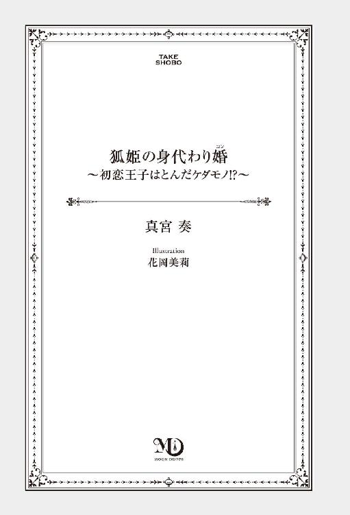
この作品は縦書きでレイアウトされています。
また、ご覧になる機種により、表示の差異が認められることがあります。
一部の漢字が簡略字で表示されていることがあります。
狐姫の身代わり婚
〜初恋王子はとんだケダモノ!?〜
Contents
序章
青く透き通った湖に映る、厳かな佇まいの城。
綺麗な水面に映るはちみつ色の城壁がまるでお菓子のようでとても美味しそうだ、なんてことをぼんやりと考えていると、隣からひどく不機嫌そうな声が聞こえてきた。
「なんだか、みすぼらしいわ。それにあちこちかび臭い。こんなところで暮らすなんて、考えただけでゾッとする」
着物の袖で口元を押さえながら悪態をつく妹の姿に、しゆんはそっと肩をすくめた。
「おやめ、りん。城の誰かが耳にすれば、気分を悪くしてしまう」
「聞こえやしないわ。人間なんて、みんな爺さまよりも遥かに耳が遠いもの」
できる限り穏やかな口調で窘めてはみるものの、琥珀色の瞳を怒らせて頰を膨らませている妹には効果がみられない。
──まぁ、仕方がないか。
彼女の激しい怒りも、今日ばかりはやむを得ない。
小花や毬が全体にちりばめられた鮮やかな黄色の着物に、豪奢な宝石のついた櫛。いずれは他国へ渡り獣人の王族へ嫁ぐことを夢見ていた彼女は、今朝になって突然父から言われたのだ。
『今日は人間の王城へ行く。おまえたちのどちらかが、将来嫁ぐ場所だ。きちんと挨拶をして回るように』と。
寝耳に水とは、まさにこのことだ。
その場にいた誰もが凍りつき、けれど誰一人として異論は唱えられなかった。
獣人の長たる父の命令は絶対だ。
どう足搔いたところで、その決定が覆されることはないと皆が知っている。
父がそれを決めた以上、自分たち姉妹の一方はいずれ人間の男の元へ嫁ぎ、この城で共に暮らすことになる。
長きに渡り同国内で対立関係にあった人間と獣人たち──両者の和平の象徴として、両族の思惑が入り乱れた政略結婚の駒として。
そしてそのどちらかを決めるのは、父かあちらの国王か。いずれにせよ、自分たちには選択権も拒否権も与えられないのだと、しゆんもりんも互いによくわかっている。
「ねぇ、見て。あれが例の」
「嫌だわ、陛下は本気なのかしら」
「怖いわ。蛇や鼠の皮を剝いでそのまま食べるんでしょう」
「私は、触ると移る病気を持っているって聞いたわ」
人間たちが思っている以上に、自分たちの聴覚は鋭い。
ざわざわと遠巻きにこちらを窺っている人々の囁きは、残念なほどにきちんと全て拾えてしまう。
最初から温かく歓迎されるとは思っていなかったが、それにしてもなんだか嫌な雰囲気だ。
おまけに、どうやら道にも迷っているらしい。さきほどから同じようなところをぐるぐる回っている気がする。彼らもとうにそのことに気がついてはいるはずだが、助けてくれる気配はない。父に促されるまま散策に出たまではいいが、このままではいつまで経っても元の場所へ戻れない。
「もういや。もう帰りたい」
「りん」
しゆんと同じ耳を持つ彼女にだって、当然人間たちのひそひそ話は届いている。
泣きべそをかいて自分の袖を引いた妹の姿に、しゆんがいよいよ困り果てて肩をすくめた──その時だった。
「っ!?」
不意にどこからか飛んできた何か。
得体の知れないそれを反射的に除けた拍子に、足元がふらついて。アッと思った時にはもう、しゆんはその場で盛大な尻餅をついていた。
妹の悲鳴が後ろから聞こえる。
打ちつけた腰の痛みに眉を顰めながらも、目の前で蠢く塊へと目を向けて、瞬間ざわりと全身が総毛立った。
チロチロと覗く赤い舌。不機嫌そうにとぐろを巻いて動いているそれは、生きた蛇だ。
押し殺したような笑い声が、どこからともなく聞こえてくる。
自分たちへと向けられた明確な悪意。
怖い、恥ずかしい、悔しい、悲しい。
少し離れたところから聞こえる妹の泣き声。ぐっと胸にこみ上げた熱いものを、しゆんは必死で呑み込んだ。
二人揃って泣いたところで、何も解決はしないとわかっている。
自分は、泣けない。今ここでは、泣いてはいけない。
膝の上でギュッと強く握りしめた手。
「わらわも妹も、蛇は苦手だ」
情けないことに、上手く足に力が入らない。それでも、できる限り背筋を正して上げた顔。
誰に聞かせるでもない言葉が、震えてしまわないようにと願いながら、精一杯声を張り上げる。
「なにか言いたいことがあるのなら、きちんと言ってほしい。直せる部分があるのなら直せるよう努めるし、批判もできる限り受けとめる。和平を決めたのは、両者の長であるはず。こんなくだらないことで、裁かれるものが出てほしくない」
自分が今もしこの蛇に嚙まれでもしたら。そうでなくとも、この件が父の耳に入るようなことになれば、人間の王とて何もしないわけにはいかなくなる。それは、自分たちの望むところではないし、そんなことのために来たわけではないのだと、それだけはわかってほしい。
だが、こんな発言も鼻につくだろうか。こんなことを言って、よけいに獣人の心象を悪くしてしまったらどうしよう。
遅れてやってきた震えに、自らの手を押さえつけようとしたところで、不意に人の気配を感じて顔を上げれば、一人の少年がしゆんのすぐ傍に立っていた。
自分で思っている以上に、緊張していたのかもしれない。
いつの間にこんなに近くまで来ていたのか、まるで気がつけなかった。
「俺も、こういうやり方は好まない」
辺りに視線を巡らせて、少年がおもむろに開いた口。
「いずれ、俺の伴侶になる人のことだ。批判や不満があるのなら、直接俺が聞く。ただ、彼女たちを傷つけることだけは絶対に許さないと覚えておいてほしい」
自分たちよりは少しばかり年上だろうか。穏やかな声はそれでも、とてもよく響いた。辺り一帯にも、そしてしゆんの中にも。
──いずれ俺の伴侶になる？
耳にした言葉を反芻して、ゆっくりと目を瞬く。
それが意味するところは、一つしかない。
自分を見つめる強い視線に気がついたのか。小さく息をついてこちらを見下ろしたその人は、ふんわりと笑った。
ふんわり──そう。まさしくそんな表現がぴたりと当てはまるような、ハッとするほどに優しい笑い方で。
「さっきの、とてもかっこ良かった......っていうのは、女の人への褒め言葉として間違いかな。でも、かっこ良かった」
先ほどまでの、歳不相応な威圧感はどこへ行ってしまったのか。こうして笑うと、一気に印象の変わる青い目は、端のほうが少し垂れていて人懐っこく見える。
「臣下の非礼は、俺の責任だ。申しわけなかった。怪我はない？」
ためらいなく、こちらへと差しだされた手。
顔を覗き込んだ拍子に、柔らかそうな亜麻色の髪がはらりと頰にかかる。
「だい、じょうぶ」
なんだかその顔を上手く直視できなくて、でも差し出された手も無視はできなくて。睨みつけるようにして手を重ねれば、存外に強い力で引き上げられた。初めて触れた人間の手は思った以上に厚みがあって、ひどく温かい。
「良かった。後からでも、どこか痛むところがあったら遠慮なく言ってほしい。俺はロジェだ。ロジェ・ラドクリフ。えっと......あれかな。貴女がしゆん姫のほうかな？」
「え？」
悪戯っぽくこちらを覗き込む顔。久しぶりに呼ばれたその名に、心臓がとくりと脈打つ。
いち姫、姫さま、おまえ──そんなふうに呼ばれるばかりで、区別のつけづらい自分たち姉妹を名前で呼ぶ人はほとんどいない。
驚いて瞬いた目に、心底楽しそうな笑顔が映る。
先ほどの柔らかな笑みとはまた違う、一瞬にして周りの淀んだ空気を払い飛ばすような明るい表情。
「ははっ、実は君たちの兄上から、二人はだいぶ性格が違うって聞いたから。じゃあ、あれだね。泣きながら走って行っちゃったほうが、りん姫だね」
「え......？」
わずかに眉を下げて頭を搔いた彼のその言葉に驚いて後ろを振り返れば、確かに先ほどまでずっと一緒にいたはずの妹の姿が、忽然と消えていた。
「申しわけないけれど、一緒に探してもらえるかな。彼女にもきちんと謝っておかないと」
「もちろん。かえって手を煩わせて申しわけない。においを追えばすぐに......」
そこまで言いかけて、しゆんはハッと口を噤んだ。
「におい？」
案の定傾げられた首に、じわじわと顔が熱くなる。
これまで普通のこととして捉えていたそれを恥ずかしいと思ったのは初めてで──そんな自分が、またひどく恥ずかしい。
いたたまれなさから縮めた身。
離し時を失って繫がれたままだった手が引かれたのは、その時だった。
「わっ」
身体が近づいた拍子に、ふわりと嗅ぎ慣れないにおいが鼻をかすめて。
「いいね、それは頼もしい」
耳を打った優しい声。
楽しげに細められた、晴れ渡る空のような瞳がやけに強く記憶に焼きつく。
ロジェ・ラドクリフ。ウォルズに住まう人間たちの第三王子である彼が、妹のほうを選んだのだという事実をしゆんが聞かされるのは、これから六年の月日が経った後のことだった。
一、 現実はそんなに甘くない
現実はそんなに甘くない
「わぁ、雨だ」
中庭で落ち葉拾いをしていた子どもたちの誰かが上げた声。
どこか嬉しそうなその声につられるようにして顔を上げれば、赤く色づいた夕陽の隙間から零れた雨粒の一つが、ぽつりと頰を滑り落ちた。
「おまえたち、もうそこまででよい。本格的に降りだす前に、早くお帰り」
秋雨は身体を冷やす。ふかふかの尻尾を振ってはしゃいでいた子どもたちは、しゆんの言葉に明るい返事を返しながらも、つと顔を見合わせた。
「はぁい。母ちゃんの言った通りだ」
「ね、うちの母ちゃんも言っていたよ」
「うん？」
「いち姫さまと、にの姫さまのこんれいが続くから、しばらくは雨降りだって」
「あぁ......」
子どもの目というのは、どうしてこんなにも澄んでいるのだろう。キラキラと輝く幾つもの瞳に見つめられて、しゆんはそっと眦を下げた。
「そうだな。明日は朝早くから忙しい。今晩はゆっくりお休み」
「いち姫さま。いち姫さまは、郷に残るんだよね？ いち姫さままで、人間なんかのところへ行っちゃったりしないよね？」
しゆんの言葉が終わるか終わらないかのうちに、足元にまとわりついてきた子ども。不安げにこちらを見上げた琥珀色の瞳に、一瞬息が詰まりそうになった。
「こら、おまえ！ 軽々しく姫さまに」
「よい」
ギョッとしたように声を上げた兵士を制して、柔らかな毛に覆われた耳の後ろを撫でる。灰色の毛を持つ狐たちは、郷の中でも特に人間に反感を持つ者が多い。遥か昔、この国の人間たちと戦になった際に一番多くの死者をだしたのが、この狐たちの集落だった。この子もきっと、当時の話を祖父母や親から繰り返し聞かされているのだろう。
「わらわは、ずっとおまえたちの傍にいる。だから、人間なんかなんて口にするのはおやめ。おまえが叱られるようなことになったら、わらわも悲しい」
「そっか......わかった。いち姫さまが悲しいならやめる。いち姫さま、また遊んでね」
「あぁ、いい子だ。気をつけてお帰り」
ぽつりぽつりと落ち葉を濡らす秋時雨。少しだけ勢いを増したそれに、きゃあきゃあと楽しげな声を上げて子どもたちが駆けていく。
人間なんかのところ、か。
この期に及んでまだ、そんな言葉に動揺してしまう自分が情けない。
心の整理なら、もうついているはずだった。自分は彼と一緒にこの郷で、幼い子どもたちの未来を守っていくのだと、そう決めたはずなのに。
開きかけた何かを再び閉じこめるようにして、長く細く息を吐き出す。じゃれ合いながらも徐々に遠ざかっていく小さな背中。気持ちの安らぐそんな光景をぼんやりと眺めていると、不意にこちらへと急ぎ向かってくる足音が耳に届いた。
「姫さま」
「ちや？ どうした」
灰褐色の小ぶりな尻尾が、着物の後ろで揺れる。しゆんの赤い蛇の目傘を手にやってきた彼女は、数日前から婚礼の準備で目まぐるしく立ち回っている。何かまた確認事項でもあったのだろうかと、傾げた首。硬い声を返してきた彼女の表情はどこか、緊張しているようにもみえた。
「長さまが、今すぐいらっしゃるようにと」
「父さまが？ わかった」
いったい、なにごとだろうか。
もうじき夕飯だというのに、それを待たずしてわざわざ自分を呼び出すなんて、珍しい。
りんの加減でも悪いのだろうか。
明日には嫁ぐ身だというのに、妹は風邪をひいて昨日から寝込んでいる。彼女の体調がまだ優れないのであれば、式の日程をずらすことなども考えなければならないのかもしれない。病気らしい病気は一度もしたことのない自分とは対照的に、よく風邪をひく妹は一度熱を出せば後が長い。
姿かたちは自分と瓜二つながら、何もかもが違う。そんな妹のことを思いながら、しゆんは迎えにきた侍女とともに、城の内部へと続く渡り廊下のほうへと足を早めた。
煌びやかな金色の襖が立ち並び、朱色の支柱が張り巡らされた大広間。
「りんが、男と逃げた」
上中下と拳一つ分段差が設けられたその広間の上段から、静かにその場へ落とされた言葉。
「は......？」
よく通る父の声を聞き返したのは、これが初めてだった。
「りんが、男と逃げたのだ」
「父さま。それは、冗談にしてはあまりに面白くありませぬ」
震える声でそう口にしながらも、心のどこかではわかっていた。
鬱陶しいくらいに生真面目な父は、冗談など一度も口にしたことがない。
「冗談ではない。しかも、相手は栄助だ」
こめかみを手で押さえ、怒気を孕んだため息を零す父の顔。その前でうなだれる兄と母の姿を順に眺めて、しゆんはただ瞬きを繰り返すことしかできなかった。
どんよりと淀んだ陰鬱な空気の中、見慣れた金色の障壁画だけが、場違いなほどに鮮やかな光を放っている。
──自分の婚約者が、双子の妹と駆け落ちをした。
その事実に、不思議と怒りは湧かなかった。ただ、とてつもない徒労感と空しさに、身体中からごっそりと何かが抜き取られたかのような気分だった。
しゆんは、副長の一人息子である栄助と。
りんは、人間の第三王子と。
それはもう数年前から決められていたことで、決して覆らない。そう信じていた。
幼い頃から傍にいた栄助のことを信頼してもいたし、穏やかで確かな絆を結んできたとも思っていた。それは恋心とは別のものだったが、結婚とはそういうものだと一族の者なら誰もが知っている。
「ロジェ王子との挙式は、もう明日では」
約束は違えられない。一つの国の中で、長いこと冷戦状態にあった人間たちと獣人と。数十年に渡る両者の歩み寄り、そして他でもない現国王と第三王子の強い希望もあってようやく成立したこの結婚は、異種族間の和平の証であり、とても重要なものだ。
こちらの都合で急きょ早められた式。とはいえ、衣裳などは全てもうあちら側にも届いている。後はもう、郷を発つ花嫁を皆で見送るばかりだった。
「この結婚は、我らにとって非常に重要な意味を持つものだ。わかるな？」
神妙な面持ちで一度言葉を切った父が、次に続けるだろう言葉は、しゆんにも予想ができていた。
「しゆん、おまえが代わりに行きなさい」
無理だ。
悩むまでもなく出た結論に、身体が震えそうになる。
「無理です。父さまだって、ご存知のはず。ロジェ王子がわらわとりんを間違うはずがありませぬ」
「おまえたちは双子だけあって、よく似た面立ちをしている。髪を切って、おまえがもっとしおらしく振る舞いさえすれば、誰も気がつきはしないだろう」
糸のように細いその目を更に細めて、淡々と父は残酷なことを言う。
この髪はしゆんの宝物だった。
心根は顔に表れる。これを切り落として妹の真似をしたところで、しゆんはりんにはなれない。幼い時分から一度たりとも自分とりんを間違えたことのない彼が、そんな付け焼き刃に惑わされるとは、とうてい思えないのに。
「最悪、既成事実だけでも作ってしまえば後はどうにかなる。ロジェ王子以外の者にとってはおまえたちのどちらが嫁ごうと同じこと。後から露見したとしても、既におまえが彼と夫婦であればどうにか収められる」
「何を、仰っているのです、父さま。彼らを裏切れというのですか」
思わず吼えるようにして吐き出した声は、ひどく震えてひび割れた。
双子の姉妹なのだからかまわない。これは、そんな単純なことではないはずだ。
「両族にとって大切な一歩であるからこそ、偽りなどあってはならないはず。我らを迎えてくれるという王子を裏切ってはならないはずでございましょう」
「迎えてくれる？ 違うな。あちらにとっても、我らの軍事力や郷の豊富な資源は喉から手が出るほどに欲しいものだ。滞りなく婚姻を結ぶことさえできれば、何も問題は起こらない」
ねっとりと絡みつくような不快な口調。
では、婚姻に際して問題が起こった場合にはどうなるのか。暗に告げてくる父の言葉に、握りしめた拳が震えた。
物心ついた頃から接してきた『人間』という種族のことは、嫌いではない。だが、ずっと育ってきた郷の同胞たちには、やはり彼ら以上に深い情を持っている。郷の資源は鉱物や水が中心で、医療技術も人間たちのそれにはとうてい及ばない。飢えた郷の子どもたちを、病に苦しむ人々の姿を、幼い頃からずっと見てきたのだ。この結婚が持つ意味ならば、しゆんだってよくわかっている。
「だが、それより前に他の者に騒ぎたてられてはことだ。よいな？ くれぐれも初夜を終えるまでは、絶対に人間たちにこの件を悟られるな」
こういう時の父は、絶対に揺らがない。
元より、獣人たちの長である彼の決定は絶対だ。命令に背く者は誰であろうと容赦しない。そんな父の性格は、嫌というほど知っている。実の娘だから──そんな理由で温情をくれるような人ではないことも。
どんなに不条理で無謀でも、それが長の命令だというのなら、しゆんには抗うことができない。
せめてもの反撃とばかりにその顔を目一杯睨みつけるも、あぐらをかいたその姿勢のままゆらりと尻尾を揺らされただけだった。
「......わかりました。肝に銘じてゆきます。同胞たちの未来のために」
ぐっと嚙みしめた唇から、わずかに血が滲む。
──わらわが。わらわがどれだけの想いで、整理をつけたのだと。
父は知らないのだ。
『他でもない、あの男が選んだこと。くだらない感情などは捨てろ。栄助を婿に迎え、一族の繁栄に貢献するのがおまえの務めだ』
突然残酷な現実をつきつけられた上に、あえて暴かれた想いにまで無理やり蓋をされた。あの瞬間、泣き崩れそうになったしゆんの気持ちも。そんなしゆんが人間の王城を訪ねるたび、仲睦まじい二人の姿を前にありったけの気力を搔き集めて平静を保っていた、なんてことも。
丁寧に手をつき頭を下げて、その場に立ち上がる。
去りぎわ、一瞬こちらを見上げた母は、困ったようにそっと目を伏せた。隣に並んだ兄もまた、神妙な面持ちで畳を見つめるばかり。
わかっている。大人しくて女らしくて可愛くて。父も母も兄も、栄助だって皆りんのことが好きだった。しゆんはいつも双子の『もう一人のほう』だ。
それは、これから嫁ぐあの男にとっても。
この国の第三王子。不覚にも初恋の相手であるその男の無駄に整った顔を思い出して、しゆんは深くため息をついた。
＊＊＊
嫁入りには、やはり雨がついてきた。
澄み渡った雲一つない青空から、音もなく静かに地を濡らす雨。
ちやが後ろから差してくれている緋色の番傘。その隙間から仰ぎ見た空はまるで、重苦しい闇に満ちたこの結婚を嘆き、泣いてくれているように見えた。
純白の綿帽子に大きな耳を覆われているせいで、よけいに不安が募る。
こんな状態でも音を拾うことに問題はない。
とはいえ、あまり視力の良くないしゆんにとって聴覚は頼みの綱だ。この状況は心もとない。
身代わりの件を知っているのは、この中ではちやのみ。頼る者もなく放り込まれる先は、異種族の城だ。もちろん今回の結婚に際してついて来てくれた同胞はたくさんいるし、幼い頃から幾度となく訪れては、それなりに歩み寄りを進めてもきた。心のうちこそ量れずとも、表立って攻撃的な人物は多くないと知っている。
けれど、その中の誰にも自分が身代わりであることを悟られてはいけないというのだから、心の休まる暇がない。
──そもそも。
雨で湿った石畳へ目を落としながら、誰にも気づかれないようにしゆんはそっとため息を零した。
一番の難関が夫だなんて、それ自体が無謀すぎる。
両親ですら、幼い頃はしゆんとりんを間違えることがあった。けれどそんな頃から一度だって、ロジェは自分たちを呼び間違えたことがない。
あの男に隠し通すなんてことが、果たして本当に可能なのだろうか。
ポココココ......ポココココ......。
軽快な打楽器の音色が、徐々に近づく。
大きな湖に囲まれたはちみつ色の王城。城へと続く大きな橋の前で、雨除けらしい衣をまとった人間の子どもたちが、音に合わせて舞っている。
目に優しいそんな光景に、しゆんが強張った頰を少しだけ緩めた、その時だった。
「殿下......!?」
王城の前辺りから、突如慌てたような声が響いて。何事かと顔を上げたしゆんの目に、こちらへとまっすぐに歩いてくる人の姿が映った。
少しくせのある亜麻色の髪。そこだけ伸ばされた襟足の毛が、尻尾のようにふわりとなびく。
初めて着ただろう羽織袴をもろともせず、堂々とこちらへ向かってきたその人は、数年前に見た時より更に大きく、また随分と大人びていた。
しゆんの目の前で足を止めたその人を見上げて、一気に跳ね上がった心臓の鼓動。じわりと滲む汗が緊張からくるのか、それともまったく別の感情からくるのかは、しゆんにもよくわからなかった。
逸らしたいと思うのに、どうしてか目が逸らせない。久々に嗅いだ彼のにおいに、自然と鼻がヒクつき、身体中の毛がざわつく。
──大丈夫。気がつかれるはずがない。
髪は切ったし、普段はしない化粧もきちんと施してもらっている。妹の仕草や言葉づかいだって、これまで何度もちやと確認している。鏡に映った自分は、我ながら驚くほどに妹と瓜二つだった。
じっとこちらを見下ろしている青の瞳。目尻の垂れた柔らかな印象のそれを、伏し目がちに見上げ、しゆんはそっと口を開いた。
もちろん妹らしく、恥ずかしげに口元へと手を添えるのも忘れずに。
「お久しゅうございます、ロジェさま。こうして無事に今日という日を迎えられて、わたくしは幸せでございます」
たぶん、妹ならばこう口にするだろう。たとえ心の底ではそんなことを、微塵も思ってはいなくても。りんはしゆんのようによけいなことを口にはしない。そういう妹の世渡りの上手さがいつも羨ましく、けっこう好きだった。
綿帽子の陰から、束の間視線が絡み合う。
──そして。
「それは私の台詞です」
彼はくしゃりと破顔した。
柔らかな印象の顔を、心底嬉しそうに綻ばせて。
それは幼い頃からのつき合いの中で、しゆんが一度も目にしたことのない彼の表情だった。
「私がどれほどこの日を心待ちにしていたか、貴女にはおわかりではないでしょう」
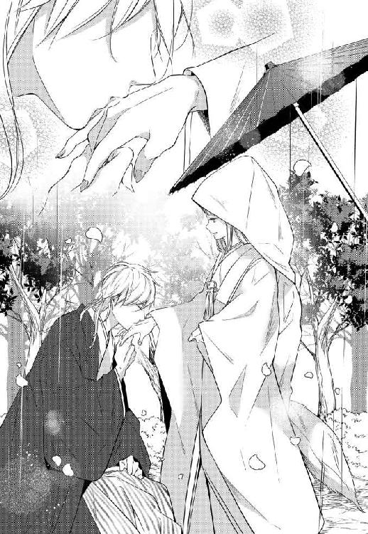
知っている。そんなことなら、嫌というほど知っている。
自然と震えそうになる手を、ためらいなくその場に跪いたロジェが摑んで。手の甲に押しつけられる柔らかな唇を、しゆんは身じろぎ一つできずに見つめていた。
「今この時より貴女と私は夫婦です。郷への暮らしにはもう戻してやれない。けれど、そのぶん貴女だけを愛し、生涯大切にすると誓いましょう」
何か、言葉を返すべきだったのかもしれない。
けれど、何も言えなかった。
見たこともない真摯な眼差しも、むず痒くなってしまうほどの甘い言葉も。全ては自分に向けられたものではない。
思い出したくもなかった叶わぬ恋心と良心の呵責に、胸がぎりぎりと痛み悲鳴を上げる。
「お手をどうぞ。道中疲れたでしょうが、もう少しだけおつき合いください」
こちらの風習に則って、この長い儀式を受け入れてくれたのはロジェのほうだ。だというのに彼は、どこまでもりんに優しい。
壊れものにでも触れるかのようにそっと引き寄せられて、隣に並び立ったその人を見上げる。穏やかながらも、真剣な表情。ふわりと近づいた顔に、周囲がざわりと沸き立つのを、どこか遠くのことのようにしゆんは感じていた。
否。
いっそ夢であってほしいと、心の底から願っていた。
「事情は後で詳しく聞こうじゃないか。ねぇ、奥さん？」
「っ......！」
「申し訳ない。貴女があまりに綺麗なものだから、つい」
驚きのあまりピンと伸びた尻尾。声もなく固まったしゆんを見つめ、くしゃりと照れ臭そうに笑う。その姿はもう、皆が理想と描くような素敵な王子さま、そのものだった。
綿帽子の陰で見せた、今の顔など幻ではないかと思うほどに。
──だから絶対に無理だと言ったのに！
くれぐれも初夜を終えるまでは。
父のその最低な言葉と大嫌いな糸目を思い出して、しゆんは思いつく限りの罵声を心のうちで浴びせた。
＊＊＊
「双子だから気がつかない？ 気がつくに決まってるだろ、何言ってんの」
──だろうな。
内心そう相槌を打てば、自然と半眼にもなる。
だからロジェが間違うはずがないと言ったのに。
糸目の父親をなじったところで、今更何がどうなるものでもない。
結婚初夜の寝台の上。
この国の名産品でもある艶やかな織布の中心で、白絹の寝間着を身にまとったしゆんは、緊張からではなく罪悪感からちんまりと身を縮めていた。
先ほどまでの爽やかさなど、どこへ行ってしまったのか。
夫になったばかりのその人は、尊大な態度でこちらを見下ろしている。そのこと自体に驚きはない。しゆんのよく知るロジェは元々こういう男だ。
「ばかなことを」
躊躇いなく伸びてきた手が、しゆんの髪に触れる。黄金色の髪がさらりとその指を滑り落ちて、胸の奥がつんと痛んだ。
その指は、いつも勝手にしゆんの髪を巻きつけて遊んでいた。幼い頃からずっと、しゆんが彼を避けるようになるまでは、顔を合わせれば毎度のように。触るなと口を尖らせて怒りながらも、そんな些細な触れ合いが本当はとても好きだった。
「だが、こうしているとわらわもりんに似ているだろう？ 郷の者は皆気がつかなかったというのに、よくわかったな」
「わかるよ」
静かな声。名残惜しそうに何度も毛先を弄ぶロジェをそっと見上げれば、存外に真剣な眼差しとぶつかった。
「俺が、何年しゆんを見てきたと思ってんの」
「え......？」
ふっと近づいた顔。濃くなった彼のにおいに、鼻がムズムズする。とん、と突如彼の指が胸元に押し当てられて、息が止まりそうになった。
「レモン一個分」
「......は？」
「俺の見立てでは、レモン一個分。この差は相当大きい」
「っ」
胸元を眺め、わざとらしく吐き出されたため息。心底がっかりしたようなその顔に、反射的に振り上げた手は、ふわりとたやすくかわされた。
「どこを見ているのだ、おまえは！ いつもそんな目で我らを見ておったのか！」
手にした枕を負けじと振り回すも、ロジェにはまるで当たらない。昔からそうだ。のんびりしているようで、こういう時は意外とすばしっこい。幼い頃から、そういう男だった。
「そうだよ？ 女性を見る時は、まずは顔と胸から。当然じゃないか」
「胸を張って言うことか！ おまえの取り巻きが聞いたら泣くぞ」
「そんな間抜けなミスはしない。まぁ......元々興味もないし、結婚しちゃった時点であんなもの勝手に解散するだろうから、別にかまわないけど」
『結婚しちゃった』
その言葉が胸につかえて、枕を振り上げていた手が止まる。
こんな言葉で茶化してはいるけれど、本当にそんな所だけでロジェが自分たちを見わけていたのではないことくらいはわかっている。
彼はずっと、りんを宝物のように大切にしていた。どう考えても、今一番つらいのはロジェだというのに、そこまで頭が回っていなかった。
「すまない」
ギュッと握りしめた枕は、郷のものとは違ってとても柔らかい。
強い石鹼のにおいは苦手だと言ったのを覚えてくれていたのだろうか。漂う香りはこの城で普段使われているものよりも遥かに薄く、嫌な感じがしない。けれど、その気遣いがよけいに身にこたえる。
「おまえを謀ろうとしたことは謝る。謝って済む問題でないことはわかっているが、本当に申しわけなかった」
何故だろう。
どうして双子なのに、ロジェも栄助も自分ではなくりんが好きなのだろう。
どうしてどちらかだけでも、自分に目を向けてはくれなかったのだろう。
この期に及んで、そんなひがんだ気持ちを抱いている自分がひどく惨めで、情けない。
しゆんだって、妹を愛している人になんて嫁ぎたくはなかった。それが自分の好きな相手なら、なおのこと。それでもしゆんは、この結婚が一族にとってどんな意味を持つものなのか、嫌というほど知っている。自分の感情なんて、彼らの命の前には塵も同然だ。
「我らのしたことは最低だ。だが、それは郷の民には関わりのないこと。昨年の冷害によって、我らの郷では食料が足りぬ。数年前から流行り続けている病を食い止める術も未だ見つけられていない」
だからこそ急いだ式。この結婚は、同胞たちにとって希望の光そのものだ。
「勝手なことばかり言って申しわけないが......どうか、受け入れてはもらえないだろうか」
姿勢を正して、布団へと擦りつけるように下げた頭。
声が震えてしまわないようにと願いながら、最後の言葉をつけ加える。
「わらわはりん本人にはなれないが、精一杯りんに近づけるように努めるから。どうか」
束の間、その場に重い沈黙が落ちる。
ややあって返ってきた声は、これまでより格段に低く重々しかった。
「それさ、本当に意味わかって言ってる？」
「わかっている。自分がどれだけ最低なことを」
「そうじゃなくて」
「え、あっ？」
乱雑に摑まれた肩。何事かと驚き、顔を上げようとした時には既に、柔らかな織布に背を包まれていた。
大きく見開いた目に、端正なつくりの顔が映る。
そっと近づいたその顔は、式の最中のように直前では止まらなかった。
「っん」
初めて重ねられた唇。
想像していた以上に柔らかく温かい感触に、思わず息が詰まる。
よく知っているはずの彼の顔が視界をいっぱいに埋めて、心臓がうるさいほどに早鐘を打つ。
「んん......っ」
啄むような口づけを何度かくり返した後、不意にぬるりとした舌が唇を割って、口内へと潜りこんできた。
ざらりと歯列をなぞる生温かい感触に、びくりと身体が震える。
包み込むように頰に当てられた掌。乞い求めるような舌の動きは、触れる手の優しさとは裏腹にひどく強引だった。
「っん......ぅ、んっ」
驚いて開いた歯の間へ、そのまま舌が差し込まれる。戸惑うばかりの舌を強く絡めとられて、吸い上げられて。ゾクゾクと背筋を震わせる初めての感覚に、呼吸が乱れて体温が上がる。
この先に何があるのかは、知識としては聞かされている。けれどその相手はロジェではなかったはずだ。そんなことは、想像することすら許されないものだった。
「はっ、ぁ......っ、っふ......っ」
角度を変えて、何度も与えられる口づけ。
これ以上ないほど近くで長い睫毛が揺れて、青い瞳と視線がかち合う。幾度焦がれたかもわからないその瞳いっぱいに、自分が映っている。
彼の瞳の奥にある感情がなんであるかは、よくわからなかった。
見たこともないほど強い何かを灯した目。それでいて、ひどく切ないような何かを秘めたそれがあまりに綺麗で。怖い、逃げたい、と。そんなことを思いながらも、視線を逸らすことさえできない。
どうしたら良いのかもわからずただ息を詰めていると、わずかに唇が離れて熱っぽい吐息がその上をかすめた。
「目ぇ閉じて、りん」
「っ！」
静かに落とされた声。囁かれた言葉に、反射的に身体が強張る。
──そうか。
『本当に意味わかって言ってる？』
隠そうにも、身体は心よりずっと素直だ。
今更ながらにロジェが言わんとしていたことを悟って、自然と唇がわななく。
覚悟してきたはずだった。
りんとして嫁ぐということは、この先もう自分をしゆんと呼ぶ人はいないということ。
それでも同胞のため、郷の民のために耐えなければと思っていたし、名前なんて単なる符号だとも思っていた。好きな人の口から別の女の名前で呼ばれるのがここまでつらいだなんて、考えてもみなかった。
一瞬ひどく歪んでしまった顔を、誤魔化すようにきつく目を瞑る。
ふっと再び彼の吐息が唇をかすめて。降ってくると思った口づけは、いくら待ってもこなかった。
「この意地っ張り」
代わりにとばかりに、むんずと摘ままれた鼻。
「んむっ？」
驚いて開いた目に、心底呆れているかのようなロジェの顔が飛び込んできた。
「なんで素直に嫌だって言えないわけ」
「わらわは一族の姫だ。皆のためなら」
「一生妹のふりをして生きてもいいって？ それはご高潔なことで」
「っ......ばかにするな！ おまえみたいに飄々と生きているヤツにはわからぬかもしれないが」
「わからないね。わかりたくもない。俺は、絶対にごめんだ」
「え？」
強い口調。睨みつけるように見据えられて、思わず間の抜けた声が口から零れる。
「何が悲しくて、自分の奥さんを別の名前で呼ばなきゃならないのさ。冗談じゃない」
「......だが」
「だが、じゃない。可愛い奥さんの頼みは、極力聞いてあげたいとは思うけどね。これはだめだ。身代わりの結婚なんて、俺は絶対に許さない」
「まっ、待て！」
決して短くはないつき合いだ。
本来柔和な面立ちのロジェがこういう顔をしている時は、本気だと知っている。
いったいどうしたら。
上手くまとまらない頭で、それでもどうにか身を跳ね起こして、彼の腕を摑む。
「待ってくれ」
ぶつかるようにして顔を埋めた胸からは、嗅ぎ慣れたいつものロジェのにおいに混じって、不思議な香りがした。毛がざわざわとするような、初めて嗅ぐようなにおい。
けれど。
それがなんなのか。深く考える間もなく、大きなその手がたやすくしゆんの身体を引き剝がした。
「悪いけど、泣き落としの類いにはのらないよ。色じかけのつもりなら、なおさら」
まっすぐにこちらを見据えて、きっぱりとした口調で告げられた言葉。揺るぎなく重ねられたその声を、絶望的な気持ちでしゆんは聞いていた。
「この結婚はいったん白紙に戻す。これは決定だ。異論は認めない」
＊＊＊
しゆんたち姉妹が父に連れられ、人間の王城を訪れるようになって間もない頃。今よりずっと人間たちは獣人を恐れ、また蔑んでもいた。
理性を失えば同胞でさえも喰らうだとか、水浴びを年に一回しかしないとか、いろいろな病気を持っているだとか。
聞きたくはなくても、しゆんたちの耳は彼らが思うよりずっといい。
皆が遠巻きに眺め、決して自ら近寄ろうとしない。そんな空気の中、いつもロジェだけがまるで種族の壁など存在していないかのように、自分たちに接してくれた。
もういつ頃からだったのかもわからない。気がついた時にはいつも、しゆんのその耳はロジェの声を探していた。ふわりと風に舞う尻尾のような髪を見つけるたび、自然と綻ぶ顔を引き締めるのが難しかった。
手を伸ばせば届きそうな位置にある、亜麻色の髪。
尻尾のようにそこだけ伸びた襟足の毛を眺めながら、しゆんは小さくため息を零した。
同じ布団の中。本来であれば今日夫婦になったはずの夫の背中が、とても近くてどうしようもないほどに遠い。
「ロジェ」
つん、と弱い力で目の前の毛を引いてみる。
返事はなかったが、寝ているわけでないことは気配から悟れる。
「怒っている......よな？」
「怒らないほうがおかしい」
簡潔な返事はもっともだ。けれど、そこに拒絶的な含みはない。それだけのことに、泣きそうなほどに安堵してしまう自分が情けない。
なけなしの勇気を振り絞ってその背中へと手を触れれば、わずかにロジェが身じろぎをした。
「誘っているつもり？」
「わらわでも誘えるのか。レモン一個分足りんのに」
「無理だな。レモン一個分足りないから」
──あぁ、いつものロジェだ。
そう思ったとたん胸のうちに熱いものがこみ上げて、しゆんは思わずその背に身を寄せた。広い背中は想像以上に逞しく、温かい。
「好き、だったんだ。わらわはずっとおまえのことが好きだった」
言うつもりもなかった言葉が、勝手に口から零れ落ちた。
「......なにそれ、泣き落とし？」
一瞬走ったしゆんの身体の緊張は、きっとロジェにも伝わっている。
どうにか震えないようにと返した言葉は、我ながらあまりにひどかった。
「そう、泣き落とし。上手いだろう？」
「絶望的に下手」
長いため息と共に、ほどかれた腕。歪む顔を見られたくなくて顔を伏せれば、こちらを振り返ったロジェにそのまま抱え直された。
無骨な手が、わしわしとしゆんの大きな耳を撫でる。
懐かしい、子どもの頃のような撫で方で。
「ロ......」
「怒っているのはしゆんにじゃないし、君たちとの和平を壊す気はないよ。だから、安心して寝な。長旅の上、長時間の式だ。疲れているだろ」
いつも適当なことばかり。にこやかな笑顔の裏で何を考えているのかもわからないこの男が、それでもこういう時に噓はつかないとよく知っている。
「ロジェ」
「うん？」
「......ずっと、ずっと好きだった」
礼も謝罪も。言いたいことは山ほどあったはずなのに、口をついた言葉はそれだけだった。いろいろな感情がごちゃごちゃで、頭を撫でる手があまりに優しくて、涙が止まらなくて。
本当に、最低だ。
こんなことを口にする権利すら、自分にはないはずなのに。
忘れたと思っていた。忘れなければと、必死に蓋をしてきた想いは、こうして本人を前にしていっそう鮮やかに蘇ってしまった。
「今だって」
今だって、変わらない。昔からずっと、この人が好きだった。
いつもフラフラとしていて、適当で、我儘で。でも、肝心なところで絶対に揺らがない芯のようなものがあって、とても優しくて。
彼が選んだのは他でもない自分の妹だ。わかってはいても、自分の中に根を張ったその気持ちに気がついてしまったその時には、既に引き返すなんてできないくらいに好きになってしまっていた。
「知ってた。......ごめんな」
かなりの時間が経ったのち、返ってきたその言葉が現実のものだったのか、夢だったのか。しゆんにはわからない。ただ、緊張の糸が切れたせいで急速に襲ってきた眠気。強烈な睡魔に引きずり込まれながらも、普段のロジェとは違うにおいが濃くまとわりつくのを、しゆんはぼんやりと感じていた。
＊＊＊
人間の王女が着ているような、ふわふわとしたドレスが嫌いなわけではない。
けれど、やはりしゆんは一族の着物が好きだ。伊達締めを締めて、帯を結べばそれだけで背筋が伸びて、しゃんと地面を踏める気がする。
「姫さま......それでは、あれを？」
後ろで帯の形を整えながら、そっと囁くちやの声はかたい。
『もしも、第三王子がこのことに気がついて、婚姻を解消すると言いだしたら、これを使え』
父がそう言いながら渡してきた小瓶は懐に入れて、肌身離さず持ち歩いている。
あの時後ろに控えていた彼女も、これが何かは知っているはずだ。
──郷に伝わる強力な媚薬。
父にとって娘たちはただの手駒。目的のためなら手段を選ばない一族の長にとって、娘の気持ちなんて取るに足らないものだ。
同衾しても、口づけ以上のことにはならなかった。気持ちが自分にないと知っている男に、無理やりこんなものを使って過ちを犯させることが、ずっと好きだった人からそんな形で抱かれることがどれだけつらいのか。あの父はおそらく、考えてもみないのだろう。
着物の上から、小瓶を忍ばせた胸元をギュッと押さえる。
『お召し物くらいは、こちらに合わせたいと、最初からそういうお話でしたので』
先ほどちやから聞いた言葉を反芻すれば、心はもう決まっていた。
「これは使わぬ」
「ですが、それでは」
「もう一度ロジェと話をしてみる」
どういう結論になるのかはわからない。
結局、この結婚は白紙に戻すより他ないのかもしれない。
それでも、これ以上彼を裏切るようなことはできない。
「大丈夫。ロジェは、わらわたちを悪いようにはしない」
安心しろ、と。和平を壊す気はないと、そう言ってくれた。
自分がどうしようもなく惹かれた男がどんな人間かなんて、嫌というほど知っている。
あれは、父の考えも言葉も、この媚薬の件まで。全てを話した上できちんと向き合えば、必ず応えてくれる男だ。
たとえ、一緒になることはないとしても。
彼に話したことが父に露見して、どのような目に遭わされようとも。
二度と彼に噓をつくなんてことはしないし、させない。
強く決意を固めて、息を吐く。しっかりと背筋を正して、しゆんは夫たるその人を捜すために部屋を後にした。
はちみつ色の壁に、毛織りの絨毯。古くから大切に使われてきたのだろう年代物の調度品。妹と共に幾度となく訪れた城内は、記憶にあるものとほとんど変わりがない。違いがあるとすれば、人間の使用人たちに混ざって立ち回る同胞たちの姿が時折見えることくらいだ。けれどそんな些細な違いが、何よりも大きいものであることは、しゆんにもよくわかっている。
それだけに、ぎこちないなりにも表面上頑張って取り繕ってくれている両族の使用人たちが、この結婚の真実を知ったらどうなるのか。考えるだけで気が重くなる。
「しかし、ロジェも相変わらずだな」
彼のほうで用意してくれたらしい淡い山吹色の生地に、紫や朱色の雲取紋がなんとも華やかな着物。
『お召し物くらいは、郷のならわしに合わせたいと、最初からそういうお話でしたので』
今朝方、この着物を持ってきたちやからその話を聞いた時には、彼らしい優しさに頰を緩めたものだったのに。
『申し訳ないのだが、ロジェを見かけたら報せてくれないか』
昨日の式で数年ぶりに会ったばかりの第一王子。廊下でたまたま出くわした彼からの、既視感たっぷりの言葉に、一気に気が抜けてしまった。
どうやら朝一番で国王陛下との謁見を終えて以来、姿が見えないらしい。そういうところまで、あの男は幼い頃からちっとも変わらない。
暇を見つけては護衛を巻いて行方をくらませてしまうのは、幼い頃から変わらないロジェの悪い癖だ。
そして昔からずっと、そういう時に、最初に彼を見つけるのは決まってしゆんだった。いつも驚くような場所にいる彼だが、しゆんの勘はよく当たるし、人一倍よく利く鼻は彼のにおいを敏感に拾ってくれる。おかげで当時から城を訪れるたびによく彼の捜索を頼まれていたのだが、さすがに妻という立場になってまで、彼を捜す羽目になるとは思わなかった。
「ちや？」
実のところ元々人間嫌いであるちやは、昔からロジェのことを快く思ってはいない。平素であれば『まったくです』と憤慨するはずの彼女が、何も言ってこない。どうしたのかと不思議に思って振り返ったしゆんは、物憂げなその顔の向こうからこちらへと近づいてくる人へと目を留めて、ぐっと口元を引き締めた。
「くさいな」
「え？」
嘲るような低い男の声に、彼女の尻尾がピンと伸びる。
ハッとしたように後ろを振り返って、全身の毛を逆立てたちやの姿が視界の隅に映って、しゆんは彼女の前へと足を踏みだした。
嫌な時に嫌な男に会った。とっさにそう思ったものの、逃げるわけにもいかない。
「城内が獣くさくてかなわないと思ったら、おまえたちか」
「......フレッド王子殿下。昨日はお忙しい中、ありがとうございました」
もう十数年も前から決められていた和平のための婚姻。内心はどうであれ、王城内に表立って攻撃的な人間はそう多くはない。
とはいえ、郷の同胞たち同様、人間たちの中にも当然しゆんたちのことを快く思わない者は存在している。この国の第二王子に当たるこの男は、まさにその筆頭だ。
「まったくだ。昨日式は終えたのだろう。いつまで王城に居座るつもりだ。皆迷惑しているのがわからないのか」
「っ......殿下、それはあまりに」
「ちや」
今にも牙を剝かんばかりの彼女を視線で制して、更に一歩踏み込む。
近くから見上げた大きな身体。母親似の穏やかそうな面立ちをしたロジェとは違って、上の兄二人は父王によく似た精悍な顔つきをしている。雄々しい面差しと大きな体軀は、一族において魅力的な男性の特徴であるはずなのに、昔からしゆんはこの王子のことが大嫌いだった。
今もそうだ。後ろに控えているのは、見知った面々。自らの息のかかった者しか周りにいない時を狙って、ネチネチと絡んでくる様はなんだか蛇っぽくて気持ちが悪い。
「一族の者たちが、殿下に何か粗相をしたのであれば、代わりに謝ります。けれど、皆まだ不慣れであるのも事実。ご不快な思いをさせることもあるかとは存じますが、短い間のことです。どうぞ大目に見てはくださいませんか」
りんはここまで言うだろうか。一人だったのなら、どう対処しただろう。使用人たちの雰囲気を見る限り、まだ身代わりの件が公になっているとは思えない。どうにか繕おうとは思うものの、考えてみればみるほどわからなくて不安になる。
常になく縮こまっているしゆんを見下ろして、フレッドはまるで獲物を見つけた獣のようにその目を細めた。
「はっ、随分と殊勝じゃないか。......残念だったな、その演技がロジェに通じなくて」
低く抑えた声で耳打ちされた言葉に、ざわりと身体中の毛が逆立つ。
「よくもまぁ、これだけ堂々と我らを裏切っておいて、素知らぬ顔で城を歩けるものだな。獣に、恥じらいという概念はないのか？」
吐き捨てるように囁かれる言葉も、今度ばかりはもっともだ。
「......申しわけ、ありません」
非は全面的にこちらにあって、言いわけのしようもない。
既に知られているのなら、真摯に謝罪をするほかない。
だが、普段であれば妹の前に立って嚙みついてくるしゆんの、平素にはないしおらしさは天敵をよけいに煽ったらしい。
「謝り方」
「は？」
「謝り方が違うだろ。獣は獣らしく、床に手をついて謝ってみろよ。代わりに謝るというのなら、それくらいの誠意は必要なはずだ」
ここでわざわざ声量を上げるあたり、この男も本当に相変わらずだ。
「......わかりました。それで少しでも溜飲を下げていただけるのなら」
「姫さま？」
「よい、ちや」
昔から、自分に不都合のない相手しかいない時を見計らって、陰険な嫌がらせをしてきた男だ。こんな男に頭を下げるなんて、恥辱のあまり身体が震えそうになる。
それでも今回の件は、共に来てくれた同胞たちをも欺いた上でのこと。
責められるのは、主である自分一人で十分だ。どんなに屈辱的なことであろうと、それが彼らを守るために必要なことであれば、いくらでも我慢できる。
「その代わり、全責任は主のもの。責めるのはわたくし一人にしていただけますか」
「あぁ、もちろん」
念を押すようにまっすぐ見据えた先。表面上は怒った顔を繕っていても、ニヤニヤと笑うその姿が透いて見える。
ぐっと強く唇を結んで、膝を折るために足を半歩引く。
とたん、不意に細められたフレッドの目に何事かと後ろを振り返って、しゆんは思わず大きく目を見開いた。
まっすぐにこちらへと歩いてくるのは、見間違えようもないその人だ。
けれど、初めて目にする灰褐色の紬に、揃いの羽織。一族の衣裳を纏ったロジェのその姿に、一瞬『本当に夢が叶ったのでは』と──そんなくだらないことを思って息が詰まった。
「随分と愉しそうだね、フレッド兄さん」
「っ」
聞き慣れたその声が聞こえてきたのは、まさに耳の上からだった。
ふわりと彼のにおいが鼻をかすめて、ためらいなく引き寄せられて閉じ込められた腕の中で、強張っていた身体からふっと一気に力が抜けた。自分がどれだけ気を張り詰めていたのか、否が応にも気がつかされる。
「それで？ なんだって俺の可愛い奥さんに恥ずかしい格好をさせようとしているのか、ちゃんと説明してほしいな」
場にそぐわないような、のんびりとした声が耳を打つ。
わずかに彼が周囲へと視線を巡らせる気配がして、それと同時にしゆんを抱く腕の力がわずかに強くなった。
「謝罪を求めるに値するだけのことを、彼女は我らにしたはずだ。違うか」
「違うね。誰が誰に謝るべきなのかの定義を、兄さんははき違えている。彼女は郷の長ではないし、兄さんは国王でもなければ当事者ですらない。彼女が今、兄さんに謝らなければいけない道理はないはずだ」
──怒っている。
仰ぎ見たその顔には満面の笑みが浮かんでいる。それでも、怒っているのだと長いつき合いですぐに悟れた。これは、本気で怒っている時のロジェの顔だ。
「それでも、どうしても謝罪が聞きたいって言うのなら、いいよ。俺がやる」
「っ......ロジェ？ それは」
さすがに聞き逃せない。
そう思って上げようとした声は、フレッドの嘲笑にかき消された。耳にこびりつくような、嫌な笑い声。
「はっ......ばかが。一国の王子が、たかだか女一人のために頭を下げるだと？ おまえにはプライドがないのか」
「プライド？ ないね。少なくとも、自分の奥さんが辱められるのを看過するのがプライドだっていうなら、そんなもの俺はいらない」
見慣れたその顔から、束の間笑みが消える。
まっすぐに兄を見据えて、彼はその目をすっと細めた。
「俺は、頭ぐらいいくらでも下げるよ。そんなことで彼女の名誉が守れるなら。だけどね、兄さん。俺が今ここでそんなことをすれば、さすがに陛下の耳に届くことになるんじゃないかな。だいぶ、人が集まってきちゃったからね」
相変わらずののんびりとした声に、剣呑な響きが混ざる。
辺りをさっと窺って弟の言葉が真実と受け取ったのか、フレッドは大きく眉を顰めて声を落とした。まったく似ても似つかないこの兄弟はそれでも、こういうところだけはよく似ている。
「脅しているつもりか」
「まさか。でも、これ以上俺の奥さんを虐めるなら......そうだな。うっかり陛下の前で口を滑らせることもあるかもしれない」
『たとえば、背の小さな黒髪碧眼の女性のこととか』
いったいどこから情報を得ているのか。満面の笑みで、ひっそりとロジェがつけ加えたそれは、しゆんの耳にも届いた。周りに聞こえるほどの声ではない。けれど、サッと青ざめたフレッドの顔を見る限り、それは彼にとって相当露呈されてはまずいものなのだろう。
「っ......さっさと自分の城に連れていけ！ それまでは目を瞑っていてやる」
これ以上は分が悪いと判断したのだろう。尊大な捨て台詞を吐いて、彼は身を翻した。豪奢なマントが空を舞って、それを追うように数人の臣下が後に続く。
その背が完全に見えなくると同時に、心底呆れたような吐息が耳をくすぐって、片方の肩が不意に重くなった。頰をかすめた柔らかい髪に、振り向くまでもなく彼がそこに顔を載せてきたのだと悟って、心臓がトクリと脈打つ。
「あんなクズのことなんて無視していいのに。俺の奥さん、本当に真面目なんだから」
「無視って......そんなこと」
「つらっと通りすぎればいいんだよ。何か言われたらさ、あらお義兄さま、いらっしゃいましたの？ 気がつきませんでしたわ、くらい言ってやればいい」
──本当に、変わらないな。
とっさに口から零れそうになった言葉を呑み込めば、胸がぎゅっと苦しくなった。
昔から、そうだった。
こんな適当なことを言ってはいても、自分たちに何かあれば必ず気がついて、なんだかんだ助けてくれる。フレッドのことに限らず、いつだってそうだった。
そして。
『りんは？ 大丈夫だった？』
彼が差し出した手。りんの短い髪が目の前で揺れて、ふわりと甘い香りごとその身をロジェが引き上げる。そんな光景を、ずっと隣で眺めてきた。
本来彼がこうして守りたいと思ったのも、この腕の中にいるはずだったのも、自分ではない。
「どうした？ まさか、何かされた？」
「っ」
唇が触れてしまいそうなほど近くから、覗きこまれた顔。
後ろから抱き抱えられたままの体勢であることを今更ながらに思い出して、一気につま先から頭まで熱が回る。
そんなしゆんの反応に何を思ったのか、ロジェが垂れ型の目をすっと細めた。
普段の彼にはない危うい空気を敏感に察知して、ピンと自然に尻尾が伸びる。
「だ、大丈夫です。助けていただきありがとうございました」
「......」
周りには人が集まってきてしまっている。今の自分はあくまでりんなのだと必死に繕った言葉に、彼はいっそう眉間の皺を深めた。何かを探るような、突き刺さるような目線が痛い。
「ちょうど探していたのです。もう一度、二人で話をする時間を頂けませんか」
鋭い視線から逃れるように、身を離そうと試みれば、意外と素直に彼は首へと絡めていた腕を解いてくれた。改めて向き合えば、ざっくりとした織布の柔らかな風合いは、彼の優しげな面立ちによく似合っている。
郷の衣裳を纏った彼の姿は、なんだかひどく心臓に悪い。
仲睦まじい夫婦を郷で見かけるたび、その姿を彼と自分とに置き換えていた。
それは、決して叶わないはずだった夢。
けれど。
『俺でも着られるかな』
──なんて口にして笑っていた幼い顔が脳裏をよぎる。
もしかしたらその夢が本当に叶うかもしれないなんて。彼は自分を選んでくれるかもしれない、なんて。そんなことをわりと本気で思っていた頃の記憶が蘇って、ヒリヒリと胸が抉れる。
「話ね。いいよ。俺も話したいことがあるし。ただ、今日はこれからどうしても外せない用事が入っちゃったから、戻ってからでもいいかな」
「あぁ、もちろん」
「新婚早々放置してばかりで、申しわけない」
それはこんな事態を招いたこちらの責任だし、そもそもしゆんとロジェは本当の意味で夫婦になったわけでもない。だというのに、心底申しわけなさそうにすくめられた肩。くしゃりと頭を撫でたその手は、どこまでも優しい。
──やっぱり、こんなものは使えない。絶対に使わない。
彼の歩みに合わせて、ふわりと風になびく尻尾のような毛。
兵士らを引き連れて遠ざかっていくその背を見送りながら、しゆんは小瓶を忍ばせた胸元をぎゅっと強く押さえた。
そういえば第一王子が探していた、なんてことを伝え忘れたとしゆんが気がついたのは、それからだいぶ経ってからのことだった。
二、レモン一個分
もしも。
もしも、もう二度と触れることも叶わない。そう思っていたはずの最愛の人が、最後の最後で自分の花嫁としてそこに立っていたなら、男はどうするか。
理屈ではなかった。
あの時、あの瞬間。気がついた時には既に、身体は勝手に動いていて。
その姿が幻でないかを確かめ、その手を捕らえるために、ロジェは花嫁の前へ跪いていた。
最初から、望みの薄い賭けだとわかっていた。それでも、足搔いてもがいて──結局、どうにもならなかった。
絶望的な気持ちで見上げた空は青く澄み渡っているのに、絶えず大きな雨粒を地へと零し続けていて。なんだか今の自分みたいだと、その時のロジェは思っていた。
感情を殺して笑うのは、昔から得意だ。
優しく完璧な夫をこの先一生演じきる。たぶん、それも難しくはない。
狐一族の風習に則った式を受け入れたのは、それが婚約者の希望だったからもある。でもそれ以上に、それであれば郷にいる肉親たちは郷で別れを済ませ、式には参列しないと聞いたからだった。いると知っていれば、自分は必ずその人を探してしまう。別の男の隣に並ぶ、その人の姿を。
ゾロゾロと連なる行列が目に入る。
深紅の傘の下。眩い純白の着物に、初めて目にする大きな帽子。
彼女がここへ着いたら、どうするんだったっけ。
行列の歩みは遅い。
もう一度確認しておこうかと、後ろに控える部下を振り返ろうとした、その時だった。
子どもたちの踊りに気がついたのか。不意に顔を上げた花嫁が、ふわりと口元を綻ばせて──瞬間、どくりと心臓が大きな音を立てた。
強すぎる願望が見せる幻かもしれない。そうは思いつつも、身体は勝手に動いていた。
『お久しゅうございます、ロジェさま。こうして無事にこの晴れの日を迎えられて、わたくしは幸せでございます』
突如、順序を無視して眼前までやってきた花婿を、驚いたように見上げた顔。
化粧をしようが、大きな帽子の陰になっていようが、そんなことは些末なことだった。
すがるようにして捕まえた手は、どうしようもないほどに温かい。
見間違いでは、なかった。幻でも、なかった。
決して手に入らないはずだった最愛の人が、自分の花嫁としてそこには立っていた。
ただし、しゆんではなくりんとして。
そこには、レモン一個分などではとうてい足りない、歴然とした差があった。
では、もしも。
もしも、どうしようもないほど愛しい女に『別の女の代わり』として誘われた男はどうするか。
答えは一つ。
据え膳食わぬは男の恥らしいけど、それでもやっぱりこればかりは譲ってはいけない部分だと思うから、一生分の男気を振り絞って死ぬほどやせ我慢をしつつ──正式な形で彼女を妻にできるまで待つ。
＊＊＊
ゾウリとかいう郷の履物は、死ぬほど歩きづらい。
だいたい何故、親指と人差し指の間へこんなにも試練を課すのだろう。
長時間に渡る昨日の挙式ですっかり皮の剝けたその部分が歩くたびに刺激されて、正直なところかなり痛い。それでも、この先せめて服装くらいは合わせてやりたいと思うのだから、こればかりは慣れるしかないのだろう。
延々と続く毛織の絨毯に、丁寧に磨かれた年代物の装飾。冷え込んできた夕刻の城内を急ぎながら、ロジェは小さく欠伸をかみ殺した。
そんなロジェの仕草に目を留めた長兄が、すかさず茶化してくる。
「新婚さんはいいなぁ。どうだ、長年の努力が実った気分は。最高だったろう」
「彼女で下世話な想像をするなら、その頭かち割りますよ、兄上」
「じょ、冗談だよ」
「合わせ稽古中の不慮の事故なんて、どうです？」
にっこりと浮かべた満面の笑みには、たぶん八つ当たり半分の殺意が溢れている。
「ま、待て。どうです？ じゃない。爽やかにえげつないことを言うな。落ちつけ」
何度も痛い目に合っている兄は、慌てたようにサッとロジェから顔を背けた。
『まったくなんで俺まで』とか『俺の用事は無視するくせに』とか。何やら横からブツブツと聞こえてくる愚痴には、もう無視を決め込む。
最高どころか、最低だよ。
昨夜の記憶を思い起こせば、自然と大きなため息が零れる。
まさかほんの束の間のキスしかできていない上に、一晩中眠れなかったなんてことは、口が裂けても言いたくはない。長いつき合いでも当然、共寝なんてしたことはない。寝惚けたしゆんが、まさかあんな感じになるだなんて、本当に知らなかったのだ。
朝まで耐えきった自分の理性を、本気で褒めちぎりたい。
地獄のような昨夜の光景を無理やり頭から追いだして、ロジェはこみ上げる欠伸を再びかみ殺した。
重々しい装飾に彩られた大きな扉。
兵士らが二人がかりで開いたその扉の向こうには、向かい合う形でソファに腰を下ろした二人の男の姿がある。
「おまえたちか。入りなさい」
周囲を震え上がらせるほど不機嫌そうな声は、この国の国王──ロジェたちの父親のものだ。
緻密な模様の織り込まれた豪奢なマントに、金の留め金。丁寧に櫛の通された豊な髪に、獰猛な肉食獣を思わせる精悍な面立ち。
なんとも厳めしい顔をゆるりと回した父同様に、その対面からもう一人の男がこちらへと顔を向ける。
絶妙な風合いの羽織を纏い、糸のような目を更に細めて自分たちを見つめた顔は、初めて会った時からほとんど変わりがない。
「これは、アロルド王子に、ロジェ王子。お二人とも少し見ぬ間にご立派になりましたな」
何がご立派に、だ。白々しい。
重大な偽りの真意を問うために設けられた場。重く張りつめた空気の漂う中、動揺一つ滲ませることなく堂々と腕組みをしている男を前に、自然と眉間に皺が寄る。
こんな時刻に着いているということは、昨夜のうちに知らせは届いたのだろう。
ゆらゆらと揺れる大きな尻尾は、先のほうがわずかに朱金がかっている。
大きな寝台の上。ちんまりと丸まって眠っていた彼女と同じそんな特徴に目を留めれば、胸のうちにこみ上げるものを呑み込むのが大変だった。
「ご無沙汰しております、銀治さま。貴方様もお変わりないようで何よりです」
「おい、ロジェ。落ちつけ」
意図して作った満面の笑みに、横にいる兄が小突いてくるのが鬱陶しい。落ちついてはいる。ただ、相当腹に据えかねているだけだ。
「次女の此度の醜聞、重ねての非礼には謝罪のしようもない。大変申しわけなかった」
「......謝罪ならまず、ご息女にされてはいかがです？ どれだけ不安な思いで、ここへ嫁いだのだと」
のれんに腕押しだとわかってはいても、思わず呻くような声が喉から漏れる。
『そういうことだから、殿下の願いは叶えられない。申し訳ないが、諦めてくれ』
あの時、そう告げたのは他でもないこの人だ。
彼は、ロジェの気持ちを知っていた。正直にりんの件を告げ、改めてしゆんを妻にと言ってくれたなら、ロジェはたとえ誰が反対しようともそれを受けただろう。父に頭を下げ、自分の持てる全てのものを投げ打ったってかまわなかった。
だというのに、まさかこの期に及んでまさか、彼女に妹のふりをさせるなんてことを選ぶとは思いもしなかった。
彼らの一族において女性の地位は決して高くないし、結婚というもの自体に対する概念も根本から自分たちとは違うとわかっている。娘の醜聞はすなわち長たる彼の恥。政略結婚の道具である娘の感情など彼にとってはどうでもいいものだということも、一応理解はしている。
きっと永遠に分かり合えない部分。それでも、口にせずにはいられなかった。
「やめなさい、ロジェ」
疲れた顔でこめかみを押さえている父が、わざとらしく息をつく。
「ロジェ。今回の婚姻の経緯については、おまえがいちの姫君から聞いたものと、相違ないようだ。しかしこちらとしても、既に夫婦としての実態がある以上は」
「ありません」
国王たる父の言葉の先を遮ったのは、これが初めてだった。
無作法だと知っていながら、あえて開いた口。
「ご無礼を、お許しください。けれど、私と彼女の間にはまだそのような関係はありません。確かに同室で一夜を過ごしはしましたが、それだけです。彼女本人や侍女たちに確認を取っていただいてもかまいません」
慎重に重ねた言葉に、束の間の沈黙が落ちる。
皆の疑いを孕んだ眼差しがまっすぐに自分へと向けられて、いったいどれだけ信用がないのだと思わず肩をすくめた。
だが、それもきっと無理はないのだろう。
ロジェ自身よく耐えられたなと思うのだから仕方がない。たぶん、一生分の理性と我慢を、昨夜で全て使い果たした。
「君は娘のことを好いていると思っていたのだが」
「っ......」
「ロジェ！」
いつか自分の花嫁になると信じていた少女。
ある日突然それを奪ったのは彼だというのに、いったいどの口がその言葉を紡ぐのか。
ことさら低くなった族長の声に、煮えたぎる怒りが沸点を越え、とっさに摑みかかりそうになった。
そんなロジェの手を止めたもの。それは、腹に響くような父の声でも、族長の後ろで身構えた獣人の兵士たちの姿でもなかった。
強く踏み込んだ瞬間、指の間に走った鋭い痛み。
わずかに落とした視線の先に、未だ見慣れぬ履物が映る。
『もっと、人間のことが知りたい』
あれはいつだったか。
彼女たちの一族から贈られた庭園の椅子に、わざわざ鼠の死骸が並べてあった時。口元を覆ってその場から立ち去った妹とは対照的に、亡骸へと手を合わせ、そんなことをぽつりと漏らした彼女の姿が脳裏をよぎる。
『おまえには自覚が足りん。もっとな、王族として......』
面倒くさい女だった。ひたすらに生真面目で頑固で口うるさくて、暑苦しくて。
鬱陶しく思っていたのは本当だ。けれど、ひたすらにまっすぐなその少女が、いつも少しだけ羨ましかった。
彼女がまっすぐに愛し守ろうとしているものを、自分もまた守ってやりたい──そんな性に合わないことを思い始めるくらいには、いつの間にか心底彼女を愛してしまっていた。
昨夜の、涙でぐしゃぐしゃになった彼女の顔が記憶に蘇って、瞼の裏を真っ赤に染め上げるほどの怒りを、ロジェはぐっと呑み込んだ。
力で相手を支配するのは、一番手っ取り早く簡単な手段だ。彼女を一族から切り離して自分のものにしてしまうのは、この結婚を守っていくより遥かにたやすい。
けれど、それでは何も解決しない。
自分が誰より大切に想う人は、そんな方法を決して受け入れはしない。
「えぇ、好きですよ」
低く抑えた自分の声が、部屋の中にやけに大きく響く。
「では、何故」
手を伸ばせば触れられそうな位置で、彼は怪訝そうに顔を歪めた。
「──本当に、大切だから」
おそらく心底、その言葉の意味がわからないのだろう。
ゆらりと揺れる尻尾に目を留めて、ロジェは満面の笑みを張りつけた。
「ご理解頂けないのであれば、そういう考えもあるのだと頭の片隅に留めておいていただければ幸いです。我々はもっと、互いを理解して歩み寄るところから始めなければならないはずです」
意味がわからない、とばかりに不愉快そうに鳴らされた喉。その顔を見て、少しだけ溜飲を下げる。
婚約者に逃げられた。その事実は、ロジェにとっても大きな醜聞には違いない。あの男なら、身代わりに差し出されたのがしゆんだと知ったところで、喜んで手をつける。わざわざ醜聞を広めるような真似をする訳がない。彼がそう思っていたであろうことくらいは、ロジェにだってわかっていた。
随分と虚仮にされたものだと思う。
だが、そんなこと以上に彼が、りんとしゆんのどちらでもかまわないだろうと。そんなことを思っていることのほうが、より腹が立つ。
「ロジェ。わかっているだろうが、この結婚は両族にとって非常に重要なものだ。いろいろと思うところがあるのもわかるが、呑み込んでくれ。我が王室では花嫁が純潔であったことを証明できねば、正式な婚姻の成立とは言えない」
それはこの父にも通じること、なのだろう。
双子なのだから、どちらでも同じ。妹のほうが見つかったとしても、既に別の男の手つきであれば、王室には受け入れられない。だから、妹の振りをした彼女をそのまま受け入れろと、面倒事を起こすなと。父がかけてくる無言の圧力には気がついていて、気がつかないふりをした。
「あぁ......そうだ。困りましたね？ 獣人の郷でも、初夜に手をつけられなかった女性は家に帰されるのでしたよね？」
今ではほとんど消滅した古の慣習。だとしても、言い逃れなんてさせない。
先に『しきたり』を持ち出したのは彼のほうだ。あれからどれだけの文献を漁ったのか。どの書物のどこにそれが記されているかだってもう、そらんじることができる。
年齢不詳な顔を前にわざとらしく首を傾げれば、三日月型の目の奥で彼女と同じ琥珀色の瞳がぎらりと光った。
「......殿下は何をお望みか」
獣のような低い唸り声。
望みなど、今も昔も一つしかない。
幼い頃からずっと好きだった、大きな耳の少女。
ロジェが誰よりも慈しみ、そしてたぶん誰よりもロジェのことを好いてくれていた少女。
それは根無し草のようにふわふわしていて適当で、本当にどうしようもない自分の、唯一の宝物だった。
『そういうことだから、殿下の願いは叶えられない。申しわけないが、諦めてくれ』
そう告げられたあの日、あの瞬間のことは決して忘れられない。
でも、恨み言はもうこれで十分だ。
すぎたことをネチネチと責めたところで、何にもならない。
元より価値観も、考え方も、見ている景色も違う相手。
彼には彼の正義がその時にはあって、優先すべきものがあった。
自分にもまた、この醜聞を世に晒したとしても譲れないものがあるのと、同様に。
大きく肩で息をついて、ロジェは張りつけていた笑みを消し、異種族の長たるその人をまっすぐに見据えた。
「挙式のやり直しを。今度こそ、きちんとしゆんとして。誰にも偽ることなく、彼女を生まれ育った郷から私の元へ嫁がせていただきたい。私の願いは、それだけです」
彼女が心の底から笑って、自分の傍にいてくれること。
それ以上の望みなど、ロジェにはない。
「おまえにしては、よく耐えたじゃないか、ロジェ」
金糸の刺繡に縁取られた緋色の絨毯。延々と先まで、廊下一面を覆うその絨毯の上。隣を歩く長兄の呑気な声が耳を打つ。
「それに、良かったなぁ......どうにかまとまって。愛は種族の壁を越えるってやつか」
腕を組んで、朗らかにうんうんと頷いている兄へと目を向ければ、自然と肩から力も抜ける。
「俺は時々、兄上の脳みそが羨ましい」
呟く声にも、自ずとため息が混じる。
あれが上手くまとまったように見えるのだから、筋肉でできたような彼の脳は、とても平和でいっそ清々しい。
「ん？ 何か言ったか」
「いいや、何も」
残念ながら、愛とやらが種族の壁を越えるためには、相当な努力と忍耐が必要だ。
──それに、足の指の鍛錬も。
相変わらずジクジク痛む指のつけ根に、ロジェは再び深くため息を零した。
『ロジェ。今日は獣人の姫君たちがここを訪れる。いずれおまえの花嫁になる姫君だ。仲良くやりなさい』
ある日の朝食後、父が一日の天気でも語るかのような口調で告げてきた言葉。
とんだ貧乏くじだ。
あの瞬間、幼ながらにもロジェはそんなことを思った。
怒っていたわけではないし、自らの運命を憂いていたわけでもない。にわかに色めき立つ兄たちや臣下の中、ただ単純にそんな言葉しか思いつかなかった。
深く根づいた確執。互いへの不信感が、こんな形ばかりの結婚一つでどうにかなるのなら、苦労はない。
父が自分を選んだ理由は、明白だった。
妻となるべき異種族の少女。その人の不興をかうことなく、こちらの本音を隠して完璧な婚約者──そして夫を演じ切る。それはたぶん、良くも悪くも素直で、根の真面目な上の兄たちには難しい。
表面上にこやかに対談をしている父と、獣人の長。
彼らが腹の底ではいつも互いを窺い、ひと時たりとも信頼など置いていないように。それは形ばかりで、気の休まる暇もない陰鬱な政略結婚。どちらかが少しバランスを誤れば崩れてしまいそうなほど、脆いハリボテ。
それもまぁ、面白そうでいいか。
当時のロジェは、そんなことを思うくらいにはいつも冷めていて投げやりで計算高くて、どこか遠くから自分を眺めているような、可愛げのない子どもだった。
人間がどうとか、獣人たちがどうとか。そんなことは正直どうでも良かったし、両者の関係が崩れて戦になるならそれはそれでいいとも思っていた。必要であれば、妻となる姫君を欺くことも、力ずくで従わせることも厭わないと思っていたし、実際そういうところは今でも変わらない。
ただ一つ、誤算が生じた。
そんなろくでなしの第三王子は知らなかったのだ。
愛情なんてものを、自分がその政略結婚の相手に抱く日がくるなんてことを。
そして、それがどれだけ思うままにならないものであるか、なんてことを。
大きな耳に尻尾の生えたその姫君を、心の底から愛しいと思うようになるまでは。
今日もまた絶好調に能天気な長兄と別れ、自室のほうへと足を向ける。
──何か、話があるって言っていたっけ。
昨夜はけっきょく一睡もできなかった上に、今日はほとんど休む間もなく立ち回っていた。さすがに身体は疲れ切っていて、眠い。それでも、わずかに取れた休息時間。あの時触れた彼女の温もりにどれだけ癒されたのか、おそらく彼女には思いもよらないのだろう。
『だ、大丈夫です。助けていただきありがとうございました』
こちらを見上げて、真っ赤に染まっていた顔。無理して繕った似合いもしない台詞を思い出してそっと眦を下げながら、ロジェが閑散とした廊下を歩く足を速めた──その時だった。
「ロジェ！」
「え？」
不意に、耳を打った大きな声。
自らの名に顔を上げて、ロジェはそのまま驚愕に目を瞠った。
「ちょっ、え、はっ？」
目の前でふわりと舞う黄金色の髪に、大きな耳。
しゆんらしいハッキリとした配色の艶やかな着物が、目に強く焼きつく。
彼女は空を舞っていた。
人間ではありえないような跳躍力で、ふわりと空を。
大きく手を伸ばし、まっすぐにロジェのほうへ向かって。
「っ!?」
反射的に手は伸びて、その身を受け止める。
もつれ合うように後方へと転げた拍子に、がつんと臀部に衝撃が走って、一瞬息が詰まる。
痛みに顔をしかめながらも、視界に映った大きな耳にぎくりと身体が強張った。
昔からそうだ。逃げ回るロジェを本気で捕まえたいとき、しゆんは突拍子もないことをやらかす。そして、にっこりと勝ち誇るのだ。見事に青あざなどを作りながらも。
「っ......ばかなことを。どこも打たなかった？」
狩りを思わせるその行動は、もはや本能的なものなのかもしれない。
だとしても、だ。まさかこんな歳にもなって、まだそんなことをするとは思ってもみなかった。
少女と呼べる歳の頃とはわけが違うのだ。
万が一にでも、身体に傷が残るようなことがあればと、慌てて肩を摑む。
「おい、しゆ」
呼びかけた名前に、独特な琥珀色の瞳がちらりと一瞬ロジェを見上げて。
「っ」
伸び上がるようにして重ねられた唇は、ひどく震えていた。
目を瞑るような間もなく、離れていった温もり。ゆっくりと瞬いた目に、ひどく緊張した面持ちのしゆんが映る。
「おまえが、父と話をつけてくれたのだと聞いた。......和平を守るために、わらわをもらってくれることにしたと」
「あぁ......」
揺れる琥珀色の瞳を前に、どうにか打った相槌が間の抜けたものになってしまったのは、仕方がない。
こういう話は回りが早いとは知っていたが、まさかこんなに早く広まるとは思ってもみなかった。
族長と別れてからまだ一時間ほど。その間ロジェが長兄を交えて父と話をつけている間に、もうその話は彼女の耳に届いてしまったらしい。
それも、真実とはだいぶ違う形で。
まずはどこから説明すればいいのか、と開きかけた口。先に言葉を発したのは彼女のほうだった。
「わらわは、今から最低なことを言う」
ぽつりと落とされた、唐突な宣言。
──最低なこと？
全くもって先の読めない展開にただ息を潜め凝視した先で、彼女がすうっと大きく息を吸う。
「わらわはおまえのことが好きだし、郷の皆のためにもこの和平は諦められない」
一息にそう告げた声は、よく響いた。
吐息が触れそうなほど近くで、琥珀色の瞳が大きく揺れる。
「だから、どうか待ってほしい。おまえが傍に置いてもいいと思えるような、とびきりいい女になれるよう、努力するから」
──あぁ、もう。
たっぷり数十秒遅れて吐き出した吐息と共に、ロジェは大きく天を仰いだ。
きっぱりとした潔い声。
まっすぐにこちらを見つめる眼の力強さとは裏腹に、彼女のその顔は今にも泣き出しそうだ。
きっと、話を聞いてから散々悩んで自分を責めて、それでも同胞たちのこともロジェのことも捨てられなくて。彼女なりに必死に考えて、考え抜いた結論なのだろう。泣いて詫びて縋るでもなく、自分だって巻き込まれただけと開き直るでもなく、かと言って素直にただ喜んで受け入れることもまたできない。
しゆんらしいな、と。そんなことを思えば、たまらず腹の底から笑いが込み上げた。
『なにか言いたいことがあるのなら、きちんと言ってほしい』
初めて出会った時から変わらず、ひたすらにまっすぐで真面目でなんだかんだお人好しで。本当に、何もかもがロジェとは正反対で。
「わっ、笑うな。わらわは本気で言っておるのだぞ！」
「はははっ、待って、無理」
「だから、笑うな！」
恋愛は惚れたほうが負け、らしい。
だとするなら、自分はきっと一生しゆんには敵わない。
『貧乏くじ』上等じゃないか。
あの族長は、とうてい信頼のおける相手ではない。
腹に一物も二物もあって、根本的に人間を信用していない。
いっそこんな結婚ごと和平の話も白紙に戻す方がよっぽど安全だし、楽だ。
それでも仕方がない。
どんな苦難が待っているとしても、やっぱり自分は彼女だけは手放せそうにない。
「俺はさ、しゆん。君が好きだったんだ」
告げた想いは、ロジェにとってずっと口にすることを許されないものだった。
「は？」
「だからさ、ずっと君が好きだったんだ」
「......は？」
「だから、しゆんが好きなんだ」
「噓だ。だって、おまえは」
「噓じゃない。昔からずっと、今も。俺はしゆんが好きだ」
まん丸に丸まった目。茫然とこちらを凝視する彼女の頭を、くしゃりと撫でる。
耳の後ろのつけ根のところを指でさすれば、しゆんはその眼を三日月型に細めた。これはもう反射のようなものらしい。
そんなところも昔とちっとも変わらない。
それだけのことに、胸が熱くなった。
「話が、根本から間違っている。俺はね、正式にしゆんを妻にしてから、君に触れたかったんだよ。わかる？」
訝しげに目を細め、困ったように視線をさまよわせて、彼女が百面相を繰り広げる。
口元の緩むそんな光景を前に、指先でくるくると弄んだ黄金色の髪の毛。サラサラと指先を滑り落ちていく毛に、すっと目が細まる。
別に特段長い髪が好きだったわけじゃない。ただ、彼女が自分のために伸ばしていてくれた髪。それはロジェにとっても、宝物だった。
「意味がわからない。結婚を白紙に戻すと言ったのはおまえだろう」
「この結婚はね。当然じゃないか。俺は今りんと結婚していることになっているんだから。きちんと解消して、しゆんを妻に迎えたいんだよ」
返事はなかった。いくら待ってみても。
だから。
誰より愛しいその人に、言葉を重ねた。
「しゆん」
触れた指先を滑り落ちる、黄金色の髪。
「随分と遠回りになっちゃったけど、もう一回やり直そう、最初から。今度はきちんとしゆんとして、俺の奥さんになりにきてよ」
また、伸ばしてくれるかな。
俺のために。
心のうちでそう呟いて、小さく息をつく。
「は......噓だ」
ようやく返ってきた、その声はひどく震えてひび割れていた。
「噓じゃない」
「噓だ。だっておまえはりんが好きで、だから自ら妻に望んだのだと」
今にも泣き出しそうに揺れた瞳。言われたことを理解すれば、たまらず舌打ちが漏れた。
なるほど。それが原因で、あれ以来徹底的に避けられていたのか。
忌々しい糸目の親父の顔を思い起こせば、思いつく限りの悪態が脳裏をよぎる。
「逆だよ。俺はしゆんが栄助を選んだから、こちらには嫁がせられないって言われたんだ。お互いに番の証を残してしまったからって。ちょうど、しゆんを正式な婚約者にしてほしいって伝えに行ったその日に」
「......待て。わらわが、なんだって？」
「栄助と約束を交わしてしまったって」
「そんな......っ、あり得ない。わらわはずっとおまえが好きで、栄助とそのようなことは決して」
「......うん。でも、覆せなかった。時期もちょうど冬で〈しきたり〉がどうなんてことまで持ち出されれば、こちらには手の出しようがなかった」
彼らのいう番の証とやらは、どうやら深い嚙み痕らしい。首や腰、腿などに残すもので、彼らの一族では最初にそれを残した相手が伴侶として認められるのだと、そんな話をあの時初めてロジェは聞いた。
見え透いた噓だ、とすぐに思った。
けれど、ちょうど彼らが発情期を迎える冬。既に籠ってしまっていた二人には会うこともできず、それが明けた頃にはその痕とやらも消えている。二人を問い詰めて証言をさせたところで『発情期』のせいで理性が飛んでいた、なんてことして白を切られるのは目に見えている。発情期というものの感覚も、その証の重さも、彼らのしきたりも。他種族である自分たちには理解することができない上に、立場上軽んじることも否定することもできない。
見え透いたその噓はけれど、曲がりなりにも王室に生まれた自分にとって、とんでもなく重たい噓だった。
「なんで、そんなこと」
「俺の元へしゆんを嫁がせたくない理由があったんだろうね」
ぴんと伸びた尻尾。わなわなと震える彼女のその顔を確かめるように両手で包み込む。短く整えられた眉のせいか、年齢よりも幼く見える顔。
いっそ力づくで──なんてことなら、いったい何度考えたかもわからない。
けれど、そんなことができないほどには、目の前のこの少女のことを本気で愛していた。
「でももう絶対に、他の男にはやらない」
ふっくらと色づいた唇。触れた指先が、意図せず震える。そんな自分に内心苦笑を漏らしつつも、開きかけた柔らかな場所へと、自らの唇を落とした。
「ロ......、っん」
驚いたように胸を叩いた腕ごと、抱え込むように強く引き寄せた身体。
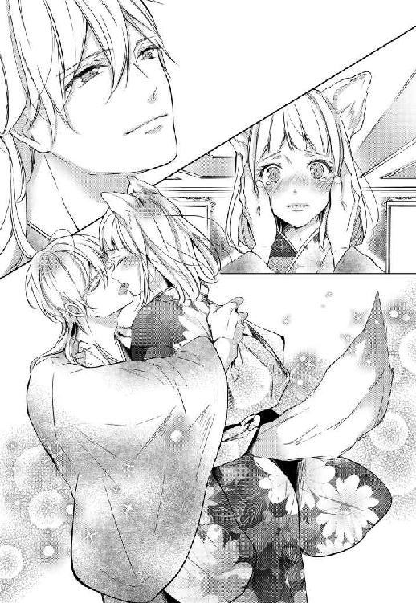
奪うように潜り込ませた舌先に、尖った歯が触れる。そこをなぞられると気持ちがいいのか、ぴくりと小さく彼女の身体が跳ねるのが、服越しに重なった肌から伝わってきた。
「っふ、は」
「......ん」
下手な息継ぎの合間に、時折零れる甘やかな吐息。腕の中にある、ふかふかと柔らかく温かな身体の感触に、自然と肩を抱く手の力が強くなる。
このまま黒い帯を解いて、何も纏わぬ肌に手を触れられたら。最愛の少女の中を自らで穿って、今すぐにでも自分のものにしてしまえれば。
胸の底に燻るそんな衝動を振り払うようにして唇を離せば、頰を真っ赤に染めて怒る彼女の顔が目に飛び込んできて。見慣れた彼女のその表情に、たまらず口元が緩んだ。
「っ......ばか！ 信じられない。こんな場所で何を」
「しゆん」
慌てて身体を離そうとしたその人を捕まえて、大きな耳に唇を寄せる。
「苦労はさせると思う。けど、後悔はさせない。だから、覚悟決めてきてよ。......次は、もうやめないから」
みるみるうちに、赤みを増した顔。
今にも泣き出しそうに歪んだ顔を覗きこめば、ヒトとは違う琥珀色の瞳いっぱいに、自分が映っていた。いつだってこんな自分を探してくれていた、その目。
「............レモン」
「うん？」
「レモン一個分。ぜんぜん増えてないけれど、いいのか」
──参ったな。
は、と小さく息を漏らして、思わずくしゃりと搔き上げた髪。
返事の代わりに、もう一度だけ口づけを落としながら、ロジェは内心で苦笑を漏らした。
レモン一個分。
『レモン一個分だ。レモン一個分、おまえより栄助のほうが、背が高い』
あれが、ささやかな意趣返しだったなんてことは、最愛の奥さんにはもう言えそうにない。
ろくでなしはろくでなしなりに、好きな人の前でくらいは、格好をつけたいものだから。
三、空は、泣いていた
「これは......どういうことですか。父さま」
眼前に突きつけられた短刀。
桐の鞘に収められた小さなそれを前に、どうにか吐きだした声が震える。
わずかに開いた窓から漏れ込む、湿気を孕んだ風。
これまで数度しか脚を踏み入れたことのない父の私室。先ほどまで燻らせていたのだろう煙草のにおいが漂うその場所を訪れたのは、父がロジェに吐いた噓の真意を問い質すためだった。
謝罪を期待していたわけではない。
けれど、こんなことはまるで想像もしてなかった。
「第三王子を殺せ」
ゆらりと不気味に揺れた尻尾。
まるで明日の天気でも語るかのような口調で告げられた言葉の意味がのみ込めない。
「すぐに、とは言わない。いずれスティアの王太子が国を訪れるはずだ。決行はその夜だ」
「意味が......わかりませぬ。そんなことをすれば、和平どころか全面戦争に」
言いかけて、はたと思い至った事実に思わず息を呑む。
「......最初から彼らと和平など結ぶつもりはなかった、ということですか」
信じられない。
信じたくもない。
けれど、息を詰めて見つめた先で、父はなんでもないことのようにそれを首肯した。
「スティアの同胞らと組んでこの国を獲る。元よりそのために、長く腹のうちを探っていた。計画を実行に移すに当たって、一番邪魔なのは間違いなくあの男だ」
「どうして、ロジェが」
『俺はさ、ずっと君が好きだったんだ』
耳に沁み込むような心地のよい声。ハッとするほどに優しい顔が脳裏をよぎって、情けないほどに声がかすれる。
そんなしゆんを見て目を細めた父は、再びゆらりと大きく尻尾を揺らした。
「十余万」
「え？」
「先のブレーナとの戦で、あの男が指揮を執り、討ち取った獣人兵の数だ。この意味は、わかるな？」
十余万。
政、ましてや戦に関することなどは、郷の女たちにはほとんど知らされることがない。けれど、少ない文献上でしか戦のことを知らないしゆんにだって、それがどれだけのことなのかはわかる。一般的に獣人を相手にした時、人間たちには倍の兵力が必要だと言われている。そうでなくとも、今のウォルズは度重なる戦で圧倒的に兵力が足りない。武器の材料となる鉱物も、人間たちの住まう地域では枯渇していると聞いた。おそらく、いつ負けてもおかしくないほど大きな戦。それを覆したというのなら、たぶん彼の手腕は確かなのだろう。
「おまえはあの男の裏の部分を、何一つ知らない。あれは、自身でも相当な数の同胞たちを殺めた、残忍で狡猾な男だぞ。よく、考えてみろ。何故、そこまでおまえにこだわる？ 何故、自分の醜聞も承知で式をやり直させる？」
「それは......」
『今度はきちんとしゆんとして、俺の奥さんになりにきてよ』
わらわのことを、愛してくれているから？
──本当に？ 本当にそうだろうか。
「掟上、千尋に万が一のことがあれば、一族の長は長女であるおまえの夫だ。今回の一件を露呈させたことで、少なくともあの男はおまえに対しての筋を通したと、その点においての評価を上げた。おまえ自身に対してもな。あれが、千尋を手にかけ一族を意のままにしようと考えていないと、おまえは言い切れるか。おまえの命を盾に一族を蹂躙しないとは」
兄を手にかけて？ 自分を利用して、ロジェが？
彼はそんな人じゃない。
そう返したいのに、父から発せられる空気にはこちらの反論を許さない鋭さが漂っている。
「あいつ自身が考えていないとしても、父王がどうかはわからない。くだらない恋心などは捨てろ。情にほだされて気を許すな。人間たちがこれまで幾度我々を裏切ってきたと思う」
「......だから」
吐き出した声が、どこか遠くに聞こえる。
「だから、噓まで吐いてりんを彼の元に嫁がせようとしたのですか。わらわが、彼に気持ちを寄せていることを知っていたから。大人しいりんなら、素直に従うと知っていたから。たとえ、その後人間たちに捕まって殺されようとも、手元に長女が残るのであれば構わないと......そういうことだったのですか」
存外によく響いたそれに、父は返答を寄越しはしなかった。ただ、ゆらりゆらりと尻尾を揺らしながら、顎を擦っただけで。
でも、返答ならそれで十分だった。
束の間の沈黙ののち、父がわずかに姿勢を正す。
「これは命令だ、しゆん。あれの信頼を得るように努め、されど決して心を許すな。案じずともおまえの身を人間共に渡しはしない。おまえは当日、言われたように動けばいい。後の身の振りも、おまえの幸せを考えた上で、もう全て決めてある」
ねっとりと嫌な空気を孕んだ父の声。
不快なほどに湿った夜風が、零した吐息と混じる。
「............父さまの」
──きっと明日も雨だろうな。
乾き切った唇を気力だけで動かしながら、ぼんやりとしゆんはそんなことを思っていた。
「父さまのその選択の先には、本当に我らの幸福があるのでしょうか」
幼い頃から一度として自分たちに笑いかけたことがない父は、娘の乾いた声に初めて笑った。
糸のように細い目を三日月型に丸め、開いた口から尖った牙を覗かせながら。
初めて見る父の笑顔は、少しだけ──ほんの少しだけ、自分たちと似ている気がした。
＊＊＊
二度目の嫁入りにも、やはり雨がついてきた。
しゃんと背筋を正して、袖を通した純白の着物。
『白無垢』は強い決意を示すもの。
心なら、もう決めてきた。
前回と同じ道。同じような面々。前回以上に冷ややかな嘲笑や侮蔑、嫌悪を顕にした声も漏れ聞こえる中。思うことはたくさんあったのに、幸か不幸かぼんやりと考えごとをしている余裕はしゆんにはなかった。
「ば、ばあや。わかったから。わかったから、もう泣きやめ。な？」
今回どうしてもと名乗り出て番傘を差してくれているばあやは、郷を出てからというものずっと号泣している。
「だって、しゆんさま。本当にようございました！ 誰がなんと言おうと、私はあの王子さまのことを見直しましたよ。えぇ！」
なんでもかまわないから、とにかく一刻も早く泣きやんでほしい。先ほどから、揺れる番傘に上手く入るのに必死で、これではまるで何かの訓練のようだ。何故、素直にちやに差してもらわなかったのかと、それだけが本気で悔やまれる。
おまけに。
「皆も、もういい加減泣きやめ！ これではまるで葬式のようではないか」
『今回の一件を露呈させたことで、少なくともあの男はおまえに対しての筋を通したと、その点においての評価を上げた』
父の昨夜の言葉は、どうやら本当らしい。
ことの次第を知った同胞たちまでもが、何故か皆おいおいと泣いているものだから、さながら葬式のような状態だ。祝福の薄いこの結婚の先を憂いている暇がないのはありがたいが、幼少の思い出に浸るとか、感慨にふけるとか、そんな余裕もまったくない。皆をなだめ、せっかくの着物を雨に濡らさないようにするので手一杯だ。
ポココココ......ポココココ......。
以前も耳にした、軽やかな打楽器の音。
雨除けを被って踊っている子どもたちの中に、郷の子どもたちが混ざっている。誰の計らいだかわからないが、その光景は足を止めて見入ってしまいたくなるほどに、ひどく温かい。
湖の中にぽっかりと浮かんで見える、はちみつ色の王城。その前で待つ花婿は、前回のように橋の上まで迎えにくるようなことはしなかった。
ただジッとこちらを眺めている彼の姿に、いろいろな感情が一気にこみ上げて上手く顔が上げられない。
「しゆん」
自分の名を呼ぶ、ロジェの声。綿帽子の陰から見上げた先で、彼は笑っていた。以前と同じく、あるいはそれ以上に心底幸せそうなその笑みで。
あの時の笑顔や言葉も、全ては自分に向けられたものだったのだろうか。
少し前の記憶が頭の中に蘇って、胸の奥がつんと痛む。
「今日は跪かないのか？」
頑張って茶化そうとした声は、情けないほどに震えてひび割れた。
だめだと思えば思うほどひどくなる震えにギュッと拳を握りしめれば、柔らかな吐息が耳をくすぐって、骨張った指にそっと頰を拭われた。
「お望みならやってもいいんだけど......これ以上花嫁を泣かせたら、式にならないかなって」
涙で歪んだ視界に、困ったように笑うロジェの顔が映る。
柔らかな面立ちに、亜麻色の髪。尻尾のような長い襟足の毛。
「ロジェ」
抑えようのない感情に推され、目一杯手を伸ばす。
初めて自ら重ねた唇に、綿帽子の陰で彼はまた笑った。
ハッとするほどに優しいその笑みが、初めて出会った時のそれと重なって。子どものように泣きじゃくる困った花嫁の手を、それでも彼はあの時のように笑って引いてくれた。
＊＊＊
「ロジェ」
「なに」
「ロジェ！」
「だから、なに？」
「ちょっと待った。落ちつけ。顔が怖......っ!?」
柔らかな寝具の上というのは、逃げを打つには些か動きづらい。緊張のあまり、ガチガチになった身体ではなおのこと。
わたわたと逃げ回っていた脚を摑まれ、反動でぽすんと掛布に顔が埋もれる。
薄い洗剤のにおいはあの夜と変わらず、ひたすらに優しい。
「待たない。俺がどれだけ待ったと思ってんの。悪いけど、一生分の理性はもう使い果たした」
そんな恐ろしいことをあっさりと言われても困る。
恐る恐る振り返った先。こちらを見下ろす垂れ型の青い目も、口角の上がった薄い唇も、すっと通った鼻筋も。いつもと変わりはない見慣れたロジェの顔だ。けれど、それが今は見慣れぬ何かをまとって、まるで別の男のように見える。
束の間まっすぐにかち合った視線。
落ち着かない気持ちを示すかのように、ふるりとひとりでに尻尾が揺れて。それが合図であったかのように、彼が身を乗り出した。
わずかに寝台が軋んで、顔が近づく。
慌ててギュッと目をつむれば、小さな吐息が唇をかすめて、甘く食むような口づけが降ってきた。
「......ん」
以前も嗅いだことのある、身体中の毛がざわつくような不思議なにおい。ロジェのにおいに混じったそれが、今日は一段と強い。
何度かなだめすかすように唇を啄ばまれたあと、閉じていたそこを押し開くようにして、生温かい舌が口内へと潜りこんできた。
「んっ、ん......はっ、......っぁ、っふ」
これまでのものとはまるで違う貪るような激しい口づけ。
強く押しつけられた唇が熱い。
尖った歯の形を確かめるようになぞられるたび、奥まで差し込まれた舌に歯列を舐め取られるたび、頭がふわふわして何も考えられなくなる。
「はっ......ぁ、っは」
苦しい。でも、気持ちがいい。
角度を変えて、何度も確かめるように口内の至る所を舐られて。ぬるりとした舌に強引に舌を絡めとられて。混じり合った互いの唾液で、こくりと喉が鳴る。
「は、ん......っ」
温かいその舌を、どう受け入れていいのかよくわからない。
それでも、ロジェの真似をして舌を合わせたり吸ったりしてみれば、腰の辺りを震わせる甘い痺れに、たまらず吐息が零れた。
「んっぅ、っは......ぁ」
そっと耳に触れた指が、形を確かめるように輪郭をなぞる。
くすぐったいような、気持ちがいいような奇妙な感覚。
触れられたことでより敏感になった耳が、粘液が擦れるたびに漏れるわずかな音を拾って、羞恥で頰が熱くなった。
「っは」
ふっと離れた唇の隙間に、熱い吐息が零れる。
離れていった温もりを追うように瞼を開ければ、思いがけず近くで視線がぶつかった。
顔の隣に手を押しつけ上目遣いにこちらを見つめる瞳が、見たこともないほどに獰猛な熱を孕んでいる。
「ほしいんだ、しゆん。全部、俺のものにしたい」
低くかすれた声が鼓膜を震わせる。
びくりと震えた身体には、彼も気がついているのだろう。それでも、彼はしゆんを閉じ込めている腕を離しはしなかった。ただ、ほんのわずかにその目を伏せただけで。
「ごめん、余裕がなくて。好きなんだ、しゆん。本当に、どうしようもないくらい」
──ずるい。
ロジェはずるい。
誰より好きな人から、そんなことを言われて。
すがるように乞い求められて。
それ以上抗える女なんて、たぶんそういないとしゆんは思う。
「ロジェ」
「うん？」
明確な返答の代わりに、伸ばした腕。抑えようのない気持ちに駆られるようにして、彼の首へと顔を寄せる。
「っ......しゆん？」
「ロジェ」
それはもう本能的な行動だった。
ただ目の前のその人が好きで、自分のものにしたくて、止められなくて。
譫言のようにその名を呼んで、自らのにおいを擦りつけるように舌を這わせて、甘嚙みをくり返す。その行為が同胞たちの愛情表現であることは知っている。けれど、こんなふうに誰かにそれをしたいと思ったのは初めてだった。
「しゆん」
「んっ、っぁ」
妻からの拙い愛情表現に応えるように、ざらりと首筋を舐め返してきた舌。やわやわと首を食む唇の感触は少しだけくすぐったくもあって、それがまた興奮を煽る。
先日嗅いだものと同じ。普段とは違うロジェのにおいが、しゆんのそれと混ざり合って身体にまとわりつく。これが発情のにおいなのだと、回らない頭でもようやく理解ができた。
「っや......ぁ、あ、んんっ」
何度も首へと唇を落としながら、寝間着の中へと潜り込んできた手。掬い上げるようにして乳房を捏ねながら、乳首を指の腹で押し潰されて、むず痒いような心地いいような初めての感覚に自然と声が漏れる。
聞いたこともないような自分の甘ったるい声に、慌てて口元を覆おうとした手は、やんわりと摑まれて敷布に押しつけられてしまった。
「やっ、ロジェ......っ」
「だめ。可愛い声、たくさん聞きたいんだ。もっと聞かせてよ」
「ん、ぁっ、やっ」
これではよけいに恥ずかしくなった。
首元を離れた彼の顔がそのまま下へと降りてきて、円を描くように乳輪をなぞる。こらえたいと思っても、次々と与えられる刺激に勝手に声が漏れてしまう。
舌先で乳頭を絡めて、大きな手で全体を捏ねて。探るような動きはひどく優しいのに、もたらされる刺激はどんどん身体を熱く火照らせる。
「硬くなってきた。気持ちいい？」
「はっ、んぁ......そんなこと......っ」
囁く声はどこか楽しげで、ひどく意地悪だ。
そんなこと、言わないでほしい。そう伝えたいのに、裾を割って内腿へと触れた手。骨張った指が探るように秘裂をなぞって、それどころではなくなった。
「あぁっ、あッ......っは、ぁ......、あっ、んん」
襞を割って潜り込んできた指が蜜を絡めて、肉芽から膣口までを何度も往復する。
すっかり硬くなった胸の頂きを吸い上げられて、確かめるようにそっと秘処を弄られて、これまでとは比にならない大きな刺激に思わず身を捩る。
「やっ、ぁ、だめ......っ、ぁっ」
「こら、逃げない」
反射的に逃げを打った身体は、たやすく腰に回された腕に止められた。
「だって、こんなっ」
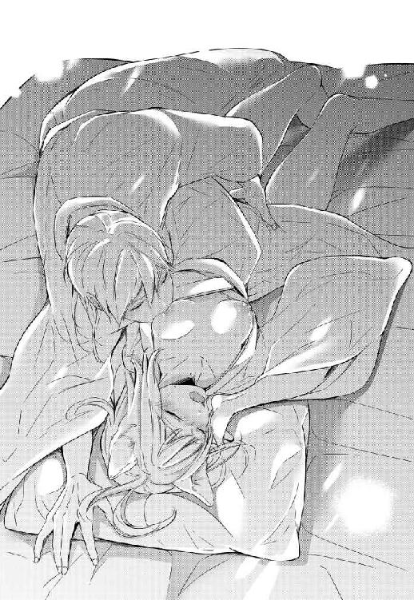
栄助と婚姻を結ぶのだと決められていたしゆんが教わってきたのは、一族同士の房事だけだ。お互いの首筋を刺激し合って発情を促せば、後は自然と交われるように身体が準備をすると。その後は夫に任せているだけでいいのだと。さも簡単なことのように、ばあやは教えてくれた。
人間のそれがまったく同じだなんて思ってはいなかったが、こんな風にあちこち弄られるなんて、あられもない声を上げているところを眼下に晒されるなんて思いもしなかった。
「こんなの、恥ずかしくて死んでしまう」
消え入りそうな尻すぼみの声は、それでもきちんと彼の耳に届いたらしい。
「あぁ......そうか。じゃあ、こっちからにしようか。君たちの一族では、そうするみたいだし」
いつもよりもかすれた声が耳を打つ。
後ろから抱えられるように引き戻されて、今度はうなじに唇が降ってきた。
さらりとした髪が首の裏をくすぐって、彼の手がするすると寝間着を剝がしていく。なんとなしそれを手伝いながらも、うなじから背中へと何度も落とされる口づけに、甘い吐息が零れた。
「っ......あまり見るな」
あらわになった身をじっと見下ろす視線を感じてふるりと尻尾を振れば、小さく笑う気配と共に剝き出しになった肩へ唇が押し当てられた。
「なんで？ 可愛いよ、しゆん。ずっと見ていたいくらいだ」
「っ......！」
こういう時の常套句だとわかってはいても、身体は正直だ。
ひくりと素直に震えた秘処へ、再び彼の手が触れる。
「んっ、あっあ、......ッ！」
くちゅりと音をたてて、秘裂を押し開いた指。体液にまみれた陰核をぬるりと捏ねられたとたん、悲鳴のような声が口から零れた。
──夫婦の交わりがこんなだなんて聞いていない。
知ってしまえば、きっとそれを夢見てしまう。
だから、人間の夫婦の営みについては頑なに耳にいれないようにしてきた。
それが、こんな快楽を伴うものだとは思いもしなかった。
はしたないと思うのに、零れる声が抑えられない。
「ロジェ......？ そこは」
ふっと、唐突に背中から離れた温もり。それを恋しく思う間もなくそっと尻尾がよけられて、蜜に塗れた秘処に温かい吐息がかかる。
驚きのあまり後ろを振り返り、しゆんはすぐさまそのことを後悔した。
「っ......」
「恥ずかしい？」
くすりと笑う意地悪な声。意味もわからず目を白黒させているうちに、柔らかなものに襞を押し広げられる感覚がして、突如敏感な肉芽に何かが触れた。
「ッあ、ぁ、あっ......！ だめ、だめ......ッ」
自分の汚い場所に、ロジェの綺麗な顔が埋まっている。
そんな場所を、ロジェの舌が這って、溢れでた体液を吸われている。
彼が何のためにこんなことをしているのか、まったく理解ができない。やめてほしいと思うのに、開いた口から漏れるのは言葉にもならない咽び泣きのような声ばかりで。
蜜に塗れた襞の間を丁寧に這う舌。一番敏感な蕾を唇で扱かれて、舌で転がされて、せり上がる快楽に呼吸が乱れる。
「すごいね。どんどん溢れてくる。これは気持ちいい？」
「やっ......、ぁ」
とてもじゃないけれど、もう後ろは振り返れない。
蜜口を弄っているのは、彼の指だろうか。骨張ったそれが浅いところを捏ねるたびに、チュクチュク淫猥な音が耳に届いて、いっそう身体が熱くなる。
気持ちがいい。でも、そんなところを見られているのかと思うと、恥ずかしくて泣きたくなる。
どうしたら良いのかもわからず枕に顔を突っ伏せば、浅い抜き差しをくり返していた指が、探るようにゆっくりと中へ潜り込んできた。
「う、んっ」
少しずつ押しては引いて、ゆっくりと沈められたそれは痛くはなかった。ただ、自分の中に別の何かがいる感覚は、なんだかひどく苦しい。
「っ......きついな。痛くない？」
吐息混じりの、かすれた声。
そちらへと目を向ける代わりにただ頷きを返すと、柔らかな髪が太腿をかすめて、再び肉芽へとざらりとした舌が絡みついてきた。
「ロジェ......っ、それ、だめ、だめ......っ」
少しずつ馴染ませるかのように、出し入れをくり返す指が、奥へ奥へと潜り込んでくる。
それを助けるかのように、唇や舌で気持ちのいいところを刺激されて、くちゅくちゅと響く淫猥な音はよけいに大きくなった。
「はっ、あッ......、あっ、あッ」
いつの間にか、中を埋めている質量が増えている気がする。
蜜を搔きだすように抜き差しされるそれはとても苦しいのに、舌先で蕾を舐られて唇で優しく食まれて、そこから湧き上がる快楽にただ声を漏らすしかできない。
「っや、ロジェ。っあ、あぁぁっ──......っ」
もう、何がなんだか自分でもよくわからなかった。
ビクンと大きく震えた身体に甘い痺れが走って、頭の中が真っ白に染まる。
ぼんやりとした頭でも自分の中が、彼の指を締めつけながら痙攣しているのがわかって。その感覚が徐々に収まってくると、身体中から一気に力が抜けた。
「あぁ、達っちゃったんだね。可愛い」
「っは......、ん」
つと伸びてきた手に頭を撫でられて、甘い声が脳を侵食する。
けれど、口にされた言葉を深く考えるだけの余裕はなかった。
乱れた呼吸を整えている間にずるりと膣内から指が引き抜かれて、その刺激に思わずぶるりと身体が震える。
「ッん」
「しゆん」
ひどく熱っぽい声が、その名を呼ぶ。けだるい頭をわずかに持ち上げて後ろを振り向けば、身を乗り出した彼に、耳と耳の間をわしゃわしゃと撫でられた。
額に頰に唇にと、慈しむように降らされる口づけが、素直に心地いい。
「ごめん、もう入りたい。全部もらってもいい？」
頰にかかる熱い吐息。見上げた青の瞳には、ぞくりとするほどの情欲が灯っている。
挙式を終えた時点で、自分をどうしようがかまわないはずなのに。こんな時にまでしゆんの意思を確認しようとしてくれる辺りが、とても彼らしくて愛おしい。
「......ん」
返答は、小さく顎を引くので精いっぱいだった。
代わりに、ふるりと振った尻尾。
「ちょっ、くすぐったいって」
慄いたように身を引いた彼が、もう一度だけくしゃりと頭を撫でて。困ったように目を眇めて笑うその顔に、なんだか唐突に泣きたい気分になった。
『仕方ないな』
いつもこうして困ったように笑うこの人が。
そうやって必ず手を差し伸べてくれた──ロジェのことが、ずっとずっと好きだった。
「っん」
こみ上げる複雑な感情に囚われる間もなく、背後で聞こえた衣擦れの音。
少しもしないうちに、指や舌とはまるで違う大きな質量を持った何かが、襞の間をなぞった。思った以上に、硬く熱い感触に自然と身体が強張る。
蜜をまとわせるようにクチクチと音を立て、何度かそこを往復してから、それはしゆんの中へと潜りこんできた。
「っぅ......！」
これまでの比ではない圧迫感に、じわりと汗が滲んで眉間に皺が寄る。
誰にも拓かれたことのない隘路を目一杯押し広げて進んでくるその感覚は、想像以上に苦しくて恐ろしい。まるで、熱杭に身体を裂かれているかのようだ。人間と獣人ではやはり上手くできないのではないだろうか。そんなことが脳裏をよぎって、不安になる。
「ふっ......う。だめ、だ。入らな......っ」
「っ......しゆん。大丈夫だから、力を抜いて」
そうは言われても、やり方がわからない。
内壁を押し開いて少しずつ奥へと埋められていく肉の感触。暴力的なまでの質量を持ったそれに、全身の毛がざわついて身体が強張ってしまう。
「いい子だから、落ち着いて」
「はっ、ぁ、っふ......ぁっ」
優しい声は、それでもひどく苦しそうだ。なだめるように尻尾のつけ根の部分を撫でられて、その心地良さに少しだけ力が抜ける。
それを見計らったかのように、腰を摑んでいた手の力が不意に強くなった。
「ひっ、あ──......ッッ」
なにかがこじ開けられるような鈍痛と共に奥深くを強く押し上げられて、声にならない声が漏れる。
身体がバラバラになりそうなほどの痛みに、生理的な涙がボロボロと零れる。
「は......、全部入ったよ、しゆん。痛い......よね」
少しでも苦痛を逃がそうとするかのように、尻尾の毛を撫でてくれる手。
優しく気遣うような声に、フルフルと首を横へ振る。
初めて男性を受け入れたそこは、まだひどく痛むしとても苦しい。
──けれど。
「嬉しい」
この気持ちをどう表現したらいいのか、よくわからない。
「ロジェがいっぱいで、嬉しい」
それでもどうにか気持ちを伝えたくて、でも上手く言えなくて。枕を搔き抱いたままわずかに後ろを振り返れば、一拍置いてロジェがくしゃりと顔を歪めた。
「くっそ」
押し殺すような声で零された悪態。ずるりと勢いよく引き抜かれた肉茎に、何を思う間もなく肩を摑まれて。
「っんん？ ッア、や、っあぁあ......ッ」
反転した視界に、ロジェの顔が映った。そう思った瞬間には引き寄せられ、隘路をこじ開けるようにして、再びゆっくりと屹立がねじ込まれていた。お腹をいっぱいに埋めるその圧迫感に、思わずしがみついた背中へと爪が食い込む。
「ロジェ......！」
──仰向けは恥ずかしいから嫌だと言ったのに！
続けようとした言葉は、それ以上口をついては出なかった。初めてまともに目にした彼の裸体が、思っていたよりもずっと逞しくて、なんだかひどく生々しくて。
一気に火照った頰。どうしていいかわからずその顔を睨みつければ、彼は眼を眇めて、しゆんの首へと顔を埋めてきた。
首筋を甘く嚙んで、頰を伝った涙を拭って、口づけを落として。わずかに顔を上げた彼が、自身を馴染ませるかのように、緩慢な動きでゆるゆると腰を揺らす。
「ごめん、後でいくらでも叱られるから、このままさせて」
「っぁ、待っ......やっ、あ、ッあぁ」
「やっぱり、しゆんの顔を見てしたいんだ」
熱っぽい吐息が頰をくすぐる。からかうような声色とは裏腹に、こちらを見下ろす瞳はひどく獰猛で。
男としての情欲を顕にしたその顔に、ぞくりと背筋が震える。
「っ......ばか！ は、んっ......っ」
身体を起こして、抱えられた脚の間。中の感触を確かめるように、ゆっくりと引いては再びねじ込まれる楔。
粘液にまみれた膣壁を擦られるたび、じわりと脂汗が滲む。
「きつ......っ、ぁあ、......見える？ しゆんの中に俺のが入ってる」
「やっ、んんっ！」
一瞬ちらりとそちらへ目を向けてしまって、飛び込んできた光景に一気に耳まで熱くなる。
慌てて目を逸らせば、乱れた呼吸の隙間で彼が小さく笑う気配がした。
緩慢だった動きが、徐々に早くなる。
拓かれたばかりの隘路をずるずると蹂躙されて、腰がぶつかるほど奥まで押し上げられて、何か言いたくても上手く言葉が紡げない。
「あっ、っぁ！ や、ロジェ......っ」
耳を打つ荒い吐息も、穿たれたところから漏れる粘液の擦れた音も。こちらを見下ろすロジェの、見たこともないような色香を孕んだ顔も、自分とは全然違う身体も。
何もかもが恥ずかしくて、もうよくわからなくて。
すがるようにその名を呼べば、一度だけ深い口づけが降ってきた。
「ん、ぅ」
圧し掛かるように抱きしめられて、押し当てられた唇。
奥深くまで穿たれた肉の生々しい感触がより鮮明になって、苦しい。
それでも、汗ばんだ素肌の感触はひどく心地が良かった。
人間だとか、獣人だとか──そんなことは関係なしに、ただ愛する人と深くまで繫がっている。それだけで胸がいっぱいになる。
「は、......しゆん」
亜麻色の髪が揺れて、苦しげに細められた目がこちらを見下ろす。
「ごめん、痛くして。好き、だよ。本当に......、愛してる」
「っ......！」
心が震えて、息が詰まる。
──わらわも。
そう返したかったのに、結局できなかった。
素直にひくりと収縮した膣。苦しげに顔を歪めたロジェに、強く奥底を抉られて。繫がった部分の少し上にある蕾まで一緒に捏ねられれば、痛みと入り混じった不思議な快楽に涙が零れた。
「っあぁ、ッあ、あ......ロジェ、ロジェ......っ」
「っ......悪い。もう出す。あと少しだけ我慢して」
快楽と苦痛の狭間で、ただ最愛の人の名前をくり返す。そんな妻を見つめて大きく揺れた青の瞳。隙間なく内側を満たしていた彼の肉茎がぐぅと膨れた感じがして、いっそう激しく身体を揺さぶられた。
「っんん......ッ」
「は、ぁ──......」
熱っぽい吐息と共に、最奥へと熱い飛沫が吐き出される。
気持ちがいいのか。ぴたりと腰を重ねたまま動きを止めたその人は、目を瞑って深い溜息をついていた。これ以上ないほど深くで、ロジェが子種を吐き出している。その事実に胸がいっぱいになって、そんな心のうちと同調するかのように、ぶるりと身体が震えた。
「......ん」
口を、つけたい。
けれど、こういう時は放っておいてあげたほうがいいのだろうか。
どうしようか迷って、つんとその尻尾のように伸びた襟足の毛を弄る。
妻からの些細な悪戯に、彼は笑った。
片方の目をわずかに細めて、いつものように。
『仕方ないな』
望み通り重ねられた唇を受け止めながら、幼い頃からずっと聞き続けた彼の、そんな言葉が聞こえた気がした。
＊＊＊
柔らかな亜麻色の髪。小さな寝息を立てて気持ち良さそうに眠る顔。
初めて目にした存外に逞しい身体には、古い傷痕がいくつも残っている。わずかに引き攣れ盛り上がった痕の一つにそっと指を触れて、しゆんは深いため息を吐き出した。
『おまえはあの男の裏の部分を、何一つ知らない。あれは、自身でも相当な数の同胞たちを殺めた、残忍で狡猾な男だぞ』
まるで世間話でも語るかのように淡々とした口調で告げられた、昨夜の言葉を思い出す。
たぶん、父の言うことは真実なのだろう。
ロジェの身体に残るこの引き攣れは、鋭利な刃物というよりは爪痕に近い。
軍の指揮を任されていることは知っていた。
けれど、いつも飄々としていてのんびり笑っている彼は、安全なところから高見の見物を決め込んでいるのだと、勝手に思っていた。
とんだ思い込みだ。この身体を見ればわかる。
野生の獣のような、しなやかな筋肉に覆われた身体。ゴツゴツとした、たこだらけのかたい掌。所々に残る古い傷痕。
きっと、ロジェは躊躇いなく前線に立ち、人の命を奪える側の人間だ。
そっと手を触れた、ひときわ深い肩の傷跡。
『くだらない恋心などは捨てろ。情にほだされて気を許すな。人間たちがこれまで幾度我々を裏切ってきたと思う』
──心なら、もう決めてきた。
でも。
怖くないわけではない。悲しくないわけでもない。
本当は不安と悲しみで押し潰されそうだ。
大きく仰いだ窓から見える真っ暗な空は、今のしゆんの心情を代弁するかのように、ただ静かに涙を零していた。
「ん......しゆん？」
柔らかな声が、不意に自分の名前を呼ぶ。
窓へと向けていた眼をそちらへ戻すと同時に、絡みついてきた腕。
「つらい？」
眠たげな声で問われたそれが、身体のことだと理解するまでに数秒かかった。
重たげな瞼の下から、こちらを見上げる青の瞳。澄んだ空のようなその眼は、どこまでも優しい。
「大丈夫だ」
甘えたように腰回りにまとわりついているその人の顎の辺りをそっと撫でれば、彼はくすぐったそうに首を引っ込めた。
「ちょっ、やめてって。俺くすぐったいの苦手なんだって」
「知っている」
くすぐったがりなところも、好き嫌いが多いところも。猫舌を自分たちに隠していることも。面倒くさがりのくせに、いつも帰りは郷までついてきてくれていた──そんなところも、よく知っている。
「あのね」
思わずクスクスと漏らした笑い声に、彼は呆れたように目を眇めた。
「まぁ、いいや。......つらかったら、俺にちゃんと言ってよ？」
強引に引き戻された腕の中、泣きたいほどに優しい声が耳をくすぐる。
「......ん」
素直に口にできない言葉の代わりに、彼の胸へと額を押しつける。どうしようもないほどに温かなその温もりに、しゆんはそっと小さな吐息を零した。
「あぁ......なるほど？」
──まぁ、さすがによく切れそうなことで。
剣呑な光を帯びて輝くそれを月明かりにかざし、心のうちでそう呟きを漏らせば、自然と眉間の皺が濃くなる。
腰をかけた寝台の縁。
後ろを振り返れば、無くなった温もりの代わりに枕を抱きしめ、小さく丸まって眠る妻の姿が目に入る。
あどけない顔で寝息を立てている彼女の柔らかな頰へと手を触れて、ロジェはため息を零した。
「この意地っ張り」
掌でそっと頰を拭えば、温かな液体が指先を濡らす。
抱きしめた腕の中、彼女が声を殺してわずかに流した涙のことは気がついていて、気がつかない振りをした。
ロジェの身体に残る古傷をなぞっていた指。
ジッと息をつめて、外を眺めていた物憂げな横顔。
子細まではわからない。けれど、おおかたの事情なら予測がつく。
「......これ、ちょっと借りるね。しゆん」
大きな耳の間をもう一度だけ撫でて、ロジェは寝台から腰を上げた。
刃こぼれ一つなく磨き上げられた短刀を鞘に戻して、部屋を後にする。迷いなく足を向けた先で、扉を開いたその人はこちらを見上げて大きく目を瞠った。
しゆんとは違う灰褐色の耳と尻尾。ゆるりと動いた視線がロジェの手元にある短刀へと留まって、寝間着の上に羽織った漆黒の布を、彼女がギュッと握りしめるのが目に入った。
「夜分にすまないが、ちょっとつき合ってくれるかな」
意図して浮かべた笑み。静かに吐きだした言葉に、一度深く瞼を閉じた彼女が再び目を開く。
刺すような鋭い視線をまっすぐに受け止め、平素よりも抑えた声でロジェはもう一つだけ言葉をつけ加えた。
四、獣人と人間と現実
二度目の挙式から一週間後。徐々に秋の深まりつつある美しい中庭を足早に通り抜けながら、しゆんは盛大な顰め面を作っていた。
その理由は、連日の多忙なスケジュールのせいではない。
他でもない、困った夫の悪癖のせいだ。
「まったく！ こればかりは、どうにかならないのか」
まさか挙式から一週間。こうもせっせと夫の姿の探すことになるとは思いもしなかった。
『申しわけないのだが、ロジェを見かけたら報せてくれないか』
父王そっくりな顔をした第一王子。もはやすっかり慣れてしまった彼からのそんな言葉も、これで三度目ともなれば、いっそ哀れに思えてくる。
第二王子があれ以来パタリと自分たちに絡んでこなくなったのはありがたいが、これはこれで困ったものだ。今日の午後には王城を発つとはいえ、この悪癖が自らの城へ移ったところで治るとはとうてい思えない。
これでは先が思いやられる、と小さく息を吐いたところで、ふと足が止まった。
「姫さま？ 殿下がいらっしゃったのですか」
はちみつ色の柱が建ち並ぶ吹き放しの廊下。突然足を止めた主に、ちやが怪訝な声を上げる。
それも無理はないだろう。
しゆんの鼻でもようやく嗅ぎ取れるか否かの、かすかなにおい。気のせいだと通りすぎてもおかしくないほど薄いにおいに、辺りを見回して。一つのものに目を留めるまで、そう時間はかからなかった。
「あぁ......少し、ここで待っていてくれ」
それだけ言い残して、目当てのものがある方角へと足を向ける。
本当に、皆が手を焼くのも仕方がない。
普通はこんなところに一国の王子がいるなんて、考えもしない。
「おまえはいい加減、王族としての自覚を持てぬのか。ロジェ」
見事に色づいた紅葉の木の傍ら。おそらく何かの備蓄庫だろう背の低い、円形の小さな塔を見上げれば、自然とため息混じりの声が漏れる。いったいどうやって登ったのか。上二人の兄に『おまえは狸のようだ』なんて言われているのを聞いたことがあるが、まさしくその通りだと思う。人懐っこく人畜無害そうで愛らしいのに、あれは意外と獰猛できちんと肉食で、そしてとてもすばしっこい。
「息抜きも大切な仕事だよ」
わずかな衣擦れの音と共に、屋根の端から覗いた顔は笑っていた。悪戯が見つかった子どものようなその顔に、自然と眉間の皺が濃くなる。
「またそんなことを言って。あのな、部下に心労をかける主人など」
「おいで、しゆん」
「......は？ ちょっ!?」
続くはずだった説教を遮るようにして伸ばされた腕。身を乗り出した彼の大きな手が、ためらいなくしゆんの肩に触れる。
「待て。無理に決まって......っ」
無理だ。そこまで高さがあるわけではないが、かといって成人の女一人を自身の腕力だけで引き上げるには難しい高さだ。下手をすれば、彼まで一緒に落ちてしまう。
慌てて伸び上がり屋根の縁を摑めば、まるでしゆんがそうすると最初からわかっていたかのように、脇の下へと腕が回された。やられた、と思った時にはもう既に遅く。抱き抱えるようにして勢いよく塔の上へと引き上げられていた。
勢い余って後ろへ転げたロジェにぶつかるようにして、身体が重なる。彼の身体越しに感じる鈍い衝撃に、一瞬息が詰まった。
「は......っ、なんて無茶を！」
「ははは、想像ではもっと軽かったんだけどな」
「失礼な！ だいたい、おまえはいつも......っ」
そこまで言いかけて初めて、今の自分たちの状態に気がつく。
横になったロジェの上に、自分が乗るような形で身体が重なっている。心臓の鼓動すら聞こえてしまうのではないかと思うほど、ぴたりと重なった身体。とたんに、尻尾の毛がざわりと逆立った。
誰と間違えるはずもないロジェのにおいが肌に絡んで、否応にも連日の情事を思い起こさせる。
まるで自分の全てを覚え込ませようとでもするかのように、あれから毎夜くり返される行為。
その最中の彼は、いつもひどく強引で意地悪で。普段ののんびりとした雰囲気との差に、未だに上手く慣れられない。
「っ......ロジェ？」
反射的に離そうとした身体は、強い力で引き戻された。
厚い胸に顔がぶつかって、ただでさえうるさい鼓動が更に跳ね上がる。
「懐かしいな。昔からよくこうして、しゆんに怒られていた」
「それは、おまえがあまりに適当だから」
「しゆんが真面目すぎるんだよ。言っただろ、休むことも仕事のうちだ」
「おまえの場合、休むというよりはサボっている、じゃないか。どうせまた、アロルド王子にいろいろと押しつけて寝ていたのだろう。探していたぞ」
「わかってないなぁ、しゆん。認め印を押すことに関して、兄上以上の人はいないよ。まっすぐに、ピシッと一発で決められるんだ。あれを見ていたら、俺なんてとてもじゃないけど手伝えないよ」
「......要するに、彼に押しつけて寝ていたのだな？」
「んー......ほら、適材適所ってやつだよ。兄上が判子を押すだろ。俺はその間に寝て、いざという時にだけ働くんだ」
「いざという時にだけ？」
「ははっ、適材適所っていい言葉だよね、しゆん。あー、風が気持ちいい」
「ロジェ、おまえは毎度そうやって！」
じろりとその顔を見上げて、続くはずだった説教をしゆんは思わず呑みこんだ。普段であれば、しらばっくれるようにどこか別の場所へ向けられている目が、今はまっすぐに自分へと向けられている。
すぐ近くでかち合った視線。
自分を見つめる青い瞳はハッとするほどに優しく穏やかだ。
「ロジェ？」
この状況は、なんなのだろう。
まるで束の間昔に戻ったかのような応酬。今更ながらに郷の衣裳をまとったロジェの姿へと目を留めて、ふと蘇った記憶にぐっと胸の奥が熱くなった。
ロジェがせめて一族の男でさえあったなら。あるいは自分が人間の姫として産まれていれば──それは絶対に叶わないと知りながらも、しゆんが長年胸の底に秘めてきた夢だった。
「......ずっと、こうしたいと思っていた」
「っ」
一瞬、心のうちが読まれたのかと思った。
ただ目を見開いたまま固まっているしゆんの頰に、ロジェの手が触れる。
覗き込むようにして近づいた唇。慌てて目を瞑ろうとしたところで、突如不快な音が耳に飛び込んできた。反射的にピンッと背を伸ばせば、男のものらしい低い声が聞こえてくる。
『まったく、虚仮にしてくれるものだよな。妹は男と逃げて、残った姉のほうを妹と偽って寄越したわけだろ』
ねっとりと嫌な空気を孕んだ言葉。
声の方向へ目を向けてみるも、ここからではその姿までは見えない。ただ、砂利を踏む足音の強さやそこに混ざった金属音から、声の主は兵士たちだろうと見当がつく。
「しゆん？」
どうしたの、と目の前でロジェが首を傾げる。
複数の足音は、着実にこちらへと近づいてきている。ロジェもいずれ彼らの声に気がついてしまうだろうと思うと、表情が強張る。
「それでも受け入れざるを得ないほどの事情があるってことだろ。嫌になるな」
「殿下も男としてのプライドがないのかねぇ。怒ることもなく、受け入れることを決めたって話だけど」
「まぁ、王子といえども男だしな。実際はやることやっちまって責任取らなきゃいけなくなったんじゃないのか」
──違う。
とてもじゃないが聞いていられない。
「それは......っ」
「しゆん」
とっさに飛び出そうとしたところで、不意に引かれた手。
唇に人差し指を当ててしーっと悪戯っぽく笑った。そんな彼の姿に、唇がわななく。
「でも！」
「いいんだよ」
柔らかな声が囁かれたのは、唇の上だった。
しゆんの行動を制するようにして、唇が重ねられる。
甘く食んでは少し離れて。それは、恋人同士がじゃれ合うような軽やかな口づけだった。
「あぁ、それはあり得るかもなぁ。あれでいて、ご兄弟で一番......」
未だ続いている兵士たちの声が、先ほどよりも遠くに聞こえる。
逆立った毛を落ちつかせるかのように尻尾を撫でる大きな手。啄むような口づけの合間。楽しげにこちらへと投げかけられる視線は、ひたすらに優しい。
「......どうして」
足音が完全に遠ざかってしまってから、ようやく離れた唇。
くしゃりと顔を歪めた妻を前に、彼は笑っていた。
たまらなく愛おしいものでも眺めるかのように目を細めて、のんびりと。
「なんて言われたっていいんだよ、俺は。しゆんが隣で笑っていてくれるなら」
だから陰気くさいのはもうやめ。
そう続けて、耳のつけ根を擽った厚い掌。
──本当に、もうかなわないな。
そんなことを思って眦を下げながらも、ギュッと胸が苦しくなる。
いつだって自分を守ってくれる人。苦労するとわかっていて、それでも自分を伴侶にと望んでくれた人。
「......おまえは、わらわを甘やかしすぎる」
小さな吐息と共に零した言葉に、彼はやっぱり笑ってくれた。
しゆんの大好きな、ハッとするほどに温かく優しい顔で。
とたんこみ上げて溢れそうになった複雑な感情。重苦しく渦巻くそれから逃れるようにして、しゆんはその温かな胸に顔を埋めた。
＊＊＊
「スティアの密使、か」
華美な装飾こそないもの、古くからの歴史を感じさせる厳かな雰囲気の謁見室。
疲れたようにこめかみを押さえながらそう呟いた男は、小さく息をついて眉間の皺を深めた。
温かそうな生地のマントに、いつもの留め金。相変わらず子どもが見れば怯えてしまうだろうなと思うほどに、強面なその顔。ゆるりとこちらへ向けられた青の瞳をまっすぐに見返して、ロジェはわずかに顎を引いた。
「おそらく、王太子本人だと」
スティアは、人口のおよそ９割を獣人が占める国だ。様々な種類の獣人たちを束ねているのはしゆんたちの一族とはまた別の、真っ白な毛を持つ狐の獣人たちで。王太子である男とは、ロジェも数度顔を合わせたことがあった。
体格に恵まれた美丈夫。そして、涼しげな顔の裏で何を考えているのか量れない、油断のならない人物。それがロジェの、彼に対する今のところの印象だ。
「スティアの王太子が、我が国の獣人の長と密会していた......か。やれやれ、どうにもきな臭くてまいるな」
──あの族長が胡散臭いのは、今に始まったことではないけど。
物憂げに視線を遠くへと投げた父も、そんなことは重々承知であるはずだ。
根深い不信感、長年の確執がこんな形ばかりの結婚一つでどうにかなるのなら、苦労はない。最初から薄い氷の上を歩くような危うい橋だと、互いにわかっていた。それでも手を結ばなければない理由が、両者にあったからこそ進められた話だった。
けれど、それが向こう側になくなるとしたら、とたんに話は変わってくる。
「おまえは、どう思う？ ロジェ」
『大丈夫だ』
静かに窓の外へと目を向けていた最愛の妻の、憂いを孕んだ横顔が脳裏に蘇る。
「スティアと結託して、我が国を掌握することを考えているのではないかと。もしかしたら、最初からそのつもりでの婚姻だったのかもしれません」
「可能性は高いな。おまえを狙った上でのことであれば、妹姫のほうがよほど適任だったろうと私でも想像がつく。今回の身代わりの件は、スティア側も既に承知しているとは思うが......だとしたら、どうだろうな」
「いずれにしても、なにか仕掛けてくるとすれば、次の訪問時でしょう」
父が濁した言葉の先は、ロジェも口にはしなかった。
郷の長がスティアと組むことを決めたのなら、まっさきに狙われるのは自分で。あの族長が娘たちにそれをさせようと考える可能性は決して低くない。
「最近、おかしなことはないか」
「以前報告した以上のことは何もありません。せいぜいラナウの都辺りで怪しい動きがあるくらいでしょうか。まぁ、噂云々に関しては今例の件で賑わいすぎていて、ロクなものが入ってきませんが」
「仕方ないだろうな。おまえが頑なに我儘を通した結果だ。受け入れろ」
「我儘を受け入れてくださってありがとうございました。おかげで、皆活き活きとしております」
「......おまえは、ますます母に似てきたな」
しかめっ面で頭を抱えた父の言葉には、ただ曖昧な笑顔を返した。
実際のところ王族の色恋も醜聞も話のネタとしては面白く、盛り上がるのだろう。時折身を隠して噂話や周囲の怪しい動きを探るのは、幼い頃から父の協力の下続けてきたことではあるが、やはり大きな戦のあとの沈痛な空気は幾つになっても堪える。あれに比べれば、自分のロクでもない話で楽しく盛り上がってくれているほうがよほど平和でいい。
「ロジェ」
自分の名を呼ぶその声が、格段に低くなる。
父のまとう空気の変化を敏感に感じ取って、ロジェも頰を引き締めた。
「現状、奥方にも気を許せないような状況だが、......そこまでわかっていてなお、おまえの気持ちは変わらないのか、ロジェ。いっそこちら側から仕掛けたとして、おまえの妻になりたいという姫君はたくさんいるのだぞ」
──くだらない。
こんな面倒くさい結婚はいっそ反故にして、人間の女と。
そんなことなら、これまで何度考えたかもわからない。
「何を仰られているか、わかりかねます、陛下。既にしゆんは私の妻ですし、彼女でないのならそもそも妻などいりません。彼女のためにも、この和平は必ずや守っていただきます。......たとえ、どんな手を使ったとしても」
わざと張りつけた満面の笑み。
一番手を焼いてきた末子の性格などとうに知り尽くした父は、大仰なため息をついて低く声を落とした。
「そこまで言うのなら、やってみろ。我が国の未来のためにも、今獣人たちと争うことはできれば避けたい。ただし、我々にとって彼らが再び脅威となると判断した場合には、こちらとて容赦はしない。おまえの妻とて例外なく、な。それだけは、心に刻んでおけ」
「わかっております。陛下のお手を煩わせることのないよう、私も気を引き締めてまいります。......ですが、陛下にも覚えておいていただきたい」
まっすぐにその顔を見据えて、一度言葉を切る。
「そのようなことになった場合には、私も一緒に処分してください。私の伴侶は生涯彼女一人です。その彼女が我々を裏切ったのなら、その責任は私にもあります」
護衛を除けば二人きりの場。笑みを消してつけ加えた言葉に、厳めしい顔を〈呆れ〉で緩めた父は、さっさと下がれと言わんばかりに手を振りながら、最後に盛大な嫌味を零した。
「まったく......、おまえがそれだけの熱量を王位の継承に向けてくれればよかったんだがな」
王位の継承。
耳にたこができるほど聞かされてきたそんな言葉には笑顔で無視を決め込んで、その場を辞した。
玉座なんて面倒なものを欲したことは、一度もない。
あれでいて自らの王妃を溺愛している父は、頑なに側妃を娶らなかった。男ばかり三人の兄弟の末子。母によく似た容姿も手伝って、ロジェは兄二人よりもだいぶ甘やかされて育った。何を欲しいと言う前に全てのものを与えられていたし、おおよそのことは要領よくこなせたから、叱られるような機会さえほとんどなかった。
ただ一人。そんな自分を、いつだってまっすぐに叱ってくれた人。
『なにか言いたいことがあるのなら、きちんと言ってほしい』
初めて出会った時。投げかけられた悪意を前に、彼女はそれでも必死に声を張り上げていた。
見知らぬ王城。悪い話しか耳にしていないような人間たちの住まう場所で。腰を抜かして顔を真っ赤に染めながらも、懸命に。
自分だって怖かったはずだ。悲しかったはずだ。
それでも、彼女は目を逸らすことなく、ただまっすぐに現実と向き合おうとしていた。
あの瞬間ロジェは衝動的に、その小さな身体を抱きしめたくなった。
それと同時に、心の底から情けなく思ったのだ。
そんな彼女の隣に並ぶのにふさわしいとは思えない自分のことを。惰性だけで生きてきて、本当に大切なものなど何一つとして持っていない自分のことを。
「ロジェ！」
城門下に並んだ馬車の前。気配を悟ったのか。てきぱきと使用人たちに指示を出していたその人がパッとこちらを向いて──次の瞬間ふわりと表情を緩めた。黄金色の毛に覆われた大きな三角耳。明るい笑顔を浮かべた彼女の背中では、ふかふかとした尻尾が嬉しそうに揺れている。
唯一、何に代えてでも。どんな苦労をしようとも隣にいてほしいと望んだ彼女の、そんな姿に口元を緩めて、ロジェはそちらへと足を向けた。
「おまえのほうの出立の準備は、もうできたか」
普段ロジェが根城にしているのは、国軍の本拠地であるフィアレスという街だ。
本来であれば二週間くらいここへ滞在してから戻る予定だったのが、今回の身代わりの件で随分と長居することになってしまった。さすがにいい加減戻らないと、ただでさえ書類で埋まった机の底が見えなくなる。
「急かすことになって悪いね。俺はいつでも大丈夫だ。君のほうは？」
「問題ない。後は、これを持って乗るだけだ」
「これ、って」
得意満面なその表情。彼女が抱えている巨大な布の包みへと視線を落として、思わず目を瞬く。
「随分な荷物だけど、これ何が入っているの」
「ん？ 緊急時のための薬膏に非常食だろ。雨が降ってきた時のための傘に、保温のための......」
「あぁ......そう」
何故か嬉しそうに包みの中を話す彼女に半眼になりながらも、そういえば昔からこうだった──なんてことを思いだして、不意に笑いがこみ上げた。
真面目で心配性な彼女の荷物は多い。あれこれと詰め込まれた包みを呆れ半分で眺めながら、ロジェはいつも冬ごもり前のリスを思いだしていた。
「わ、笑うな！ 道中もしもおまえや皆に何かあったら」
「はははっ、本当に変わらないなぁ」
頰を真っ赤に染めて怒る彼女の膨れ面。怒ると少し幼くなる顔は、それでもやはり昔よりは遥かに大人びて女らしくなった。
短く切り揃えられた眉に、すっと伸びた睫毛。
人間とは違う琥珀色の瞳に、色づいた唇から覗く尖った歯。
ずっと欲しいと思っていたその人の顔を見下ろせば、胸のうちにある思いはより強くなった。
──絶対に、覆させない。
ようやく手に入れた幸せを、愛する人が守りたいと願う未来を。こんなところで奪われるわけにはいかない。
＊＊＊
「大丈夫？ 少しは落ちついてきた？」
耳に沁み込むような優しい声。背中を撫でる温かな掌。
大きく吸い込んだ息を細くゆっくりと吐き出せば、さきほどまでの絶望的な気持ち悪さも幾分和らいだ。
「すまない」
「いや、こちらこそごめん。君らが馬車が苦手なんてことは、まるで知らなくて」
「おまえの責任ではない。わらわも知らなかった」
郷に馬車なんてものはなかったし、父は決して人間たちが使うそれを使おうとはしなかった。だから、初めて乗ったこの乗り物がこんなにも揺れるものだとは、その揺れに自分たちがこんなにも弱いとは思いもしなかった。
自分だけではなく使用人たちも軒並みやられているのだから、おそらく個人差以上に種族的な問題が大きいのだろう。
「それにしても申しわけなかった。どうしようか。もうじき暗くなるし、歩いていくとなるとけっこうな距離だ。皆の体調も心配なことだし、ここらで野宿でもしようか」
「野宿？」
「あぁ。火を焚けばそれなりに温かいし、この人数だからね。とりあえず女性たちだけでも全員馬車の中で一晩凌ぐことができるはずだ。とうてい寝心地は良くないけど......」
「ロジェ」
大事な話だ。わかっている。
それでも、彼の話の続きを遮ってつんと引いた袖。
──それはわずかな、ほんのわずかな違和感のようなものだった。
ようやく徐々に感覚を取り戻し始めた五感。秋の森特有の乾いた土のにおいに混じった独特なにおいに、ざわりと毛が逆立つ。
「しゆん？」
妻から漂うただならぬ気配を察したのか。こちららを覗き込んだ彼がその顔を引き締めるのが、視界の隅に映る。
それを横目にしながらも、ぐっと首を持ちあげて澄ました耳。
全神経を研ぎ澄ましても、先ほど感じた何かを拾うのはとても難しかった。
確かに聞こえる。けれど、それほどまでに〈その声〉は小さく弱々しい。
「赤子の泣き声がする。おそらく怪我をして、弱っているのだと思う」
しゆんのその言葉にハッと息を呑んだのは、ロジェだけではなかった。
すぐ傍で、未だに青い顔をしているちやがピンと耳を伸ばし、すぐに首を横へ振る。何人かの同胞たちがそれに倣ったかのようにして、やはりちや同様に首を横へと振った。
──それだけ遠いのか、弱っているのか。
昔から同胞たちの中でも、耳や鼻は人一倍利くほうだった。そんなしゆんが今一度目を瞑り、全神経を集中させてみても、辛うじて届く程度の声。
体調が万全でないのもあって、距離感が上手く摑めない。だが、そんな中でも赤子の気配以上に強く感じられたもう一つの気配に、自然と身体が強張った。
「人間の赤子だと思うが......すぐそばに狼か何かがいる」
獣人の赤子はほとんどの場合、獣の鳴き声寄りの声をしていて、人間の赤子のようには泣かない。もしかしたら、最初に拾ったのは近くにある狼か犬の血のにおいなのかも知れないが、ここからでは判別がつかない。いずれにしても赤子の傍にそんなものがいるというのは、胃の縮む光景だ。
「行こう。しゆんの次に鼻がきくのは？」
彼の決断は、とても早かった。
「......周作とちやだろうか」
数秒考えて兵士の一人と侍女の名を上げれば、彼が大きく頷く。
「体調の悪いところ申しわけないが、君たち二人も来てくれ。リカルド、ローラン。おまえたちはここで待機して、応急処置の準備。それが終わり次第、引き続き皆の介抱を。ウォルターは早駆けして城医に赤子の件を伝えておいてくれ。残りの皆はこちらについて彼女たちの護衛を頼む」
間髪入れずてきぱきと皆に指示を出すロジェの姿には、一切の焦りや迷いがみられない。
こういう不測の事態に慣れているのもあるのだろう。
穏やかなその声を聞いているだけで、自然とこちらも落ち着いてくるから不思議だ。
軍でもこんな感じなのだろうか。
なんだか眩しい思いで目を細めていると、こちらを振り向いたロジェと目が合った。
「君が頼りだ、しゆん。案内してくれるか」
こちらへ向けて、まっすぐに差し出された厚い掌。たこだらけのそれに自らの手を重ねて、しゆんは深く目を瞑った。
元々弱い視力は、この際あまりあてにならない。
枯れ葉を撫でる風がカサカサとした音を立てて、その上を小さな動物が駆ける。森はあまりに情報が多くて、ともすれば紛れて消えてしまいそうな二つの気配を捉えるのが難しい。
「こっちだ」
鳥のさえずりに混じる弱々しい泣き声。それでも、獣人の赤子よりは遥かに賑やかな泣き声を必死に拾って、足を踏みだす。
怖さはなかった。
重ねられた手はとても温かくて、頼もしい。
枯れ葉を踏み木々の間を抜け、どれくらい歩いたのか。長かった気もするし、一瞬だった気もする。ガサガサと入り組んだ何かを彼が除ける気配がして。とたん、むわっと強く鼻をついた血のにおいと、ハッキリ耳を打った泣き声。皆の息を呑む気配につられるようにして瞼をこじ開けて、瞬間目に飛びこんできた光景にしゆんもまた大きく息を呑んだ。
「これは」
急こう配の坂のたもと。赤子を抱えこむようにして倒れている女性の頭には、黒い耳が生えていた。坂の上から足を滑らせて落ちてきたのだろうか。あちこち裂けて血を滲ませた足や、土に塗れた尻尾。何かにぶつけたかのように腫れた額から首筋まで滴った血に、ぎくりと身が強張る。
彼女の腕の中で弱々しい泣き声を上げる赤子は、生後半年くらいだろうか。彼女と同じ黒髪の赤子はけれど、紛れもなく人間だった。
否。
おそらくは、彼女と人間の間に産まれた──。
「大丈夫だ、息はある。子どものほうも......」
迷いなく二人の前に膝をついたロジェが、母親らしき女性の脈を取って声を上げる。
それに、皆がホッと息をついたのも束の間だった。
「っ......!?」
彼がその手を赤子へと伸ばした瞬間に、突如大きく見開かれた目。
血走った淡青色の瞳がやけにハッキリと目に映って。剝き出しにされた鋭い牙が彼の腕をかすめる。
「ロジェ！」
「殿下!?」
誰が止める暇もなく、パッとその場に血が飛び散って、とっさに駆け寄ろうとした皆の足を止めたのは、他でもないロジェの声だった。
「動くな！」
胃の底を震わせるような、有無を言わせぬ鋭い声。
初めて聞くようなそれに、思わず身が怯んで踏みだした足が止まる。
「っ......どうして！」
ざわざわと毛を逆立てて唸る彼女の声が、彼の声に続く。
「どうして、この子まで殺そうとする？ 獣人が気に食わないのはわかる。けれど、この子は人間じゃないか！ 少なくとも、おまえたちと同じ人間の血が流れているのに、どうして......っ」
──いけない。
ひどく興奮して、錯乱しているのだろう。
牙を剝いて、乱れた髪の隙間かららんらんと光る目を覗かせた彼女は、今にも再びロジェに食らいつかんばかりだ。
獣人が一度こうなったら、どれだけ危険なのかはしゆんにだってよくわかっている。戦場に立って彼らと相まみえることのあるロジェが、そんなことを知らないわけがない。
だというのに。
「ロジェ？」
皆が固唾を呑んで見守る中。
殺気を漲らせる彼女を前にして、何故か彼は突然その場に腰を下ろしてしまった。
獣そのもののような唸り声を彼女が上げて、母親の強い感情が伝わったかのように、赤子の泣き声も激しさを増す。
「おまえ......っ」
大きく喉を鳴らした彼女を前にしても、ロジェは呆れるほどに普段の彼のままだった。
「男の子かな。とても強い子だね。こんな状況でも必死に泣いて、助けを呼んでくれた」
まるで世間話でもするかのような、いつもの彼ののんびりとした声が耳を打つ。
「お母さんを守ろうとしたのかな。彼がいなければ、俺たちは貴女には気がつけなかった」
大きく目を瞠った彼女はロジェが伸ばした手に、嚙みつきはしなかった。
彼の骨張った指が赤子の掌をつついて、すがるようにその指をギュッと摑んだ子どもが、閉じていた目をわずかに開ける。そんな光景をただ息を潜めて凝視しているだけで。
「あぁ、瞳はお父さん譲りか。優しい色をしている」
「......」
「運も強いし、きっと大物になるよ。名前は、なんていうの？」
「............ジェイ、ド」
「いいね。フェアレスの大戦の時に活躍した知将の名だ。彼は冷血だなんて言われているけど、実はとても家族思いで、凱旋の際にはいつもたくさんのお土産を抱えてまっすぐに家に帰っていたんだって」
いくつか他愛のない会話が続いて、気がつけばいつの間にか赤子の泣き声が徐々に鎮まり始めていた。時折思い出したかのように、しゃくりあげるような声が彼女の腕の中から漏れ聞こえてくる。
「あなたは、人間？」
ようやく落ちついてきたことで、彼の服装が人間たちのものとは違うことに気がついたのだろう。そろそろと周囲を窺うかのように回された視線がしゆんのそれとかち合って。零れ落ちんばかりに見開かれたその目を前に、ロジェが小さく息をつく気配がこちらにも伝わってきた。
「彼女は、俺の奥さんだ。ジェイドの泣き声を最初に拾って、ここまで連れてきてくれた」
「奥さん？ でも、あの方は」
そこまで呟いて、彼女がハッと息を呑む。郷出身の獣人で、しゆんたち姉妹のことを知らない者はほとんどいない。そして、知っていれば必ず彼のことも耳にしたことがあるはずだ。
自分の目の前にいる男がいったい何者なのか、おそらく彼女も気がついたのだろう。
ちらりとこちらを見やって、悪戯っぽい笑みを浮かべた夫の姿に、思わず眦が下がる。
そういえば、初めて出会った時からこうだった。
剣呑な雰囲気の場へフラフラと現れては、その場の空気をたやすく反転させてしまう。
そういうところがいつも本当に羨ましくて、たまらなく好きだった。
「俺は人間だけど、貴女たちの姫さまの伴侶だ。決して貴女たちを傷つけるようなことはしないと約束するから、一緒に来てくれないか。ここに見捨ててはいけない」
「っ......わたし、なんてことを」
「あぁ、腕のことならかすり傷だよ。おいで、ジェイド」
ふわりと笑って両腕を差し出したロジェに、彼女はもう抗わなかった。
おずおずとその腕に乗せられた赤子を、ロジェが抱き上げる。とたん、これまでにないほど大きな声で泣き始めた子どもを前に、彼がくしゃりと笑って──その光景は、なんだか眩暈がするほどにひどく温かかった。
＊＊＊
パチパチと木が燃える音が、半分ほど開いた窓から馬車の中へと漏れ込んでくる。
ここで応急処置を受けているうちに、意識を失うようにして眠ってしまった母子を先に馬車で送り出し、けっきょく今晩はここで野宿をすることになった。もともと四人掛けの馬車の中。侍女たちは皆大型馬車のほうに行ってしまったために一人この場に残されたしゆんは、革張りのシートに深く腰をかけた格好でぼんやりと物思いに耽っていた。
キッと金属が軋む音がして、わずかに馬車が傾ぐ。
艶やかな漆黒の扉へと目を向ければ、思った通りの人が顔を覗かせた。
濃い紺色の羽織に絡んだ襟足の毛が、少しだけ乱れている。きっと、自身も野営の準備を手伝っていたのだろう。『ちょっと指示を出してくるだけ』なんて言っていたけれど、肝心な時には責任感の強い人だ。
「おかえり。いろいろとありがとう」
深く考えたわけでもなく、何気なく漏らしただけの言葉。だというのに、こちらへ目を向けた彼は、大きく目を見開いたまま珍しく反応を遅らせた。
「ロジェ？」
何かおかしなことでも言っただろうか。
しゆんが目を瞬いているうちにかちりと扉を閉めた彼が足元に膝をついて、そのまま腰へとまとわりついてくる。太腿に顔を埋めてしまったせいで表情は窺えない。子どもが甘えるようなその仕草に、なんとはなしに柔らかなその髪を梳いてやれば、長いため息と共に小さな声が返ってきた。
「............ただいま」
とても優しく、どこか泣きそうにも聞こえる声。
「ロジェ？」
驚いてもう一度その名を呼べば、膝の上で顔を横に倒した彼が、そのまましゆんを見上げてきた。
見慣れた垂れ型の目。空色の瞳もまた、どこか泣きだしそうに揺れている。
「気持ちいい。もっと撫でてよ、しゆん」
「疲れているのか」
頭を撫でるたび、指先を滑っていく亜麻色の髪。
本当に気持ちよさそうに目を細めた彼は、のんびりとした声を上げて笑った。
「んー......そうだね。ここまで、本当に長かったからね」
「長かった？」
「うん......長かった。でも、しゆんからその言葉が聞けるなら、俺はなんでもできると思う」
彼の言う『その言葉』が何を指すのか。少し遅れて理解して、しゆんもまた口元を緩めた。
『おかえり』
『ただいま』
そんな他愛もない言葉を言い合える関係になるまでには、確かに相当な時間がかかった。
本当に、些細なことかもしれない。けれどそんな些細なことが今、どうしようもないほどに胸を温かくしてくれている。
「ロジェ」
「うん？」
先ほどからずっと考えていた。
これからの一族のために、そして人間と獣人との未来のために、自分はいったい何をするべきなのか。何ができるのか。
これが、正しいのかなんてわからない。
けれど何度考えてみても、出てくる答えは同じだった。
「おまえを殺せと、父さまに命じられたんだ。今回の、挙式の前日に」
静かに吐き出した声はそれでも、そう広くない馬車の中によく響いた。
弾かれるように膝から顔を上げたロジェの顔からは、感情のようなものは読み取れない。ただ、ゆっくりと目を瞬いてしゆんを凝視しているだけ。
強いその視線をまっすぐに見つめ返して、しゆんは再び口を開いた。
「決行はスティアの王太子が国を訪れた夜。そもそも、スティアと組んでこの国を獲るために情報を得たかったのだと。その目的のためにおまえが一番邪魔なのだと、そういう話だった」
「どうして、それを俺に？ そんな命令を受けたからには、俺の良くない話も聞かされているはずだ。たとえば......そうだね。獣人をたくさん手にかけているとか」
さすがに彼は察しがいい。
的を射た発言に思わず口元を引き締めれば、ロジェがその目をすっと細めた。
「言っておくけど、それは事実だよ。部下に指示したものだけではなく、俺自身数え切れないほどの命を奪っている。それでも君は、俺を信じられるの？ そんな話をして、裏切られるとは思わないわけ」
「思わない」
畳みかけるようなそれを前にしても、もう迷いはなかった。
きっぱりと告げた言葉に、ロジェが再び大きく目を瞬く。
初めて出会った頃より格段に大人びて、精悍になった顔。その中にも、昔の面影は確かに残っている。
最初に出会った時からずっと、ためらうことなく自分たちへ手を差し伸べてくれた人。
いつだって、自分たちを守ってくれた。何かあれば、必ず助けてくれた人。
「ずっと、考えていた。わらわも、人間を全面的に信用はできない。これまで嫌な目にも遭ってきたし、過去の裏切りについても嫌というほど聞かされて育ってきた。父さまの気持ちも、わからないわけではない」
人間側が約束を反故にして、たくさんの同胞が命を落としたのは、父の祖父母の代だ。幼いながらにその光景を目にしていただろう父が、人間を根本的に信用できないのは仕方がないのだと思う。
「けれど、やっぱり正しいとも思えない。人間全ては信じられないが、おまえのことは誰よりも信じているから。ロジェがわらわの気持ちを利用しているのだとは、我らを謀ろうとしているのだとは、どうしても考えられない」
「だから、俺にそれを話すの？ 俺が君のそんな気持ちを利用しているとは思わないの」
「万が一そうだとしても、話さなければいけないと思ったんだ。一族の裏切り者だと謗られても、本当にこれでおまえがわらわにも愛想を尽かして、我らと手を切ることを考えたとしても。わらわまでおまえに対して誠実であれなくなったら、おまえを信じられなくなったら仕舞いだと思うから」
束の間、重い沈黙がその場に落ちる。
じっとこちらを見上げていた青の瞳をただまっすぐに見返していると、彼は唐突にまたしゆんの膝へと顔を埋めてきた。
「......っく......」
膝をくすぐる吐息。それに連動するかのように、大きく震える肩。
どうやら笑いをかみ殺しているらしいと気がつくまでに、そう時間はかからなかった。
「ロジェ？」
「っははは、あー......もう。しゆんらしいな」
いよいよこらえきれなくなったのか。声を上げて笑いだした彼がこちらを見上げる。澄んだ空のようなその瞳が、心底愉しげに自分を映している。
「ずっと物憂げにしていたのは、それが原因？」
「え？」
「挙式の夜から時々、思いつめたような顔をしていたから」
「......気がついていたのか」
「まぁね。ついでに言えば、君が短刀を持たされているのも知っていたりして」
悪戯っぽく笑うその人を前に、今度はしゆんのほうが束の間言葉を失った。
「そこまで知っていて、どうして」
「信じているから、かな」
ちょいちょいと髪の毛の先を指で弄びながら、なんてことでもないようにそう言って、彼は笑った。
「俺も、しゆんのことを誰よりも信じているから。いずれ時がきたら話してくれると思っていたし、族長の命令だとしても、君は俺に刃を向けたりはしないって確信があった。まぁ......まさか、こんな直球でくるとは思っていなかったから驚いたけど」
淡々と続けられた言葉に、つんと眼がしらが熱くなる。
彼の元へ嫁ぐ時には、もう心を決めていた。けれど、だからといって怖くなかったわけではない。
本当に、この選択は正しいのだろうか。
考えれば考えるほどわからなくなって、それでも結局この結論しか出せなかった。
「怒らないのか？ おまえが激昂してわらわを捕らえ、郷に攻め入ったとしても仕方のない状況だと、覚悟はしていたのだが」
「んー......まぁ、怒っていないわけではないんだけどさ。正直なところ俺も、君のお父上のことはまったく信用していないからね。腹の探り合いならお互いさま。あちらが手段を選ばないのなら、こちらも手段を選ばないだけの話かなって」
手段を選ばない。剣呑なその響きに顔を強張らせると、伸びてきた大きな手に頭をくしゃりと撫でられた。
「なにがなんでも、お父上には約束を守っていただく。この婚姻も、両族の和平も絶対に反故になんかさせない」
すっと沁みるような力強い声。
覗きこむようにして合わせられた視線に、息が止まりそうになった。
自分を見つめる眼差しが、どこまでも優しくてまっすぐで──昔からよく知る彼のままで。
「だからさ、一緒に頑張ろうよ、しゆん。問題は山積みだけどさ、こうしてきちんと話し合えて、二人で向き合っていけるなら、きっと大丈夫だ」
「......ん」
もっときちんと言葉を返したかったのに、返事は顎を引くので精いっぱいだった。
喉からわずかに漏れた声が、情けないほどに震えている。
「泣き虫」
「っ......」
からかうような声と共にぐっと頰を拭われて、大きく唇が戦慄く。
「おいで、しゆん」
──もう、だめだ。
そう思った瞬間には、柔らかな声と共に強い力で引き寄せられていた。
アッという間に逆転した体勢。反射的にその首へとしがみつく形になって、ボロボロと零れた涙が彼の肩を濡らす。
「板挟みで苦しかっただろ。話してくれて、ありがとう」
大好きな手に頭を撫でられて。鼓膜を震わせたそんな言葉に、たまらず嗚咽が漏れる。
一度堰を切ったが最後、自分でも止められなくなった涙。
心地よい腕の中零した涙を、彼はただ黙って受け止めてくれた。
「ロジェ」
「うん？」
ようやく落ちついてきた頃、呼んだ名前。
「好きになったのが、おまえで良かった」
吐き出した声は、情けないほどに掠れてひび割れていた。
それでも。
いつもはなかなか口にできないことも今なら言える気がして、しゆんは再び口を開いた。
「わらわを、好きになってくれて本当にありがとう」
「......うん」
温かな手が、耳のつけ根を撫でてくれる。
力強い鼓動の音がとても心地良い。しゆんが、どこよりも安堵できる場所。
「いつか人間と獣人の子どもが、平穏に暮らせる日がくるだろうか」
何を考えるでもなくぽつりと零した言葉に、返ってきた声はとても静かだった。
「うん。いずれ、きっと」
この人と一緒なら大丈夫。
そんなことを思わせくれるような、揺るぎのない声。
大泣きする赤子を抱き上げて、くしゃりと破顔した。数時間前のロジェの顔が脳裏に蘇って、じわじわと胸が熱くなる。
獣人と人間の子どもに関しては前例が少ないだけに、よくわかっていないことのほうが多い。苦労はするだろう。大変なことのほうが多いのも、最初からわかっている。
それでも。
たぶん何があってもロジェは、自分と子どもたちを守ってくれる。愛してくれる。
「わらわもいつか、おまえの子どもがほしい」
なんとはなしに漏らしたそれは、他意のない素直な気持ちだった。
けれど、耳のつけ根を撫でていた手をぴたりと止めた彼は束の間、返事を返してはこなかった。
ややあってから、ふっと耳をかすめた小さな吐息。
「嬉しいんだけどさ、あまり可愛いことばかり言われたら、食べちゃいたくなるんだよね」
苦笑交じりの声が耳をくすぐって、覗きこむように彼が顔を寄せてくる。
何か、間違ったかもしれない。
そう思った時にはもう頰に手を添え、奪うように唇が重ねられていた。
「は......っん、ちょっ......」
唇を食みながら投げかけられる熱っぽい視線に、ぞくりと背筋が震える。
ロジェのこの目を、それが意味するところをしゆんももう知っている。
そして、こういう時の彼がどういうふうになるのかもまた、ここ一週間で嫌というほど思い知らされていた。
慌てて顔を背ければ、吐息だけで彼が笑う気配がして、躊躇いなく首元に顔が埋められる。柔らかな唇に首筋を甘く嚙まれて、反射的に身体が跳ねた。
「ば、か......っ、ここが、どこだと」
伴侶以外には決して触れることを許さない場所。
敏感なそこを舌でなぞられて唇で食まれて、吐き出した言葉とは裏腹に身体が熱を帯びる。
「しゆんが、そんな格好で煽るからだよ。自分が今どこに乗っているか、わかってる？」
──どこに？
「っ......？」
からかうような声につられるようにして、自らの身体を見下ろす。
彼の足の上に乗り掛かるようにして身を預けていたせいで、すっかりはだけて顕になった太腿。開いた脚の間で押し潰しているものが何か、一瞬遅れて理解して一気に顔が熱くなった。布越しでもわかるほど熱を帯びたそれが何かは、さすがにもう理解ができる。
「なっ......っや、ロジェ！」
驚いて引こうとした身体はたやすく引き戻されて、抱え直された。
わざとらしく腰を押しつけられて、ますます顔が火照りを帯びる。
胸を叩いて抗議の声を上げるも、彼がその行為をやめる気配はない。ただ目を細め艶やかに笑うばかりだ。
「頑張って声我慢しなきゃね？」
「ね？ じゃない。こんな場所で......っや、ちょっ、ぁっ」
侍女たちは皆馬車の中だし、兵士たちが暖を取っているのは、ここから少し離れた場所だ。とはいえ、見回りの兵が通りかかることもあるだろうし、異変を感じて様子を見にこないとも言い切れない。
そんなことは言われずともわかっているはずの夫はけれど、首筋を舐りながら剝き出しになった太腿へと手を這わせてきた。
「っぁ、だから......っ、やめ......っ」
そう広くはない馬車の中。いつの間にか窓が閉じられているせいで、むせかえるような濃いにおいがまとわりつく。
甘やかでいて、強く異性を感じさせる不思議なにおい。
ここ一週間で執拗に慣らされた身体は、きっとこれが自分の番のにおいだと覚えてしまったのだろう。
そのにおいを嗅ぐだけで、彼に首を刺激されるだけで、素直に蜜を滴らせる身体が恨めしい。
「っや、だ。だいたい、昨夜だってしたのに」
焦らすように内腿を這い上がってくる手から逃れるようにして身を捩ると、小さな吐息が首筋をかすめて、彼がその場から顔を上げた。
「いや？」
覗きこむようにして合わされた目。綺麗な青の瞳はいつも通り優しげなのに、明確な男としての欲を滲ませていて、なんだかひどく色っぽい。
「足りないんだ。ずっと君が欲しかったから、全然足りない。しゆんは俺とするの、いや？」
──ずるい。その聞き方は卑怯だ。
絶対にこうすれば妻が頷くと知っている顔。あざとい夫の、そんな顔もまた嫌いにはなれないのだから、本当に困ったものだと思う。
「おまえは、本当にずるい」
きっとしゆんの心のうちなんて全てお見通しなのだろう。
顔をしかめて不貞腐れ気味に零した言葉に、彼はまた笑った。
「そういうしゆんは、本当に可愛い」
囁く甘い声が唇をかすめる。
「あぁっ......ぅ、ん」
何度か下肢の茂みを弄んでから、くぷ、と湿った音を立てて秘裂が押し開かれる。
敏感な肉芽を的確に捉えられて、思わず上げてしまいそうになった声は、強く押しつけられた唇に遮られた。
厚い舌に舌同士を擦り合わされて、尖った歯を舐られて、甘美な刺激に腰が揺れる。
親指の腹で陰核を弄りながら、探るように浅い抜き差しを繰り返す指。しゆんの気持ちのいいところなどとっくに知り尽くしているはずのその人はけれど、いつものようには望む刺激をくれなくて。
「っは......ぁっ、ロジェ」
「うん？ なに？」
貪り合うような口づけの合間に、ねだるようにして呼んだ名前。
ふっと熱い吐息を吐いてわずかに首を傾げた彼は、とても意地の悪い顔をしていた。
蠱惑的な強い視線に、尻尾の辺りがぞくぞくと震える。
「っ......わかっているくせに」
「わからないよ。言って？ しゆん。どうしてほしいの」
輪郭を確かめるように唇をなぞって、彼が艶やかに笑う。
「あ......ッ」
不意にぐっと奥まで潜りこんできた太い指。膣壁の一部を指の腹で擦られて、思わず腰が浮きそうになった。
「ここ、好きだよね。それから、こっちも」
「え、ぁ......やっ、っんん......ッ」
楽しげな声と共に肌着ごと大きく衿部分を開かれて、掬い上げるようにして顕にされた乳房の先を口に含まれる。
気持ちのいいところを擦りながら、淫猥な水音を立てて動く指。すっかり愛液に塗れた蕾まで一緒に捏ねられて、硬くなった乳首を舌先で弄ばれて、甘い痺れがせり上がってくる。
けれど、後少しで弾けるという直前になって、彼は見計らったかのように動きを止めてしまった。
「やっぁ」
そのままずるりと中から指が引き抜かれて、中途半端に投げ出された身体が切なく疼く。
「すごいね。ドロドロ。俺の指美味しかった？」
「っ」
見せつけるかのようにしゆんの愛液で光る指に舌を這わせて嗤った彼の、喉仏がこくりと動くのがやけに煽情的に目に映る。いつも以上にひどく意地悪な夫を恨めしい思いで睨みつけながらも、頰はみるみる熱くなった。
ひどく火照って敏感になった身体が何を求めているのかは、自分でももうわかる。
ロジェが人間で良かった、なんてことを初めて思った。
こんなひどい発情のにおいは、とてもじゃないけれど嗅がせられない。
「ロジェ」
すがるように、彼の首へ唇を押しつけて名を呼ぶ。
「だめだよ、しゆん」
わずかに身じろいだ彼の、熱を孕んだ吐息が直に耳をくすぐって、それだけの刺激に身体がぴくりと跳ねた。
「尻尾揺すって、そんな可愛いことしてもだめ。ちゃんと言ってよ。俺にどうしてほしい？」
たまには聞きたいんだ。
いつもよりもかすれた甘い声でそう続けられて、背中に回していた手にぎゅっと力が籠もる。
「......達きたい」
こんな感覚すら、つい最近まで知らなかった。
「一番奥までロジェでいっぱいにしてほしい」
こんなことを自分が口にする日がくるとは思わなかった。
消え入りそうな声で告げた言葉は、それでもきちんと彼に届いたらしい。
「ちょっと腰上げて、しゆん」
一拍置いて、かすれた吐息がその場に落ちる。
「ん」
深く考えることもなく、彼の肩にしがみつくようにして素直に腰を上げてから、耳を打った衣擦れの音。ぼんやりとそちらへ視線を落として、すぐさましゆんはそのことを後悔した。
初めてまともに目にしてしまった屹立。彼の手のうちでひくりと震えた陰茎は、ひどく淫猥で恐ろしかった。大きく張り出た先端の部分も、太い血管が透いて見える根の部分も、まるでそこだけが別の生き物のようで。幼い頃からよく知る彼の優しげな面立ちとは上手く結びつかない。
──あんなものがいつも自分の中に挿入っているなんて、信じられない。
「気になるの？」
思わずジッとそれを凝視していると、囁くような笑い声と共に手を摑まれた。
「わかる？ これが俺の。いつもしゆんが頑張って受け入れてくれているやつ」
「っ......！」
手を重ねるようにして握らされたそれはいつも感じている以上に熱くて、なんだかとても生々しい。重ねられた手ごと縦に動かされてしゆんの掌の中で、それはびくりと生き物のように震えた。
驚いて引いてしまった手はそのまま笑って解放されて、腰に回された腕にそのまま身体を引き下ろされる。
「それで、ここがしゆんの入り口。中はね、温かくて柔らかくてとても気持ちがいい」
「や、だ。っん......、んんっ」
そんな恥ずかしいことを耳元で囁かないでほしい。
ただでさえ敏感な耳に、舌なんて這わせないでほしい。
いろいろと抗議したいことはあるのに、硬く張り出した先端に膣口を小突かれて肉芽を擦られて、甘美な期待に自然と腰が揺れてしまう。
「は......いい顔。さっきの、もう一回言って？ しゆん」
心地のよい低音に、頭まで蕩けそうだ。
狭い馬車の中を満たす、むせかえるような甘いにおいのせいで、全身がひどく疼いて仕方がない。
「っ......挿れて。全部、ロジェでいっぱいにして......っんぅ、──......ッ」
全部言い終わると同時に、奪うようにして塞がれた唇。柔肉を押し広げて一息に最奥まで埋められた屹立の、その衝撃に頭が真っ白になった。
散々焦らされて疼いていた場所を望み通りいっぱいに満たされて、一気に押し上げられた深い絶頂に、身体中がビクビクと震える。
塞がれたままの唇が苦しくてわずかに顎を引く。離れた唇の隙間で大きく息を吐いたのは、しゆんだけではなかった。同じように熱っぽい吐息が彼の口からも零れる。
「は、......ぁ」
「はっ......すごい締めつけ。可愛い」
弛緩した身体を強く抱き寄せられて頭を撫でられると、快楽とは別の心地良さになんだか無性に泣きたい気持ちになった。
「好き。ロジェが、好き」
こみ上げる感情が弾けて、衝動的に口にした言葉。巻きついた首にやわやわと嚙みつけば、自然と尻尾が揺れる。
「っ......無自覚が一番ずるいって知ってる？」
「え？ ひっ......ぅ、ッあ、っ」
彼が大きく息を詰めた気配がして、低く唸るような声が続く。言われた言葉を理解するより早く、ずるりと半分ほど引きだされた肉茎に再び最奥を抉られた。
思わず牙を立ててしまった首元から、わずかに血が滲む。
それに何を思う間もなく、臀部を鷲摑みにされて激しく腰を突き上げられた。
「待っ、ぁッ......っや、激しい......っ」
まるで大きな波に揺られる小舟のようだ。息つく暇もなく揺さぶられて、蕩けきった内部を思うままかき混ぜられて、ただ彼にしがみつくしかできない。
「いいよ、つらかったら肩へでも嚙みついていて。しゆんの中、ドロドロで絡みついてきて......っ、すぐ持っていかれそう」
「んんん......ッ、ん、はっ、ふ......、ぅ」
何か答えたくても、そんな余裕がまるでない。
しゆん自身の重みも手伝って、これまでよりもいっそう深くなった結合。奥底を執拗に小突かれて、揺れる胸の先を舌で舐られて、這い上がる愉悦に背筋が痺れる。
大きな声を出さないようにと思えば思うほど、身のうちに熱が籠もって。それに耐えるように、必死に彼の肩を食んだ。
「っは、ぁ」
「やっ、あ......っ」
押し殺したような吐息と共に、中を満たしていたそれを一息に引き抜かれて、ぶるりと身体が震える。
なすがままに抱え上げられた身体が、再び下ろされたのは窓の前だった。見渡す限り静謐な夜の森が視界に映る。
「そこに手ついて」
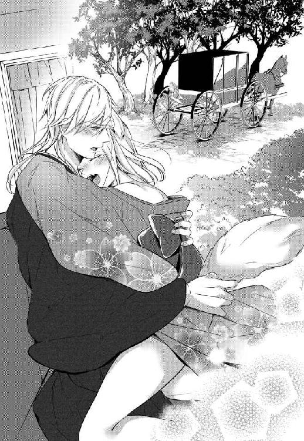
誰かが通りかかったら。兵士たちが様子を見に来てしまったら。
そんな緊張感がより興奮を煽って、未だ熱を灯した頭はアッサリと理性を放棄した。
甘い声に導かれるまま窓の縁に手をつければ、優しい手つきで一度尻尾が撫でられた。
それを除けるようにして押し当てられた屹立が、くちゅっと淫猥な水音を奏でる。焦らすように数度入り口を捏ねてから、それは再びしゆんの中へと潜りこんできた。
「ぁっ、あッ、っぁ......ッ」
先ほどとは逆にもどかしいほどゆっくりと押し込まれて、零れた吐息が窓を曇らせる。
──気持ちがいい。
背中が戦慄いて、つま先が浮く。
「っぁあ......すごいな、まとわりつく。俺を、全部覚えてよ。しゆん」
低く甘い声はまるで毒みたいだ。耳から入って、全身を熱くする。
気持ちのいいところを小刻みに擦られて、汗ばんだ掌が乳房を這う。
がっしりと腰を抱え込むようにして打ちつけられる肉の音。
どちらのものともわからない荒い吐息と、濃い性のにおいで溢れた馬車の中。アッという間に目の前の窓は真っ白に染まった。
「ロジェ、ロジェ......っ」
「っ......しゆん。好きだよ、好きだ」
「だめ、あッ、っや、ん──......ッ」
追いつめられていた身体は、そんな言葉一つで簡単に弾けた。
助けを求めるかのように手をついたガラスが、キュッと湿った音を立てる。休む間もなく、深い溜め息をついた彼に奥を穿たれて、吐息で曇ったガラスから手が滑り落ちた。
「ごめん、もう少しだけ付き合って。俺も......、もう出す......っ」
「ッは......、んっ、ぁ......ぁあ、っ」
切羽詰まった苦しげな息遣い。先ほどまでとはまるで違う容赦のない抽迭は、しゆんを高めるためのものではなく、自身の快楽だけを求めたものだ。
絶頂の余韻に震える膣内でずるずると陰茎を扱かれて、ただ咽び泣きのような声を漏らすしかできない。
それでも、ロジェが自分の身体で快楽を得ている。そのことがただ純粋に嬉しかった。
「は、......くっ、ぅ......っ」
これ以上ないほど腰を押しつけた彼が、食いしばったような低い呻き声を漏らす。
ぐずぐずに蕩けた胎内に注がれる熱を悦ぶかのように膣の中が震えて、彼を締めつける。何度か緩慢な出し入れを繰り返して、彼は深いため息を吐きだした。
「しゆん」
「......ん」
ぐっと上半身を引き寄せられて、汗ばんだ肩に、首に、頰にと口づけが落とされる。最後に唇へと甘い口づけを落として、彼は上目遣いにこちらを見上げた。
「押し切っちゃって、ごめん。......怒ってる？」
──ずるい。
止めたって聞く気もなかったくせに。
ここまでしておいて、あれだけ善がっておいて、今更文句なんて言えるはずもないのに。
しおらしい顔で許しを乞うその顔を半眼で見つめて、せめてもの反撃とばかりにしゆんは、くすぐったがりの夫の腹へ尻尾を大きく振ってやった。
「ちょっ、くすぐったいって。やめ......っ」
慌てふためく彼の姿を見て溜飲を下げながら、危うく口にしてしまいそうになった言葉を呑み込む。
結局、ロジェのそんなあざといところもやっぱり嫌いにはなれない──なんてことは、悔しいから絶対に秘密だ。
＊＊＊
「殿下にお怪我はないと、そうお聞きしておりましたが」
翌日。日も高くなる前に辿り着いた、はちみつ色の城。まるで、王城をぎゅっと小さくしたかのような愛らしい城を前に、出迎えへとやってきたその人はこちらを見下ろして大きく眉をひそめた。
威圧感を感じるほどに、大きな身体。一つにまとめられた黒髪の下にある、意思の強そうなきりりとした顔。
「あぁ、うん。これは怪我じゃないから、大丈夫」
困ったように首をさすった夫の横で、しゆんは羞恥からちんまりと身を縮めた。
ロジェの首に残った深い嚙み痕。今朝になって初めて気がついたそれが、いったいいつ誰がつけたものかなんてことは、しゆんが一番よく知っている。
「しかし、思いきり嚙まれて」
「これはいいんだ。俺の責任だし、痛みがあるわけでもないから問題はない」
訝しげな彼の声をきっぱりと遮って、ロジェがしゆんの身体を引き寄せる。
「改めて紹介するよ、しゆん。彼は、家令を任せているツェザーリ・マイヤーだ」
まぁ、知っていると思うけど。
続けられた声に一つ頷きを返して、見上げた先。わずかに細められた目はロジェと同じ青色なのに、ひどく冷たく感じるのは気のせいではない。
昔からロジェの傍にいた男だ。もちろん彼のことは知っている。決して好意的とはいえない目を自分たちに向けてくる人物。けれどその理由もまたロジェから聞いて、ある程度理解はしている。
「久しいな、ツェザーリ」
「えぇ、お久しぶりです。この城で貴女にお会いすることになるとは、思っておりませんでした」
過分な棘を孕んだ口調。
誰より早く反応を返したのは、しゆんの後ろに控えていた、ちやだった。
「僭越ながら、主君の伴侶に対する物言いを考えたほうがよろしいのでは？ マイヤーさま」
女性にしては低いその声は、なかなかによく通る。
「おやめ、ちや」
──本当に、相変わらずだな。
静かに睨み合っている二人を前にそんなことを思えば、自然とため息が零れる。
昔からそうだった。自身も郷の名家に生まれたちやは、幼い頃人間の賊に家族を殺されている。同じような境遇にあって獣人を嫌っているツェザーリとは、犬猿の仲だ。第二王子ほど身分が離れているわけでもなく立場が近しかったからか、元々気の強い侍女は彼に対して容赦がない。
顔を会わせるたびに嚙みつき合っていたこの二人のことを今更ながらに思い出して、頭が痛くなる。
ロジェとりんが結婚すると決まってからは、極力ロジェに会うことを避けてきたからすっかり忘れていたが、これからはそうもいかない。
「ツェザーリ。これから世話になる。同胞ともども、よろしく頼む」
「......こちらこそ、よろしくお願いいたします」
「しゆんもまた、もうおまえの仕えるべき主だ。ツェザーリ。そこのところをよく考えろ」
硬い表情で頭を下げた彼に、そうつけ加えたロジェの声は鋭い。
あれだけ自分たちに優しいロジェが、結婚後も獣人嫌いの彼を家令として置き続けることを決めた理由が、彼の能力的な部分だけでないことはなんとなく察せられる。
おそらく、乗り越えなければいけないと考えているのだろう。こちら側も、そしてツェザーリ自身も。お互いに好意的で優しい者たちだけを傍に置いて暮らしていくのは楽だが、それでは結局何も変わっていかないと、たぶんロジェはわかっている。
決してただ甘いだけではない夫のそんなところはとても好ましいし、しゆんもできる限り応えていきたいとは思う。
とはいえ。
──まぁ、頭が痛いのは事実だな。
一歩引きながらも、互いに刺すような殺伐とした雰囲気を隠そうともしていない。そんな二人を眺めて、しゆんはもう一度大きなため息を零した。
慣れた王城以上に、華美な装飾の少ない城。それでも、細部まで丁寧に磨き上げられ、手入れされた城内は温かみに溢れていて、とてもロジェらしい。一階から、一つ一つの場所を丁寧に案内してくれた家令は、最後に三階の一室。滑らかな乳白色の扉の前で足を止め、こちらを振り返った。
濃い紺色の袖がわずかに揺れて、冷ややかな青の瞳がこちらを見下ろす。
元々威圧感のある男だが、こうして濃い色の着物をまとえばいっそうそれが増す気がした。
ロジェの兄たちが爬虫類っぽい感じなら、彼は少し鷲に似ている。いずれにしても、目の前に立てば落ち着かない気分になるのは確かだ。
「そしてここが、ご夫婦の寝室です。これでおおかたの場所はご案内したかと思いますが、他に行きたい場所などございますか」
「いいや。丁寧にありがとう。城内の皆が着物を着ているのは、ロジェが指示を？」
「いいえ。ただ、主が決めたことなら、と皆が自主的に合わせただけのことです」
「......そうか。皆に愛されているのだな」
この城の雰囲気を見てもわかる。ここに、郷の城のようなぴりりと張りつめた空気はない。昨日までいた王城の厳かな雰囲気ともまた違う穏やかな空気が、この城には漂っている。
「そうですね。殿下は、とても慕われていると思いますよ。婚約者がいると知っていてなお、この城まで訪ねてくるご令嬢も後を絶たないくらいでしたし」
「マイヤーさま」
「おやめ、ちや」
堂々と最後につけ加えられた、嫌味たっぷりの一言。明らかな侮蔑を孕んだ眼差しに、再び食ってかかろうとする彼女を制して小さく息をつく。
城に漂う和やかな雰囲気。そこに時折混ざるとげとげしい視線には、しゆんだって気がついている。
ロジェは、本当に臣下たちに愛されているのだろう。
この結婚にまつわる経緯を、城の者たちが知らないはずがない。ただでさえ受け入れがたい獣人が、自分たちの愛する主君の名誉を汚した。彼らの怒りは至極もっともなものだ。この家令にしても、普段であればここまで好戦的なことを口にしてくる男ではなかった。それだけ腹に据えかねているのだろう。
「ツェザーリ。おまえに折入って頼みがある」
「頼み、ですか」
「あぁ。先に郷を発った同胞たちがここで過ごすようになって、もう一週間だ。おまえたちの間にも不満がたくさん出てくる頃だと思う。わらわへの批難も含めて、その辺を包み隠さず教えてほしい」
まっすぐに見上げた顔は、やはりロジェよりも遥かに高い位置にある。
一瞬驚いたように見開いた目を、彼はすぐにすっと細めた。
「何故、それを殿下ではなく私に？」
「おまえは、わらわや、獣人たちのことを厭うておる」
静かに落とした声に、彼が眉間の皺を濃くする。そうすると更に凄味を増す顔。わずかに肩をすくめて、しゆんはその顔をまっすぐに見上げた。
「すまない。批難しているわけではないんだ。ただ、ロジェは優しすぎるから。わらわが傷つくような話は、きっと上手くはぐらかしてしまう。それではいけないと思うんだ」
尋ねればきちんと答えをくれる人だと知っている。けれど一度話さないと決めたことは、頑なに伏せてしまう人だとも知っている。ロジェが本気で隠そうとするのなら、たぶんそれを暴くだけの力はしゆんにはない。舌も頭も、彼のほうがよっぽどよく回るのは確かだ。
「我らはおまえたちを裏切って、おまえたちの敬愛する主君を辱めた。批難は当然だし、そんな相手を受け入れがたく思う気持ちも当然だ。わらわはそれをきちんと知るべきだ。甘やかされて、守られて、ロジェ一人に全てを押しつけて──それではいけないと思う」
ジッとこちらを見下ろす青の瞳には、まるで変化がない。
彼の凍てつくほどに冷ややかな眼差しもまた、昔からだ。自分を嫌っている人の空気というのは、自然と悟れる。ロジェにその理由を聞く前から、ツェザーリが自分たちのことを嫌っていることには気がついていたが、不思議としゆんは彼が嫌いではなかった。下手に繕うことをしない態度が好ましいのもあるのだろうが、それ以上に彼が根の部分で深く主に忠義を誓っているのが、節々から見て取れるからかもしれない。
「おまえにしか頼めないんだ。わらわへの気遣いなどは必要ない。どうか、ありのままを教えてほしい」
そう簡単に頭など下げてはいけないと、何度も言い聞かされてきた。
けれど、そんなちっぽけなものにすがるよりも大切なものが、今はあまりにたくさんある。
だが、そう思ったしゆんが深く頭を下げようとしたところで、不意に刺すような鋭い声が降ってきた。
「おやめください。貴女様に頭を下げさせたなんてことが知れたら、私の首など即座にでも飛ばされてしまいます」
さすがにそんなことはないだろう。
そうは思ったものの、こちらを見下ろしたその目はとても真剣で。ゆっくりと目を瞬けば、彼は大仰なため息と共に大きく肩をすくめた。
「仰る通り、私は貴女方にいい感情を抱いてはおりませんし、正直なところ今でも殿下にはもっと然るべき人間のご令嬢と婚姻を結んでいただきたかったと思っております。ですから、柔らかな言い方にはできないかと思いますが......それでも私の口からお聞きになられますか」
そんなこと、あえて聞かれるまでもない。
自分にできることなど、たかがしれているとは最初から知っている。
能力的にも立場的にも、結局はロジェに頼るしかないことばかりだ。でも、だからこそ何も知らないままでいるのは違う。知っていてできないのと最初から知ろうとしないのは、似ているけれどまったく別ものだ。夫が精一杯向き合おうとしているものの現実を、自分もやはり知ってはいたい。
「もちろんだ。手数をかけてすまないが、包み隠さず、おまえの知る全てを教えてほしい」
鋭いその目をひたすらまっすぐに見つめて、返した言葉。
緩慢な動きで一つ頷きを返して、彼は今の状況を語ってくれた。胸を抉るような誹謗中傷に、後ろでちやが身じろぐ気配がしてもなお、しゆんは黙ってそれを聞き続けた。
五、雨・湯浴み、のち葡萄
「はぁ......」
こちらの城へ移ってからおよそひと月。溜まりに溜まった仕事の山をどうにか片づけて、ようやく取れた休みらしい休み。だというのに、ロジェが目覚めた時には既に隣に妻の姿はなく。せっかくの休日に一人ぽつんと寝台に取り残される羽目になったロジェは今、愛する妻の姿を求めて朝特有の清々しさと忙しなさに満ちた城内を彷徨っていた。
勝手知ったる自らの城の中。キョロキョロとあちこちを見回しながら歩いていると、ちょうどこちら側へと歩いてくる一人の男に目が留まった。常に暗い配色の着物と羽織を選ぶ彼は、背の高さも相まって闇に溶ける鳥のように見える。
「おはよう。ツェザーリ、いいところにきた。しゆんがどこに行ったか知らないかな」
「おはようございます、殿下。しゆんさまでしたら、先ほど料理長とお話されておりましたが」
「料理長？」
「えぇ。たぶん、今日の食事のメニューについて相談をしていたのかと」
「食事のメニューについて？」
オウム返しに質問をくり返すだけなんてばかみたいだが、こればかりは仕方がない。
どうして自分の妻である彼女が、こんな早朝からそんなことをしているのか、皆目見当もつかない。
思わず眉をひそめて首を傾げれば、彼も驚いたように首を傾げて返してきた。
「ご存知ありませんでしたか。しゆんさまは、ここへこられてから毎日料理長と話をされているようですよ。食文化の違いでお互いが不快な思いをしないようにということだと思いますが」
「......知らなかった。言われてみれば、生肉なんかは出なくなったね」
「えぇ。あれは給仕も料理人たちも嫌がっていると聞いて、軽く炙った牛肉などで代替えするようにしたようです」
そうだ。言われてみれば確かに、牛肉や羊の肉のローストなどはよく食卓に上がる。
けれど、彼女たちの郷でもてなしを受けた時に目にした、兎の生肉なんかは見ることがなかった。幼い頃から彼女たちに親しんできたロジェでさえ受け入れられなかった、内臓系の料理や謎のきのこ類はことさらだ。代わりに、夕餉の席にはよく見目好い山菜料理の類いが並ぶようになった。
「そうか......しゆんのことだから、他にもあれこれしているんだろうね」
彼女が動くたびに揺れるふかふかの尻尾を思い出せば、自然と頰が緩む。
ここ最近はこちらも忙しすぎて気がつかなかったけれど、思い起こしてみれば彼女は夜も時間さえあればせっせと何か調べものをしていた。
真面目で、働きもので、根がまっすぐで──彼女のそういうところはちっとも変わらない。
「えぇ、そのようですね。忙しなく立ち回っておられますから、もう料理長のもとにはいらっしゃらないかもしれません」
「そうだね。次に行くとしたら、どこだろう」
「どうでしょう。針子たちのもとで何か習っているようですから、そちらかもしれません」
「それはまた......ありがとう。探してみるよ」
──なるほど、それでよく指先を怪我しているわけだ？
心中で呟いて、笑いがこみ上げる。
本人が隠したがっているのはわかっていたから黙っていたが、そういう理由だとは思わなかった。
あの不器用な彼女がちまちま何かを繕っている姿を想像するだけで、なんだか胸が温かくなる。
「えぇ、何かございましたら、私はいつもの場所におりますので」
それだけ言って身を翻した彼の後ろ姿を眺めて、ロジェは小さく肩をすくめた。
『しゆんさま』
長いつき合いであっても決して呼ばなかった名を、ツェザーリがようやく口にした。それはきっと彼女が正式に自分の伴侶となったから、ということだけでもないだろう。
彼女は彼女なりに、ここで自分ができることを考えて、頑張っているらしい。
くるくるとよく動く最愛の妻の顔を思い浮かべてたまらず口元を緩めながら、ロジェは中庭の一画に建てられた、針子たちの作業小屋へとのんびり足を向けた。
＊＊＊
「っ......！」
「大丈夫でございますか、しゆんさま」
「大丈夫だ。何度もすまない」
これでいったい何度目だろう。一月の間に、もう数百回は刺しているに違いない。
毎度心配をしなくてはいけない針子たちがいっそ哀れで、申しわけないくらいだ。
「本当に、無理を言ってすまないな」
元々の目がこういう細やかな作業をするのに向いていないのもある。
だが、それ以上に手元の不器用さが仇だ。これはもう生来のもので、頑張っても治りようがないらしい。このひと月、自分なりに真面目に取り組んできたつもりだが、改善の兆しはまったく見られない。
シュンと身を縮めたしゆんを前に、繕いものの手を止めてこちらを覗き込んでいた年配の女性が、ふわりと笑った。ふくふくとした頰をそうして緩めていると、彼女は本当に温かな雰囲気になる。
「いいえ。ですから、お気になさらず。しゆんさまが、殿下のためにされていることですもの。いくらでもお手伝いいたしますわ」
それは誰に同意を求めた言葉でもなかったのに、うしろで作業をしていた針子たちまでも彼女に続いて、恥ずかしいやら居たたまれないやらで、しゆんはよけいに身を縮めることになった。
──本当に、ロジェはよく慕われているな。
この城へやってきてから、節々でそれが伝わってきて心が温まる。まだまだ皆と打ち解けているとは言いがたいし、課題も山積みだ。自分たちを心底嫌っている人間もたくさんいると知っているし、辛辣な言葉を耳にすることもある。
それでも、自分の愛する人を好いてくれている人々に、いつか彼の伴侶として認められたい。同じように人間を嫌っている同胞たちにも、彼を伴侶として認めてほしい。
そんな思いは、しゆんの中でも日に日に強くなっていた。
「......あ、しゆんさま。ここの部分、ちょっと図案とズレていますね」
「ここの部分......？」
たとえば、こんな時に涙ぐみにそうになることはあっても。
気まずそうに彼女が指差した部分。正方形の白地の輪郭をなぞるように、半分ほどまで進めた糸を眺めて、思わずじわりと目が潤む。たぶん、彼女たちにすれば数時間でできるようなところ。けれど、しゆんがここまでくるまでには最低でも一週間はかかったはずだ。
「ここはですね、実はチェーンで......えっと」
「あぁ、良い。わらわのほうが近い」
「あ、でも」
狭い小屋の中。彼女が見せてくれようとしている見本がどこにあるのかは、しゆんももうわかっている。
時間を割いて教えてもらっているのはこちらのほうだ。口うるさい同胞の護衛だって小屋の外なのだからせめてこれくらいはと、立ち上がろうとする彼女を制して棚のほうへと足を向ける。
開け放たれた扉の横にある棚の上段へと手を伸ばして、はたと手が届かないことに気がついた。一瞬のことだから、と背伸びをしてみても目的のものまで届かない。
こうなるとなんだか悔しいもので、眉間に皺を寄せながらも限界までつま先を突っ張る。
「しゆんさま。危ないですし、私が......」
くすりとした笑いを孕んだその声は、最後まで続かなかった。
「あ......」
ハッと誰かが息を呑む気配がして。そちらへと目を向けようとしたところで、突然ふわりと包み込むようにして身体が引き寄せられた。
「これ？」
楽しげな声が耳の鼓膜を震わせる。ひょい、としゆんの指の先にあった茶色い箱を取り上げた手。
それが誰のものであるかは、振り返るまでもなくわかっていた。
「どうぞ」
「......ありがとう」
手のうちに落とされた箱を見つめて、なんだかむず痒い気持ちで尻尾を振る。
──出会った頃は、同じくらいの背丈だったのに。
今は頭一つ分よりも高い位置にある顔。自分の手とは全然違う、肉厚でたこだらけの大きな手。
背中越しに感じる体温が否応なしに連夜くり返される行為を思い出させて、落ちつかない気分になる。
「おまえ、どうして」
なんでこんな時間に、こんな場所にいるのか。
皆まで言うまでもなく彼の腕がそのまま首へと巻きついてきて、よけいにしゆんを慌てさせた。
「ロジェ、ちょっ......」
「何を作ってるの？」
「ちょっと繕いものを教えてもらっていただけで......、というかその前に腕を」
「そっか。何時までやる？」
人前でこんなこと。
そう思うのに、しゆんの肩へと顔を載せてきたその人は、まったく悪びれるふうでもない。
皆の視線などまったく感じていないかのように、彼は淡々と言葉を紡ぐ。
「......今日は特に決めていない」
こういう時のロジェは、言ってもきかない。
諦めて肩の力を抜けば、抱きしめる腕の力が少しだけ強くなった。
「じゃあさ、今日は俺の傍にいてよ。いろいろと頑張ってくれているのは嬉しいんだけど、休みの日ぐらいは一緒に過ごしたいんだ」
「え......？」
「いいよね？」
──休み？
甘えた響きの声と告げられた内容に一瞬反応が遅れて、気がついた時にはぐいと腕を摑まれていた。ちらりと見上げたその顔はにこやかに笑っているのに、どこか有無を言わせぬ含みがある。
「申しわけないけど、しゆんは借りていくから。いつもありがとう。不器用だからさ、迷惑かけるかもしれないけど、彼女のことよろしく頼むよ」
「不器用って......」
「えぇ、もちろんですわ。それに、だいぶ慣れましたから大丈夫です」
「え」
さらりと言われた台詞に、皆までさりげなく肯定を入れてくるのが、事実だとしても悲しい。
「ははっ。ほら、おいで、しゆん。たまには二人でのんびりしよう」
皆が生温かい視線を投げかけてくる中、慌てて棚の適当な部分へと戻した手のうちの箱。
『おいで』なんて言いながらも、既に歩き始めている夫に引きずられるようにして、しゆんは開いた扉の外へと足を踏み出した。
短い廊下を抜けるとすぐに、中庭が目に入る。
「あ」
「あぁー......」
一気に秋めいた中庭へと目を向けて、思わず上げた声は二つ重なった。
「すっかり土砂降りだね」
ロジェの言葉通り、ここへ向かう時は厚い雲に覆われていただけだった空は今や、大きな雨粒を地面に叩きつけている。
綺麗に色づいた紅葉を叩き落とさんばかりの勢いで降る雨。まだ昼前だというのに真っ暗な空を見る限り、きっと今日は一日中こんな感じだろう。ここへ来てからひと月。日中はほとんど一緒にいることのできなかった夫がようやく隣にいるというのに、なんだかついていない。
恐らくは、この数分で一気に降ってきてしまったのだろう。彼について来たらしい護衛たちの手にも、傘らしきものは握られていない。雨の多いこの国ではよくある事態に、護衛たちの反応もまた早かった。
「殿下、今傘をお持ちします」
「あぁ......いや、ちょっと待って。いいこと考えた」
「え？」
いいこと？
にやりと笑うロジェの顔に、しゆんが首を傾げたのはたぶん護衛の兵士と同時だった。
とたん、つんと引かれた腕。
「は......っ」
何事だろうと思った時にはもう、大量の雨粒が全身を濡らしていて。
──一瞬、何が起こったのか本当にわからなかった。
「ほら、頑張って走って」
「はぁっ!? えっ、ちょっ......！」
止める間もなく走りだした彼の腕に引かれるまま、慌ててしゆんも足を踏みだす。
容赦なく降りかかる雨によって、視界がぼやける。水を吸った着物が鉛のように重く足にまとわりついて、ぬかるんだ地面を踏む足が何度も滑りそうになる。
歩いたとしてもたいして時間のかからない距離。
だというのに、中庭と城内を繫ぐ渡り廊下へと辿りついた時には、すっかり息が上がって身体中がずぶ濡れになっていた。
「っはぁ......このばか！ こんなに着物を濡らしてしまったら、後が大変だろう！」
ぶるると身体を震わせて、掌で顔を拭う。それでも、ぽたぽたと髪の毛から滴り落ちてくる雨粒。
同じように顔を拭いながらも、彼は楽しそうに目を細めて笑っていた。
「はははっ、たぶんツェザーリに怒られるね。侍女たちにも謝らないと」
「怒られるね、じゃない。だいたい、なんのためにこんなこと！」
「たまにはさ、ばかなことするのもいいかと思って。ずっと背筋を正して生きていたら疲れちゃうから。まぁ、俺たちに求められているのはそういうことなんだけど」
何かをとっさに言い返そうとして、結局何も言えなかった。
そんなことを口にしてのんびりと笑うロジェが、呆れるほどにいつも通りで、心底楽しそうで。
陰鬱な天気に思わず落胆してしまった──そんなしゆんの気分を変えようとしてくれたのは明白で。
「......後さ、たまには思い出さないといけないと思って」
「思い出す？」
慌てたように自分たちを追いかけて走ってくる護衛たちへちらりと目をやって、濡れた髪を搔き上げた手。浮き出た血管の上を伝う水滴がなんだか、ひどく艶めかしく目に映る。
「うん。俺たちのためにさ、こんな雨の中へでもためらいなく出て行ってくれる人たちがいるってこと。どんな思いでそれをしてくれるのか、そういう時に俺たちはどうしたらいいのか、実際やってみないと忘れちゃうから」
しゆんにしか聞こえないような、低く落とした声。
「それに、彼らにも普段と違う日常は必要だ。こんな天気の日には、主人夫婦から謝られるなんてのもきっと面白いよ」
はたと見つめたその人は悪戯っぽい目配せを一つして、妻の手を引いた。
「お湯を沸かしてもらって、一緒に入ろう。そうしたら、その間に彼らは温かい飲み物でも飲んで休める」
──もしかして、最初からそのつもりだったのだろうか。
ちらりと脳裏をよぎったけれどそれは、口にはせずに呑み込んだ。
ずるいとは思うし、怒りを通り越していろいろと呆れてもくる。けれどそんな部分も含めて、やっぱりこの人が好きだと改めて思うのだから、もう仕方がない。
ずぶ濡れの自分たちを見て、驚いたように駆けてくるツェザーリとちやの姿に目を留めながら、しゆんはふと口元を緩めた。
なにがなんでも守りたい。そう思えるほどに、今この時が幸せだと思う。
受け入れた、とはいえ恥ずかしいものは恥ずかしい。
「しーゆん」
ちゃぷんと揺れる水の音。からかうような声と共に伸びてきた腕が首に絡みついて。うなじに押し当てられた柔らかな感触に、ぴくんと小さく身体が跳ねる。
年間の降水量が多いウォルズでは、湯を使って身を清めることはそう珍しいことではない。それでも人間たちが一般的に行っているのは、焼いた石に水を注いで湯気をたてる蒸気浴であって、湯釜などは用いないのが常だ。
浴槽いっぱいに湯を張って入る。そんな郷での慣習を守るために、わざわざ後から備えつけられた湯釜。いつもはしゆんのほうが先に湯を使うから、ここにこうして二人で入るのは初めてだ。
お互いの裸なんて、毎晩のように目にしている。なのに、場所が変わるだけでひどく恥ずかしく思えるのだから不思議だ。
「恥ずかしいの？ こっち向いてくれないと、悪戯しちゃうよ？」
くすりと笑う吐息が顎の辺りをくすぐって、湿った舌先が首筋をつっとなぞる。
「っ......まだ、お昼にもなっていないのに、こんな......っ」
慌てて後ろを見やれば、そのまま顎を掬われて口づけられた。
「っは......ん、ぅ」
強引に舌を吸い上げられて、思うままに口内をかき混ぜられて、漏れる吐息に甘さが混じる。
厚い掌が胸の上を這って、感触を楽しむかのようにぐにぐにと捏ねていく。
悪戯どころか、明確な欲を孕んだ舌の動き。抗議の意を込めてぐっと肘で彼の胸を押せば意外と素直に彼は唇を離してくれた。
離れた唇の間につと唾液が零れる。離れたばかりの唇が今度はそのまま首の裏側へと降ってきて、再び上げた声はその場によく響いた。
「っ......ロジェ！ だから、まだ夜でもないのに、こんな場所で」
湯船に浸かるために纏め上げた髪。剝き出しになったうなじから、背中の輪郭をつっと舌がなぞっていく。尖り始めた乳頭を指先で転がされて、途切れ途切れに零した抗議の声がひどくかすれる。
「休みの日に主人夫婦が仲睦まじくしていても、誰にも迷惑はかからないよ」
「っぁ......、っや、そいうことじゃ......っ」
くすりと笑う気配と共に今度は、背中からうなじへと唇が戻ってくる。ぱくりと首のつけ根を食まれて身体が跳ねる。それを見た彼は、いっそう楽しげに首へと嚙みついてきた。じゃれつくように唇を押し当てて、においを擦りつけて。慣れたいつもの甘嚙みに、ただでさえお湯で温まった身体がよけいに熱くなる。
「だめ？ しゆんはすぐ灯りを消したがるから、今日は明るいところでしたいんだ。君は暗くても見えるかもしれないけど、俺はよく見えないし。たまにはちゃんと見たい」
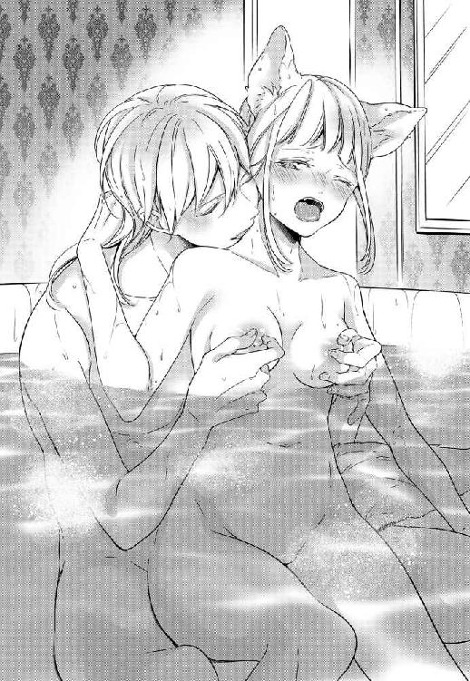
「やぁっ、ぁっ、ちょっと待って......ッ、ぁ、んっ」
だめ、なんて言っても絶対に聞かないくせに。そんなことすら言わせまいとするかのように、ぐいぐいと尻尾のつけ根に押しつけていた屹立を、彼が秘処へと擦りつけてくる。ゆるゆると襞の間を前後する硬い感触。ひときわ太い先端部分が、ぬるぬるとした蜜を絡ませながら肉芽を小突くたび、期待と快楽に背中がわななく。
「は......いい眺め。気持ちいい？ ここ触ってもないのに、どんどん溢れてきてる」
「っや......ぁん、は、ぁ......っ」
からかうようなその声に呼応するかのように、ゆるりと水中で尻尾が揺れる。
執拗に首へと悪戯をしかけながら胸を弄る手。彼が腰を揺らすたび、ちゃぷちゃぷと浴槽内のお湯が揺れて、実際の抽迭を思わせるその動きに自然と甘い吐息が零れた。
お湯としゆん自身の愛液で滑りのよくなった秘処を往復する楔の先端が、時折入り口の辺りを刺激する。
気持ちがいい。でも、もどかしくて切ない。
「ロジェ、もう......」
すがるように後ろを振り向けば、うなじへと顔を埋めたままの彼が上目遣いにこちらを見上げて、面白そうにその目を細めた。
「このまま挿入っちゃいそうだよね。どうしようか」
そんなことを言いながら膣口へと先端を押しつけてくる彼は、本当に性格が悪い。
「っ......おまえのそういうところは嫌いだ」
精一杯むくれながら顔を睨みつければ、ふっとロジェが口元を緩めた。
全てを見透かしたようなその笑みが、またちょっとだけ悔しい。
「俺はしゆんのそういう素直じゃないところも好きだけど」
じゃれつくようにしてもう一度うなじに口づけを落とし、上目遣いにこちらを見つめた目。
心底愉しそうなそれが、あまりに綺麗で一瞬はたと息を呑む。
「でも、そうだな。じゃあ、これ以上嫌われないように俺も頑張ろうかな」
「え......、んぅっ......！」
何を返す間もなく、くぷりと膣の入り口を屹立の先が押し広げる。ひときわ大きなその部分を飲み込んでしまえば、後はもう簡単だった。
「あっ、ぁ......っ」
お湯ではないもので、しとどに潤ったその中の感触を味わうかのように、ゆっくりと押し進められる楔。蕩けた柔肉を擦り上げるようにして奥へ奥へと進められていく感覚に、ゾクゾクと背筋が震える。
一番奥まで入ったことを確かめるように数度奥を捏ねた後、熱い吐息を零しながらロジェが再び腕を巻きつけてきた。
「ん......」
隙間なくみっちりと埋められた肉茎。ぎゅっと後ろから圧し掛かるようにして身体を抱きしめられて。まるで彼と一つに溶け合ってしまったかのような、心地の良い安堵感で胸がいっぱいになる。
「しゆん」
振り向きざまに、頰へと押し当てられた唇。柔らかな感触につられるようにして、ぐっと首を回せば、優しい口づけが降ってきた。
うなじへ、肩へ、背中へと汗ばむ肌へ順に唇を落としながら、ゆるゆると彼が腰を揺する。そのたびに周りの水が揺れて、小気味のよい水音が耳を打つ。
「は......だいぶ馴染んだね、しゆんの中。ぴったり重なって、すごく気持ちいい」
「ぁッ、あっ、......ッや、ロジェ......っ、っん」
どこか嬉しそうな、甘い声が耳を打って、腰に回されていた手が、そのまま水中の太腿を伝って深く繫がった部分の上にある陰核へと触れる。不意にもたらされた刺激に呼応するように、自分の中が彼を締めつけるのがしゆんにもよくわかった。
「やっ、あ、あっ......だめ、気持ちいい......、ッあぁ」
「気持ちいい？ 俺ね、しゆんのこういう時の声大好きなんだ。我慢しないで、もっと聞かせてよ」
波に制限されている分、いつもよりも緩やかな動き。
そのもどかしさを塗りつぶすかのように乳首を摘ままれ、蕾を弄られて、たまらず零した声が浴室内に響く。
「ん......可愛いな。もっと聞きたい。しゆんは、この辺が好きだよね」
「ロジェ、ぁっ、だめ、あぁ──......」
首筋から顔を上げて、彼がわずかに身体を離す。
先ほどまでよりも、浅くて速い抜き差し。自分ではよくわからない気持ちのいい部分を圧倒的な質量で小刻みに擦られて、もうなすがまま。嵐に揺られる小舟のように翻弄されて、一気に絶頂まで押し上げられた。
「っは、っ」
ビクビクと腰を震わせて達したしゆんを前に、低く喉を鳴らしたロジェが束の間動きを止める。
立ち上る湯気と、激しい行為のおかげですっかり上気した身体から、どちらのものかもわからない汗が入り混じり肌を伝って。先ほどの余韻に揺れる水の中、未だ熱を残す陰茎がずるりと中から引き抜かれた。
「んぅ......っ」
「こっち向いて、しゆん」
まだ頭がふわふわしていて何も考えられない。囁かれるがままに彼のほうを振り返れば、腕を取られて彼の首へと巻きつけさせられた。
「俺に、摑まっていて」
「え......、っきゃ」
どういうことだろう。しゆんがその意味を問い返すより早く、ぐっと持ち上げられた片足。不安定なその体勢に、思わずすがるものを求めて腕に力が籠る。肩へと額を押しつけて大きく息を吐けば、あられもなく開かれた足の間に、ぬるりと湿った熱い感触が触れた。
「はっ、ぁ──......っ」
硬く張りつめたものが、その存在を主張するかのように、自分の中に埋まっていくのが見える。最奥をぐっと押し上げる感覚に、深いため息を零したのは二人同時だった。
浴室内に灯された灯りの下、汗を滲ませた彼の肌がやけに艶めかしく目に映る。
ゆるりゆるりと感触を確かめるかのように出し入れをしながら、徐々に速められる抽迭。奥深くを押し上げては、半分ほど引いて。先ほどまでよりもいっそう激しい律動に、ばしゃばしゃとお湯が飛び跳ねて身体が揺れる。
「んんっ、あっ......ッ、ロジェっ、ロジェ......っ」
気持ちがいい。
苦しい。熱い。
好き。
この人が好き。
熱の回った頭に、ただとりとめもない思いだけが溢れる。
首筋に鼻を擦りつけて、唇を押しつけて、食んで。ふわふわとした浮遊感の中。羞恥心も忘れて何度も繰り返したそんな行為に、それが妻からの最大限の愛情表現だと知っている夫は、柔らかな吐息を漏らした。
「しゆん、顔見せて」
甘くかすれた声が、耳を深く侵食する。
顔を上げると同時に、彼の湿気を含んだ髪や、上気した頰が視界をいっぱいに埋めて。どちらからともなく重ねた唇。こみ上げる感情のまま求めた舌に、奥を穿つ彼の動きもまた深くなった。
「っん、ふっ、あ、ぁっ......っふ」
激しい律動に揺れる身体のせいで、唇が離れそうになる。それでも、必死にしがみついて舌を絡めれば、息苦しいほどに強く口内を貪り返された。
水に揺られて、彼に揺さぶられて、上も下もいっぱいに埋めつくされて──これ以上ないほど満たされたその感覚に、一度達した身体がまた上りつめる。
「ん、ぁ、んんんんっ──......」
「っ......」
叫ぶ声が口の中へと消えて、わずかに離れた唇の隙間で、ロジェが苦しげな吐息を漏らす。
それと同時に、胎内の奥深くへと放たれた迸り。お腹の中を満たす温もりをぼんやりと感じながら、この瞬間が一番好きかもしれないなんてことを、ふと思った。
本当にこの人が自分の伴侶なのだと、自分が彼のものなのだと実感できて、いつも胸が熱くなる。
「しゆん」
深く優しい口づけを交わして、絶頂の余韻で震える膣内から名残惜しそうに、彼が陰茎を引き抜く。
「あー......すっかりお互い汗だくだ。いったん上がって、流そうか」
ざばっと豪快な音をたてて、彼が湯船から身を引き上げる。どうぞ、と差し出された手。今更ながらに少しだけ気恥ずかしい気持ちでその手を取って、とたんふにゃりと腰が砕けた。
「っと、大丈夫？ のぼせちゃったかな、ごめん」
「大丈夫、少し眩んだだけだか......ぁ」
慌てたように抱き抱えられて、口にしようとした言葉は最後までは紡げなかった。
どろりと足の間を伝った体液に、一拍遅れてみるみる頰が熱くなる。
「......あぁ」
訝しげにこちらを覗き込んで、それに気がついたのか。
しゆんの内腿へと視線を投げかけた彼が、愉しげに目を細める。
「俺の責任だし、全部洗ってあげるからしゆんは座っていて」
有無を言わさず座らされた小さな椅子。全部洗ってあげる、なんて。その行為がどれだけ恥ずかしいものなのかを、身を以ってしゆんが思い知らされたのはこの後のことだった。
時刻は一四時を少し回ったところ。だというのに、灯りをともさなければならないほど暗い空。相変わらず雨音が響く寝室の中にはそれでも、緩やかで穏やかな時間が流れている。
「はい」
「......ん」
結局、なんだかんだ押し切られる形で、足の先から頭までを全部洗われて。挙げ句さっきは丁寧にできなかったからなんて理由をつけて寝室でももう一度いただかれて。ぐったりと身を横たえた寝台の上。口元に運ばれた小さな匙を素直にぱくりと口に含めば、舌先に広がる葡萄の冷たさが、火照りを残した身体にとても心地が良かった。
寝具の上に突っ伏した格好でもぐもぐと葡萄を頰張っている。そんな妻の頭を撫でる手は、相変わらずどこまでも優しさに満ちている。
「ロジェ」
「うん？」
「おまえはわらわを甘やかしすぎていると思う」
本当に。
いくらあれだけ身を交えた後とはいえ、こんなだらしのない格好で物を食べるなんてことは、やはり許されない気がする。日中から寝台に横たわるような休日を過ごしたことも、誰かから物を食べさせてもらうなんてことも物心がついてからは初めてだ。
いくら言ってものらりくらりとかわされて、こんなことになってしまったけれど、なんだか思った以上に気持ちがいい。たぶん自分で考えていた以上に、身体は疲れていたのだろう。そしておそらくロジェは、妻のそんな様子にも気がついていた。
「そうかな。俺はもっと甘やかしたいし、甘えてほしいけどね。俺の奥さん、ほら、頑張りやだけど息抜きが下手だから」
はい、ともう一口匙を向けられて、再びそれを頰張る。こちらを見下ろす彼の表情は、やっぱりとても穏やかで、どこまでも優しい。
幸せだ、と。
つとそんなことを思って、胸がいっぱいになる。
こんなに幸せでいいのだろうかと不安になるほど、今の穏やかな時間が幸せで。同時に脳裏をよぎった人の姿に、ぎゅっと胸が苦しくなった。
「りんと栄助は、幸せにしているだろうか。何かに困ったりはしていないだろうか」
自分と同じように葡萄が好きだった妹。性格も、ものの好みもまるで違うのに、味覚だけはよく似ていた双子の妹。
毎夜のように思い出しては、ロジェの前で口にするのも無粋な気がして呑み込んできた──そんな言葉を前に、ロジェは笑ってくれた。
「大丈夫だよ」
ふんわりと柔らかく笑って、彼はもう一度同じ言葉をくり返した。
「大丈夫」
笑ってしまうぐらい、なんの根拠もない台詞。だというのに、ロジェが口にするだけで本当に大丈夫な気がしてくるから不思議だ。頰へと触れた手の上にそっと手を重ねれば、自然と目元が緩む。
「おまえは、知っていたのか？ りんが、栄助に気持ちを寄せているなんてこと」
「まぁね。少なくとも俺に気持ちがないことは、だいぶ昔から知っていた」
「そうか......わらわはまるで知らなかった。本気でおまえが好きなのだとずっと思っていた」
あれだけ一緒にいたのに、妹の何を見てきたのだろう。そう思うと、自分が情けない。
わずかに肩を落とした妻の姿にふっと小さく息を吐いて、彼は重なったままの手でむにと頰を摘まんできた。
「ちょっ」
「彼女が一番愛していたのは君だよ、しゆん」
「え？」
「似た者同士だったから、よくわかる。彼女は、あんなどうにもならない状況で、君に心配をかけたくなかったんだ」
「似た者同士って」
ロジェとりんが？
そんなこと思ったこともない。
驚いたように目を瞬けば、彼は再び楽しげな笑みを零した。
「ほら。しゆんに何もバレてない辺りの狡猾さとか、腹黒さとか、ホントそっくり。まぁ、だからこそ自分とは正反対の人に惹かれるんだろうけど」
何度思い起こしてみても、よくわからない。
彼の言う妹と、自分の知る妹がどうにも上手く重ならない。
唸るしゆんをなだめるように、大きな手が耳の後ろをくすぐる。
「いつか、また会えるよ」
唇の上で落とされたそんな優しい言葉に、ぐっとこみ上げたものを呑みこんで、しゆんはその柔らかな温もりを受けとめた。
＊＊＊
幸せな時間というのは、そう長く続くようなものではない。
二人でのんびりとむつみ合うだけの休日を過ごしたその日から、二週間後の朝。目を覚ました時には既に、いつも横にあるはずの夫の姿はそこにはなかった。
急な呼び出しでもあったのだろうかと首を傾げつつも、寝台を降りて一枚羽織り、扉のほうへと足を向ける。
普段自分たちが身支度を始める時刻には、まだ少し早い。
とはいえ何か緊急の事態だとしたら心配だ。とりあえず見張りの兵士に彼の所在だけは聞いておこうと、しゆんが扉を開いたところで不意に声が聞こえてきた。はたと手を止めて声のするほうへと目を向ければ、よく見知った二人が何やら話をしている。
怒っているのか。尻尾の毛を逆立てたちやと、その対面から苛立った様子で彼女を見下ろした長身の男。また喧嘩でもしているのかと眉をひそめたところで、つとツェザーリが顔を上げてばちりと視線がかち合った。
大きく目を見開いて、慌てたように彼がその目を逸らす。
「......とにかく、それはもう貴女にあげたものだ。いらなければ、捨ててくれ」
あからさまな苛立ちを滲ませた声を残し、ちやの返答を待たずして翻された身。去っていく彼の背中を茫然と見つめていると、こちらを振り返ったちやが気まずそうに肩をすくめた。
「おはようございます、しゆんさま。もしかして起こしてしまいましたか」
口調はいつもと変わらない、普段通りのちやだ。先ほどまで怒りをあらわにしていた、灰褐色の尻尾も今は落ち着いている。それでもどこか動揺しているように見えるのは、きっと手のうちにある〝貴女へあげたもの〟とやらのせいなのだろう。
彼女の手のうちに抱えられた花束へと目を留めて、ゆっくりと目を瞬く。
そんなしゆんの姿を見てか。こちらが何を言うより早く、彼女は不愉快極まりないといった様子で盛大に顔をしかめた。
「昨日いろいろとありまして......ただの謝罪の品です。それにしても、本当に失礼だと思いませんか。こんな食べられもしない上に、すぐ枯れてしまうものを謝罪に持ってくるだなんて」
『とんだ嫌がらせですわ』
そう吐き捨てて、眉間の皺を濃くした彼女の姿に、もう一度目を瞬く。
そういえばこんなこともあったなと、ふと蘇った懐しい記憶に笑いがこみ上げた。
『だから、おまえのこれはいったい何のつもりだ』
『ちょっ、待って。落ちつけ。何のつもりって、なに。どういうこと』
そもそもの感覚が違う。受け取り方が違う。生活習慣も食文化も何もかもが少しずつ違っていて、理解の及ばない部分がある。それなのに同じ言葉を話し、同じもののある国に生まれているものだから、その違いにすぐには気がつけない。
思い返せば本当に、そんな些細なことの積み重ねだった。
「そうだな。それでも花に罪はないし、ツェザーリがこのために時間を割いたのは事実だ。ちゃんと部屋に飾っておやり」
華美なものではない。白い秋桜などの素朴な花々でまとめられた花束はそれでも、においの強そうなものではない。わからないなりに最低限の気遣いだけは見せているツェザーリの精一杯の気持ちだけは、きちんと感じられて微笑ましい。
「しゆんさまが、そう仰るなら」
不服そうな顔で、腕の中の花束を見下ろした彼女を見つめて、そっと眦を下げる。
昨日二人の間で何があったのかは知らないし、詮索するつもりもよけいな口を出すつもりもない。けれど、少なくともツェザーリのほうからわずかに歩み寄りを見せた。それは、小さいようで本来とても大きなことだ。
「あ、そうでした。しゆんさま。マイヤーさまのことは、どうでもよくて」
──まぁ、どうでもよいとばっさり言い捨てられてしまう彼が歩むべき道はまだ、果てしなそうではあるが。
少しだけあの長身の男を哀れに思いつつも首を傾げれば、彼女はギュッと強く表情を引き締めた。
「ラナウの都が賊に襲撃されたということで、ロジェ殿下ももうじきその鎮圧に向かわれるそうです。しゆんさまも、お見送りに行かれますよね？」
賊の鎮圧に、ラナウの都へ。
言われたことを反芻して、ギュッと胸が苦しくなる。最初から彼がそういう立場にあることは知っていたのだから、驚きはない。でもだからといって、まったく怖くないわけでもない。それでも、問われたその質問への返答は最初から一つしかなかった。
決して動揺を見せないようにと、背を正して見つめた先。告げた言葉に、ちやは得心したかのような深い頷きを返して、こちらへと背を向けた。
＊＊＊
秋の早朝。しかも霧雨で覆われた空はとても薄暗く、辺りはかなり冷え込んでいる。連日の雨で、だいぶ葉が落ちて、寒々しい姿になってきた木々。ラナウから次に戻る時には、これも全て落ちているのかもしれないなんてことを、ロジェは何とはなしに考えていた。
「では、万が一お戻りになられない場合は、そのように」
「あぁ、俺の不在中のことは、よろしく頼む」
確認のための簡単なやり取り。ロジェが全てを言い終えると同時に、つと視線を上げたツェザーリがわずかに表情を強張らせた。
いったい何事だと視線の先を追えば、大きな赤い蛇の目傘が目に留まる。
揺れる傘の下、二つ並んだ尻尾。何かに気がついたかのように大きな尻尾がぴくりと動いて、琥珀色の瞳が傘の陰からこちらを見上げた。
凛とした立ち姿はいつもと変わりがない。それでも、彼女の身体はきっと彼女自身が思う以上に雄弁だ。細かな水滴をまとった尻尾が、普段よりもシュンと垂れさがっている。そんなことに気がついて、またこみ上げた愛しさに頰が緩んだ。
凛々しいだとか、雄々しいだとか。そう表現されるような雰囲気の男が獣人の女性には好まれるらしいことは知っているし、実のところそれを目指してみたことがないわけではない。けれど、こればかりはもう仕方がないと諦めた。彼女を前にすれば、どうしても自分の顔は自然と緩んでしまう。
「寝ていても良かったのに......って言っても、しゆんには無理か」
きっと、初めて目にする自分の出兵時の装い。
甲冑などはまだ身につけていない。とはいえ見慣れぬ重々しい装いは、否が応にも自分の夫がこれから向かう場所がどんな場所かを、彼女に知らしめてしまうのだろう。気丈に振る舞ってはいても、わずかに強張ったその頰へと手を触れれば、優しい温もりに心が和む。
「当たり前だ。寝ていられるわけがない」
「うん、そうだね。ありがとう、見送りに来てくれて」
琥珀色の瞳が小さく揺れて、彼女が顎を引く。
「......おまえに、これを渡そうと思って」
「うん？」
──これ？
もぞもぞと袂を漁って、しゆんがそっと差し出してきたもの。
細かな刺繡の施された真っ白なハンカチ見下ろして、ロジェは思わず大きく目を瞠った。
「俺に？ しゆんが作ってくれたの？」
「あぁ......侍女たちが話をしているのをたまたま聞いて、針子たちに教えてもらった。上手くはないが、持って行ってほしい」
上手くはない。その通りだと思う。
あちこち引き攣れてもいるし、少しダマになっている部分もある。色を間違えたのかなと思う部分もあれば、全体のバランスもなんだかちょっと歪だ。
それでも。
「ありがとう。本当に、嬉しい」
嚙みしめるように吐き出した言葉は、紛れもない本音だった。
彼女の目が、自分たちよりも手元の細かな作業に向かないことを、ロジェはよく知っている。どうやら、自分たちほど細かく色を見わけられないらしいことも。そもそもの手先が不器用なことも。
そんな彼女が、針子たちに習いながら毎日せっせと作ってくれたもの。
この刺繡の施された白いハンカチはこの国において、戦地に発つ夫へ妻が持たせるものだ。元は、万が一のことがあった時に遺体の身元を判別したり、遺品として持ち帰るためのものだった。それが転じて、今ではお守りのようなものとして渡されることが多い。
真っ白なこの布が血で染まることがありませんように。
曲がりなりにも上に立つ者として、この一枚の布に込められた想いは、痛いほどによく知っている。
針子たちに頭を下げてまで不得意な裁縫を習って、これを持たせてくれようとした彼女の気持ちも。
「今回は賊の鎮圧だ。そんなに長くはかからない。王城へ向かう前には必ず戻ってくる。それまで、俺がいないからって無理しないんだよ？」
「......ん。おまえも......」
ちやが差してくれている傘の下。たぶん、いつも通りに振舞おうとして失敗した──そんな心配性の妻へと一度だけ口づけを落として、わしわしと撫でた頭。『人前なのに』と怒るかと思いきや、珍しく自ら腕を伸ばしてロジェの胸に顔を埋めてきた彼女の小さな身体をそっと抱き返して。ロジェは最後にもう一つだけ言葉を重ねた。
「絶対に戻るからいい子にして待っていてよ、しゆん」
六、二つの嚙み痕
すっかり冬支度を始めた枝ばかりの木々。吐く息が白く染まるほどに冷えた空気の中、なんとなし身を持て余してしゆんは中庭へと足を運んでいた。
「今日は、冷えるな」
ふっと息を吐きかけて、こすり合わせた指先。
そんな自分をちらりと見上げて、ちやがためらいがちに口を開く。
「きっと、今日中には戻られますよ」
彼女が言わんとしていることは、あえて聞くまでもなくわかっている。
朝からのしゆんの様子に思うところがあったのだろう。心優しい侍女に心配をかけてしまったことに肩をすくめながらも、彼女らしい気遣いに素直に口元が緩む。
「そうだな」
そうだといいな。
続く言葉は、最後までは口にしなかった。
ロジェがラナウへと発って早ひと月。明後日にはもう、スティアの王族の訪問に向けて自分たちもここを発たなければならない。彼が引き連れていった見知りの兵士たちは、一週間ほど前にほぼ帰ってきた。怪我をしている者はもちろんいたが、幸いなことに死者などは出ず、彼自身も無事だと聞いている。
聞いている。そう、事後処理があるからとラナウの都へ残った彼からは、一切の連絡がない。賊を鎮圧したとはいえ、荒れた町の治安は決してよくないはずだ。無事にしているのか。何か困ったことになっているのではないか。
まるで情報がないだけに、考え出せばどんどん深みにはまって止まらなくなってしまう。
「きゃっ」
なんだかぼんやりとした気持ちで庭園を散策していると、不意にすぐ近くから短い悲鳴が聞こえてきた。
反射的に巡らせた視線の先に、地べたへと腰を落とした侍女の姿が映る。一見してすぐに状況はのみ込めた。近道をしようとして、出張った木の根に引っかかったのだろう。もしかしたら挫いてしまっているのかもしれない。
以前もここで転んで怪我をした侍女がいたはずだ。
こうも続くのであれば何か考えなければならない。そんなことを思いながらも、彼女のほうへと足を向ける。
「大丈夫か」
足首を押さえて顔をしかめている彼女へと手を差し出して。
「っ、触らないで！」
視線が絡んだのは一瞬。小気味の良い音が響いて、手を払われたのだと気がついたのは、叩かれた部分が熱を持ち始めてからのことだった。
自分が手を振り払った相手が誰なのかに、彼女も気がついたのだろう。怯えたように顔を引きつらせた彼女はそれでも、何かに耐えるかのようにギュッと唇を固く結んだ。
「貴女、なんてことを」
「おやめ、ちや」
こういう反応が何を意味するのかは、もう嫌というほどわかっている。そして、それは責められるべきことではない。
「すまなかった。今人間の兵士を呼んでくるから、ここで待っていてくれ」
しゆんについてくれている護衛にもたまに人間の兵士が混ざることがあるが、あいにく今日は同胞たちしかいない。獣人の男に抱え上げられるのはもっと嫌だろう。驚いたように見開かれる目を皆まで見るまでもなく翻そうとした身は、危うく人にぶつかりそうになった。
身長に見合うだけの逞しい身体。一つに束ねられた黒髪に、三白眼の中にある青の瞳。相変わらず黒に黒を重ねたような地味な装いが、独特の雰囲気を醸し出している男。
「あぁ、挫いたのですか」
「ツェザーリ」
──おかしい。
今の彼女といい、ツェザーリといい、何故先に気がつけなかったのだろう。いつもならだいぶ離れたところからでも拾える気配が、今日はまったく拾えなかった。極度の緊張状態にあるわけでもなければ、雨が降っているわけでもないというのに。
「かまいませんよ。私が医務室まで連れていきましょう」
「そんな、滅相もない......！ マイヤーさまにそんなことをしてもらうわけには」
「かまいません。貴女には、少しだけ話したいこともありますし」
「えっ、あっ？」
慌てふためく侍女を遠慮もなく抱え上げてしまう辺りは、いつものツェザーリだ。女心なんてものにはめっきり疎い彼はそれでも、端正な容姿と普段の仕事ぶりから城内では密かに人気がある。おずおずと首にしがみついた彼女もまた、例に漏れずサッと頰を赤らめて俯いてしまった。
「しゆんさま。戻り次第、貴女さまにもお話があります。少々面倒なことになりま、して」
淡々と言葉を紡ぎながら、こちらを仰ぎ見た彼の目が一瞬大きく揺れる。途切れた言葉に滲んだ動揺に、しゆんは内心盛大なため息を漏らした。
「とにかく、すぐに戻ります。ここは冷えますから、お部屋でお待ちください」
見た目以上に動揺しているのだろうか。こちらの返答を待たずして、足早に遠ざかっていく背中。大きなその背からそろりと、自らの後ろに立つ侍女へと視線を移して、しゆんは小さく肩をすくめた。
「ツェザーリも、他意はないと思うぞ？」
少し離れたところにいる護衛たちには届かないくらいまで抑えた声。ゆるりとこちらを向いたちやの目は凍てつくほどに冷ややかだった。
「何を仰られているかわかりかねます、しゆんさま。マイヤーさまが、怪我した侍女を連れていかれたところで、当然のことと思いますし」
「積もるお話があるようですから、ゆっくり二人でお話しなさればよろしいのですわ」
一度切ってから一息に続けられた言葉に、あぁと思わず天を仰ぐ。
何がどうしてそうなったのかはわからないが、これだけ近くにいれば二人の関係が少しずつ変化してきていることぐらいは悟れる。ただ、悲しいかなそれは今のところ順調にいっているとは言いがたい。
「少なくとも、色っぽい話でないのは確かだと思うがな」
「ですから、あの方が誰とどのような関係でも、わたくしには関係がありません」
ぴしゃりとした声の裏で、ほんのわずかに瞳が揺れる。
「......だいいち、わたくしには婚約者がおりますから」
吐き捨てるようにそんなことを口にした彼女の髪にはそれでも、数日前から見慣れぬ櫛が挿されている。銀杏の葉が描かれただけの艶やかな黒の櫛。幼少の頃から彼女を知るしゆんには、それが彼女自身で買ったものでないことくらいはすぐに悟れるし、彼女の婚約者がそんなものをちやへと贈る男でないこともよく知っている。
本当に──どこもかしこも上手くいかないものだな。
すっかり枝ばかりになったもの寂しい木を見上げて、しゆんは何度目になるかもわからない深いため息をまた零した。
少々面倒なこと──ツェザーリが口にしたそれが思った以上に深刻な状況にあるとしゆんが知るのは、そのすぐに後のことだった。
「今朝になって突然、スティアの王太子一行から、一晩こちらに滞在させてくれないかと連絡が入りました」
自らの言葉通り。しゆんたちが私室に戻るのとほぼ時を同じくして部屋を訪れたツェザーリが、開口一番口にした言葉。その内容を理解すれば、一気に全身が強張る。
『いずれスティアの王太子が国を訪れるはずだ。決行はその夜だ』
父がスティアの王族の中でもから、わざわざその名を出したくらいだ。十中八九、スティアの王太子は父の計画に絡んでいるのだろう。
そんな人物が、ロジェの不在時にわざわざこの城を訪れたいという。その理由は考えるまでもない。
「わらわと何か話をしたいということだろうか」
「おそらく、そうでしょうね。馬車の不調と、市街地の警備面での不安を理由にしてはいましたが......少なくとも、殿下が不在であることはご存知であるはずです」
ロジェからおおよその事情を聞いているツェザーリが、低く声を落とす。その顔はいつも以上にひどく厳めしい。
「真意はどうであれ、そういう理由であれば泊めないわけにもいかないだろうな。ツェザーリ。その辺の準備を頼む。決して二人きりにならないようわらわも注意するが、おまえも目を光らせていてくれるか」
「もちろんです。到着は夕刻とのことですから、最大限の体制を整えておきます」
「ありがとう。ロジェは、やはり？」
「一応、すぐに急使は出しましたが、距離的にも間に合うかどうかは」
──たぶん、無理だろうな。
彼が濁した言葉の先は、しゆんにもたやすく悟れた。
ロジェが今いるラナウの街からここまでは、全力で馬を駆ったところで半日はかかるだろう。急使がついてからすぐに出たとしても、今日中に間に合うかは怪しい。夜道を駆けるなんて危険な行動をロジェが取るとは思えないから、到着は早くても明日の朝と考えるのが妥当だ。
「あちらの出方を窺う。くれぐれも、粗相のないように頼む。ロジェの顔に泥を塗るような真似だけはしたくない」
しゆんが静かに吐き出した言葉に、ツェザーリは深く頷いた。その目がわずかに、しゆんの後ろへ控えたちやへと向くのには気がついていて、気がつかないふりをする。こんな調子ではきっと、ツェザーリが先の件を弁明する時間は、今日はもうないに違いない。
──本当に、何事もなく終わればいいが。
無言の応酬をくり広げる二人を見ているのも無粋かと、窓のほうへ向けた目。
これまでにも何度か顔を会わせているはずの王太子の顔は、どうしてかよく思い出せなかった。
＊＊＊
そうか、こんな顔だったかと。しゆんがそれを思い出すことになったのは、予定通りその日の夕刻。一国の王太子の来訪にしては小規模な、スティアの一行が城門をくぐってからのことだった。
見事な宝石に彩られた馬車から降りてきた大柄な人物。
どこもかしこも白い男──それが彼の第一印象だった。
ちやのような灰褐色とも違う、混じりけのない白い毛に覆われた耳や尻尾。雪のように白い髪は、しゆんのそれよりも長く、はらりと肩に絡んでいて。しゆんたちが着ているものとはまた別の形の着物。女性もののような煌びやかな模様の描かれたそれもまた、彼をよく引き立てていた。
なるほど、一族の女たちが黄色い悲鳴を上げそうな容姿だなと、遠目ながらに思う。
けれど、そんな呑気なことを考えていられたのは、そこまでだった。
「久しゅうございますね、いちの姫君」
どこか冷たくも見える涼しげな目鼻立ち。太く力強い声が耳を打って、最初に感じたのは強い違和感だった。
ざわりと全身の毛がさざめいて、鼻がヒクつく。
じわりと自分の中で閉じ込めていた熱が溢れるように、身体中がみるみる熱を帯びる。
「ロジェ殿下の不在時にこのようなことを突然お願いしてしまい、大変申しわけない」
「ご無沙汰しておりました。ユアン王太子殿下。道中、難儀なことでしたね。ご無事で何よりで......」
何だろう。何かが、おかしい。
背筋を正し、どうにかきちんと平静を保とうとするものも、なかなか上手くいかない。
甘い──異常なほどに甘いにおい。
明らかに目の前の男から発せられているそのにおいに、理性が引きちぎられそうになる。
これではまるで発情期だ──と。そこまで考えて、次の瞬間戦慄が走った。
「っ......」
発情している？ わらわが、この男に？
「しゆんさま？」
ツェザーリの困惑したような声が耳を打つ。
はっとして見上げた先で、こちらを見下ろした王太子がわずかに目を細めて笑った気がした。
「......どうされました？ 頰が赤いようですが、もしかしてお加減でも」
信じられない。決して、認めたくない。
けれど彼が言葉を発するたび、動く喉仏に目がいく。甘いにおいに誘われるまま、太い首に嚙みつきたい衝動がこみ上げる。身体中の毛がざわついて、胎内からどろりとした蜜が溢れてくる。そこを満たしてくれるものを、目の前の人物を身体が勝手に求めようとする。
初めてのそんな感覚に、背筋がゾッと冷えた。
「いいえ......これは、ご無礼を。ご心配には及びません。お疲れでしょう。家令に案内をさせますから、どうぞゆっくりと身体をお休めください」
もうなんでもいいから一刻も早くこの場から、この男から逃れたい。
そう願うしゆんの前で、不意にふわりと甘い空気が揺れた。
「っ......！」
頭がクラクラするほどの甘いにおいが濃くなって。ハッと気がついた時には、小さな音を立てて、頰に軽い口づけが落とされていた。
それはかの国の儀礼に則ったただの挨拶だとわかっている。それでも、今のしゆんにとってはあまりに強烈な刺激だった。
どくんと大きく心臓が音をたてる。
否が応にも滲んだ汗に、ひどい発情のにおいが混ざる。
「首のほうが良かったかな？ 愛しの姫君」
しゆんの身の変化には当然気がついているだろう彼が、去り際小さな声で落とした言葉。投げかけられた蠱惑的な視線に、息が止まりそうになった。
「ありがとうございます、ご厚意に甘えさせていただきます」
にこやかに笑って礼を述べる彼からはもう、一瞬垣間見たような壮絶な色香はすっかり消え失せている。それでもしゆんは、ツェザーリに連れられた彼の姿が完全に見えなくなってしまうまで、しばらくその場から一歩も動けなかった。
ただ、心臓が割れそうなほどにうるさくて。
一歩でも動けば、その腕にすがって引き止めてしまいそうで。
そんな自分が、ただ信じられなくて。
「しゆんさま」
わずかに袖で口元を覆ったちやが、顔を寄せてくる。彼女の頰までもがわずかに赤いのは、きっと気のせいではない。
「どうか、少しお休みください。王太子さまもそうですが......しゆんさまもすごいにおいです。これでは、護衛たちも中てられてしまいます」
落とした声でちやが囁いた言葉を遅れて理解して、いっそう頰が熱くなる。
未だに火照りを残す身体。
いくら発情期が近いとはいえ、夫以外の男のにおいにひと時でも発情してしまったなんて事実を、使用人たちに見せてしまった事実がいたたまれない。
「マイヤーさまには、しゆんさまは体調が優れないようだと、わたくしからお話を」
「あぁ......すまないが、頼む。おまえは大丈夫なのか、ちや」
自分のにおいがひどすぎて、彼女のにおいがわからない。
口元を覆ったちやの表情はよく見えないが、それでも少し頰が赤らんでいる以外は落ちついて見える。
「さすがに少し中てられましたが、問題ありません」
「それなら良いのだが、無理はしないようにな。なにか異常があれば、おまえもすぐにツェザーリに言って、休むこと。良いな？」
こういうものには個人差があるが、いずれにしても普通は女側の発するにおいに、男のほうが欲情を煽られるのが常だ。あの王太子は、自分のにおいが女たちの欲情を煽るのだと、よくわかっているに違いない。そうでなくとも彼がいったい何を考えているのか、まったく読めないのだから、用心するに越したことはないのだろう。
『首のほうが良かったかな？ 愛しの姫君』
ロジェとは違う、どこか高圧的で冷ややかな声。
去りぎわに、ふわりと揺れた純白の尻尾を思い出して、こみ上げる熱を必死に押し殺す。
こんなものには支配されない。
何か、なんて絶対に起こさせない。
自分自身に何度もそう言い聞かせて、嚙みしめた唇。きつく握りしめた拳は、色を失って白く染まっていた。
「とても楽しい晩餐でした。実に興味深かった。食卓に生の肉を載せないのは、貴女の配慮なのか」
ひっそりと静まり返った夜の庭園。そこかしこに秋の終わりを感じる歩き慣れた庭園は、この時間ともなると随分と冷え込む。
それでも今は、その風の冷たさがとても心地良かった。
「はい。できる限り、どちらの側も楽しく食事ができるようにと......そう仰っていただけたなら、とても嬉しゅうございます」
『あまりに楽しくて、飲みすぎてしまったようだ。申しわけないが、少し散策につきあってもらえないだろうか』
断る理由がないと、わかっていて口にする。そんなところだけは、ロジェと似た男。けれど、それ以外はまるで似ても似つかない男。
だというのに、こうして肩を並べているだけで、体温を上げる身体が心底忌々しい。
つかず離れずで護衛がついてきているような状況。こんな場所で何をされるわけもないとわかっているのに、どうにも落ち着かないのは、やはりこのひどいにおいのせいだろう。
「本当に立派だと思う。生肉が恋しくなったりはしないのか。お酒は久しぶりだと言っていたが、それも殿下に合わせて、だろうか」
確かにロジェは公の場で、どうしてもつき合わなければならない場合以外は、一切酒の類を口にしない。第一王子の挙式の際に一度だけ飲んでいるのを見たことがあるが、数十分もしないうちにひどく眠たげに目を擦っていた記憶がある。真っ赤な顔で席を立ってからは一度も戻らなかったくらいだから、本当に体質に合わないのだろう。
それ自体は周知の事実だろうが、何かを探っているのだとしたらとても面倒だ。
さてどうしようかと考えて、ゆっくり慎重に言葉を選ぶ。
「特に、合わせているわけではありません。共に在れる時間がとても幸せなので、他の些末なことはすぐに忘れてしまうのです」
「些末なこと、か。貴女と殿下は本当に仲睦まじいのだってね。......面白くないな」
「え？」
最後につけ加えられた、剣呑な一言。
静かにこちらを見下ろした彼の後ろで、真っ白な尻尾がゆらりと不気味に揺れて。射るような鋭い視線に、思わず足が止まった。
「私はね、貴女を妻に迎えたいと思っていたんだ。いや......あるいは今のほうがより強くそう思っているかもしれない」
話が嫌なほうに流れ出した。
逃げるべきだと、そう思うのに。甘いにおいが身体中に絡みついて、上手く足に力が入らない。
「ユアン王太子殿下。そのようなご冗談はおやめください。わらわは夫を愛しておりますし、貴方にもお妃さまがいらっしゃるはずです。周囲の誤解を招くような言動を、わらわは好みませぬ」
「愛している、か。貴女はまだ知らないんだ」
「知らない？」
「貴女の中にあるその感情と、本能的に身体が求める相手が必ずしも同じではないことを」
なんだか少し周りが騒がしい。けれどそんな音も、今は上手く耳に届かなかった。
紛れもない熱を灯した緑の瞳。彼が口を開くたびちらりと覗く牙から、どうしてか目を逸らせない。
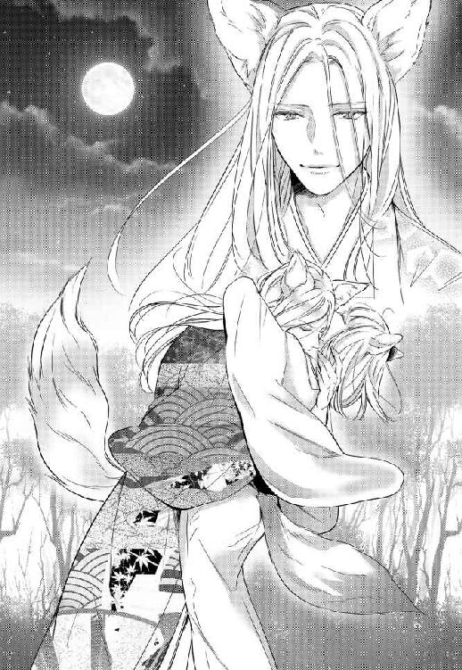
すっと伸びてきた手が無遠慮に頰へと触れる。
ロジェのそれよりもほっそりとしていて、すらりと美しい指先。
こんなのだめだ。
これ以上はだめだ。
そう思うのに、触れられた部分から一気に全身へと熱が回る。
あまりに強すぎるにおいに中てられて、何も考えられない。
「我々は本来互いのにおいから直観的に伴侶を選ぶ。以前から薄々気がついてはいたが、こうして久しぶりにお会いして確信した。貴女ももう気がついているはずだ、いちの姫君」
真っ白な尻尾がゆらりと揺れて、ふっと近づいた涼しげな面差しに陰が落ちる。
それは自分でもわけのわからない──ただ抑えようもない衝動、だった。
今の状況も周りの全ても、その瞬間頭から消え失せて。
すがるように伸ばしてしまった腕。
においに中てられておかしくなっているのは、彼もまた同じだったのかもしれない。荒い吐息が首筋をかすめて、においを確かめるように一度擦りつけられた鼻。一拍遅れて深く首に食いこんだ牙の感触に、びくりと大きく身体が跳ねた。
気遣いや優しさなど微塵も感じられない、乱暴な嚙み方。
だというのに身体は、かつてないほどひどく興奮していた。
もっと嚙んでほしい。もっと触れてほしい。もっと、全て。この飢えを全部満たしてほしい。
ひどい情欲に駆られるように、彼の首に回した腕に力が籠もる。
荒々しい吐息がまた首元をくすぐって、別の場所に再び牙が触れる。
肌に食い込みかけたそれを唐突に止めたのは、静かな──本当に静かな声だった。
「おやめください、ユアン王太子殿下」
耳に心地の良い低音。聞き慣れた優しい声に、まるで頭から冷水を浴びせられたかのように全身から一気に血の気が引いた。
パッと先に身を離したのは、どちらだったのか。
凍りついたかのように動かない身体を、どうにか動かして回した首。巡らせた視線が、見慣れた青い瞳とぶつかって身がすくむ。
本当に、つい先ほど戻ったばかりなのだろう。簡易な旅衣裳を纏った彼の髪はいつもよりも乱れたままで、節々にも隠しきれない疲れが滲みでている。固唾を呑んでこの光景を凝視している護衛たちの中、彼だけはひたすらに表情を変えはしなかった。
「いったいどういうことなのか、説明していただけますか」
淡々と紡がれる言葉からは、苛立ちも怒りも感じ取れない。
それがかえって恐ろしさを助長する。
「申しわけない」
籠もる熱を吐きだすかのように細く長く息を吐いて、ユアンがゆっくりと声を上げる。低くかすれたその声、それでも静まり返った空気の中でよく響いた。
「冬を目前にして過敏になっているからか、貴殿の奥方のにおいに煽られて、正気を失っていたようだ。弁明の余地もない」
二人の間に、重い沈黙が落ちる。尻尾を垂れて肩をすくめたユアンもまた、表情からは感情が上手く読み取れない。
口を挟むのも憚られるほど張りつめた空気。先にその拮抗状態を破ったのは、ロジェのほうだった。
「とりあえず、今宵はもうお休みください。私も疲れておりますし、貴方も落ち着かれたほうがいい。私たちもここで失礼させていただく」
こういう時、ロジェの態度には決して揺らぎがない。
「来て、しゆん。君とは少し話がしたい」
動揺や怒りを一切滲ませない、淡々とした声。ごっそりと表情の抜け落ちたその顔は、凍てつきそうなほどに冷ややかで恐ろしい。
先ほどまでの狂おしいほどの熱はどこへ消えたのか。冷え切ったつま先を無理やり持ち上げて、踏みだした足がわずかにふらつく。
そんなしゆんの姿にすっと目を細めたロジェはけれど、いつものように手を貸してはくれなかった。
尻尾のような襟足の毛をふわりとなびかせて、彼が身を翻す。
当然だと、わかっている。
けれど、こちらを振り返ることなく歩きだしてしまった背中。
見慣れたそれが、もう手の届かないほど遠くへ行ってしまった気がして。もつれそうになる足を、しゆんは必死に前へと動かした。
「説明、してくれるよね」
明かりの灯された、いつもの寝室。丁寧に使い込まれた年代物の調度品も、そこに落ちる柔らかな飴色の光も、なにもかもがいつも通り。だというのに、促されるようにして寝台の縁に腰を下ろした自分とその横に並ぶ彼との間には、凍てつきそうなほどに冷ややかな空気が流れている。
手を自分の膝の上で組んだまま、ゆるりとこちらを見上げた目には、先ほどまでとは打って変わって強い光が宿っていた。
「俺には君も彼を誘っているようにしか、見えなかった」
あくまで静かな──本当に静かな声。
それでも、向けられた視線の鋭さに息が詰まった。
否定はできない。
あの時、自分は彼を受け入れていた。求めていた。抗いようのない本能が勝手に彼を欲していた。
恋愛感情なんて微塵もない。
昔からずっと、今この瞬間だって自分が好きなのは目の前にいるこの人で、それは何も変わらない。だというのにあの瞬間、身体はたやすく心を裏切った。
何か言わなければと思うのに、心がぐちゃぐちゃで、言うべき言葉が何も思いつかない。
「......ごめん、なさい」
震えた声で、どうにか返した言葉。
「それは、何に対しての謝罪なの」
一拍遅れて彼が返してきた声は、さきほどよりもずっと低くよく響いた。
ぐっと肌の上を拭うようにして首に触れた指に、びくりと身体が震える。
彼が指の先でなぞった場所に何があるのかは、鏡に映さずともすぐに悟れた。
自分たちにとって、首はとても大切な場所だ。
伴侶以外の異性に触れされることなど許されない。こんなふうに嚙み痕を残させるなんて、決して許されない場所だったのに。
「ごめんなさい......っ」
泣いてはだめだ。そんな資格は自分にはない。
溢れだす感情を必死に押し殺して、どうにか吐き出した声はひどくひび割れてかすれた。
求められているのはこんな言葉じゃない。わかっているのに、それ以外の言葉が出てこない。
「だから、それじゃあ何もわからないんだ」
彼の零した吐息に、初めて明確な苛立ちが滲む。
首を離れたその手がギュッと強く握りしめられるのが、痛いほどに強く目に焼きつく。
「あいつに抱かれて気持ちが移った？」
重いため息を漏らした後、一息に投げかけられた問い。言われたことを数秒遅れて理解して、身が凍りついた。
不貞を疑われても仕方のない状況だとわかっている。それでも、針で刺されたかのように全身がずきずきと痛んで、声が出なかった。
証明する手立てなんてなにもない。けれどこのままにもしてはおけなくて、大きく横へと首を振れば、小さく息を吐いて彼は言葉を重ねてきた。
「熱心に口説かれて、心が動いた？」
違う。
「最初から彼と組んでいて、二人で何か企んでいた？」
違う、そんなはずがない。
ただ首を横に振り続けるだけの妻を前に、彼はもう一度だけ重々しいため息を吐き出した。わずかに震えるその吐息だけで、彼が必死に抑え込んでいる感情の激しさが伝わる。
「......じゃあ、なんで何も言ってくれないの。俺が聞きたいのは謝罪なんかじゃない。君の気持ちだ。俺を好きだって言っていたのは、全部噓？ 全部俺を罠にかけるための演技？」
──違う。
演技なんて、一つもなかった。
膝の上で握りしめた拳が震えて、ようやく口をついた言葉はきちんとした弁明にはならなかった。
「っ......わからない」
「わからない？」
ぐっと視線を上げれば、怪訝そうなしかめ面が目に飛びこんでくる。
とたん、こらえていたものが溢れてしまったかのように、一気に視界が歪んだ。
「何が起こったのかわからなかった。気持ちなんてない。わらわが好きなのは、今も昔もおまえだけなのに......っ、あの瞬間、身体が勝手に動いて何も考えられなくなった」
自分でも止められなかった。その事実が情けなくて悔しくて、死ぬほど怖い。
ロジェがあの場にこなければ。それを考えると、身体が震えて止まらなくなる。
「それは......あれかな。王太子が〝においに中てられた〟って言っていたのと同じことかな。本能的な部分で惹かれ合っているってことだよね、たぶん。俺にはちょっと理解が及ばないんだけど」
認めたくない。でも、あんなことになって今更否定のしようがない。
苦々しい彼の声にこくりと頷けば、その拍子にボロボロと涙が零れた。
「獣人になんて生まれなければ良かった......っ、おまえを裏切るくらいなら、こんな身体いらない。最初から、人間に生まれてさえいれば、こんな苦労もかけなかったのに......っ」
まるで小さい頃から少しずつ積み重ねてきた全てを、一瞬にして覆された気分だった。
種族なんか違ってもたとえ問題は山積みでも、自分はこの人が好きで、彼とならきっと上手くやっていける。そんな全てが、たった数時間の間に足元から全て崩れ去った。
恋愛感情どころか、性格や素の顔もよく知らない男。そんな彼に感じた狂おしいほどの渇望を、心底愛おしいと思う男には感じない。
埋めようもない種族の違いがそこにはあって、それはおそらくこれから先どう頑張っても覆せない。抑えられないこの感覚を毎年自分は味わうのだろうし、ロジェがそれを理解できる日は永遠にこない。
こちらへと伸ばそうとした手を、彼が宙でぴたりと止める。
その手がギュッと強く握りしめられるのが、涙で歪んだ視界の中でもはっきりと目に映った。
「......悪い。俺も少し頭を冷やしてくる。先に休んでいて」
熱を逃がすように小さく吐息を漏らして、ロジェが腰を上げる。
「しゆん」
部屋を出る直前、もう一度だけこちらを振り返った彼は、困ったようにそっと肩をすくめた。
こんな時でも変わらない優しげな眼差しに、ギュッと胸が押し潰されそうになる。
「ごめんな」
そんな目で、自分を見ないでほしい。
そんな困ったような顔を、しないでほしい。
──それこそ。
それこそ、その〝ごめんな〟は何に対しての謝罪なのだろう。
全てを拒絶するかのように、静かな音をたてて閉じてしまった扉。見慣れた重々しい扉を見つめて込み上げる嗚咽を、しゆんは自分でも止めることができなかった。
＊＊＊
「......さま。しゆんさま」
聞き慣れた侍女の声。ためらいがちにそっと肩を撫でられて、落ちていた意識が急激に戻ってくる。
どうやら、泣きつかれてあのまま眠ってしまったらしい。
寝具に包まれた身体からはいつの間にか帯と着物が取り払われていて、苦しくない程度に数本の紐も解かれていた。
「おはよう、ちや。これは、おまえが？」
ちやが起こしにきたくらいだ。部屋を見回しても当然ロジェの姿はそこにはない。
けれど、彼女がするのなら、もう少し丁寧に紐を結び直すなりしただろう。
「いいえ。私も昨夜はそのまま休ませていただいていたので、殿下がされたのかと」
──わざわざ戻ってきて、してくれたのか。
その様子を思えば、ぐっと胸が熱くなった。
あんなことがあった後だ。嫌悪して捨て置いてもよかったくらいなのに。
「申しわけありません。わたくしがついていれば」
不意に押し殺したような声が耳を打って、見上げた顔。
今にも泣き出しそうに揺れた彼女の瞳に、しゆんは慌てて身体を起こした。きっと昨夜の一件を誰かから聞いたのだろう。人の噂に戸は立てられないし、こともことだ。どのような形で噂が広まっているかもまた、想像には難くない。
けれど、それは決して彼女のせいではない。昨夜晩餐の前に彼女を部屋へ返したのは、他でもないしゆんだ。
「顔色が悪いからもう休めと言ったのはわらわだ。おまえが気に病む必要はない。体調は、もう大丈夫なのか？」
「大丈夫です。ご心配をおかけして申しわけございません。......スティアの王太子さま一行が先にここを発たれるということですので、お仕度をさせていただきますね。首は、何か覆うものをお持ちしたほうがよいでしょうか」
「あぁ......」
躊躇いがちな、ちやの視線は、しゆんの首元で留まっている。
昨夜は恐ろしくて見ることもできなかったが、現実を直視しないわけにはいかない。
意を決して鏡台の前へと向かい、綺麗に磨き上げられた丸い鏡をおそるおそる覗きこむ。とたん、目に留まったその痕にしゆんは思わず大きく息を呑んだ。
「これは」
正視に耐えないような、深い嚙み痕。
牙の形までわかってしまいそうなほどくっきりと残った痕の反対側に、もう一つだけ、薄い嚙み痕がある。そう深いものではない、うっ血を伴った下手な嚙み痕。番に残すものとしては拙いそれに手を触れて、たまらずくしゃりと顔が歪んだ。
──会いたい。
ロジェに会いたい。
外はきっと針の筵だ。それでも、彼に会って声が聞きたい。顔が見たい。その肌に触れたい。
「ちや」
震える手でもう一度だけ彼がくれた痕をなぞって、振り返る。
その足は、さきほどまでよりもしっかりと地を踏めている気がした。
ひそひそと囁かれる言葉なら、ほとんど拾えてしまう耳が今はとても憎い。
突き刺さる棘のような言葉たち。
彼らの怒りはもっともだ。
主の不在時に、女主人が他国の王族と抱き合っていた。それも相手が同種族とあっては、どのように批判されようとも、邪推されようとも仕方がない。説明のしようがない感覚を理解しているだろう同胞たちの視線には憐憫が込められていて、それも今はひどくこたえた。『やはり人間では』『最初から無理だった』そんな声があちこちから聞こえてくる。
冷ややかな侮蔑の眼差しを一身に受けながらも足を向けた城門前には、数台の馬車が並んでいた。
パラパラと立ち回る獣人たちの中に二人の姿を見つけて、一瞬足がすくみそうになる。昨日とはまた違う艶やかな着物を纏った王太子と、いつも通り落ち着いた配色の無地の着物を纏ったロジェと。二人の間には、ひたすらに張りつめた静寂が落ちているように見える。
ぴくりと白い耳が揺れて、先にこちらに気がついたのは王太子のほうだった。
淡い緑色の目が、しゆんの首元を捉えてすっと細められる。自分たちと同じ、縦に長い瞳孔。絡みつく視線から逃れるようにして足を進めれば、ロジェもまたこちらを振り返ってわずかに目を細めた。
赤い布を斜めにかけて隠してもらったのは、片方の側の嚙み痕だけだ。誰になんと思われても構わないし、こんなことで許してもらおうと思っているわけでもない。ただこれだけは今、はっきりと自分の意思表示として二人に伝えたかった。番の痕を隠すなんてことを自分たちはしない。
である以上どちらが自分の相手かなんて、考えるまでもなく決まっていた。
近くに寄れば寄るほど、やはり昨日と変わらず王太子のにおいは強烈で。身体中に絡みつくかのような甘く蠱惑的なにおいに、自然と身体は反応を返してしまう。
それでもどうにか背筋を伸ばして、しゆんはまっすぐにその顔を見上げた。
「おはようございます、ユアン王太子殿下。こちらへ足を向けるのがすっかり遅くなってしまい、お恥ずかしい限りです。申しわけありません」
「いいえ、昨夜は取り返しのつかないご無礼を。こちらこそ申しわけありません。ご夫婦の仲に亀裂でも入れてしまったらと、大変心配しておりました」
──最初から、それが狙いだったくせに。
いったいどの口でそんなことを言うのか。わざとらしく、申しわけなさそうな顔を繕っているその男の姿に、ふつふつと怒りがこみ上げる。
彼は、自分のにおいが同胞の女性を強く惹きつけるとよく知っている。
きっとその上でロジェの留守中にここを訪れたのだろうし、最初からそのつもりでしゆんを外へと誘った。こちらのにおいに中てられて、というのは噓ではないのかもしれないが、それだって初めからある程度予測がついていたはずだ。
彼はわざと自分たちの関係にひびを入れるためにここを訪ね、そしてまんまと目的を果たした。その裏にはきっと、しゆんの父親もまた嚙んでいるに違いない。
そこまでわかっていてなお、今もざわつく身体が恨めしい。
「お気遣いありがとうございます」
冬が近いから、と。昨夜彼が口にしたそれも、間違いはないのだろう。発情期を前にしていつもよりも過敏になっているのは否めない。
少し気を抜けば、手を伸ばしてしまいそうになる。
全てを忘れて身を委ねてしまいたくなる。
そんな自分を必死に抑えこんで、声を張る。
「ですが、ご心配には及びません」
こんなことで崩れるほど脆い絆じゃない。
そう自分が信じたいだけだとわかっている。
現に、そこまでは口にできなかった。開きかけて再び閉じた唇を見て、王太子が薄く笑った気配がしたけれど、それでもなお横にいる夫は何も言葉を発しはしない。
「またすぐにお会いすることになると思いますが、道中お気をつけて」
「えぇ、お二人も。ロジェ殿下、重ね重ねいろいろと申しわけなかった」
「いいえ。王城でまたお会いしましょう」
淡々と言葉を紡ぐロジェの顔には、まるで表情というものがない。押し殺しているのとも違う、ごっそりとそういった感情が抜け落ちたかのような顔。
「ロジェ」
伴の皆を引き連れて出立した王太子を見送って、意を決してその名を呼ぶ。
何を言いたいのかは、自分でもよくわからなかった。
ただ何かを伝えたくて、今にも離れていってしまいそうなその人を引き留めたくて、つんと袖を引く。
口を開きかけて、でも結局何も言えなくて。子どものように困り果てているだけの妻を見つめて、彼は目を眇めた。
小さな吐息が耳を打って、不意に伸びてきた手がぽんぽんと頭を撫でる。
まるで駄々をこねる子どもをあやすかのような仕草。
ようやく触れた手の温かさに、ひどく胸が震えた。
もっと触れたい。いつもみたいに抱きしめてほしい。けれど、そんなことを望む権利が今の自分にはない。
どうしたらいいのかもわからなくて、それでも触れた温もりをどうにか繫ぎ止めたくて、頭の上にある手の小指の端をギュッと摑む。
「手、汗ばんでる」
「え？」
「彼の前ではそうなるけど、俺には何も感じない。そういうことだよね」
低く抑えた声で続けられたそれは、質問というよりは自らへの確認のようだった。
思わずぐっと固く口を結べば、こちらを見つめる青の瞳が大きく揺れた。
「悪い。少しだけ時間がほしいんだ、しゆん。さすがに、すぐには整理がつけられない」
『狭量でごめん』
そんな言葉とともに、もう一度だけ頭を撫でてくれた手が、絡みつく指をやんわりと外す。離れていくそれを追うこともできずに、しゆんはただその場に立ち尽くした。
ざわざわと未だ身体に残る熱。冬が近いから、と王太子が口にしたその事実が恐ろしい。もうじききっと発情期が訪れる。
ゆっくりと遠ざかっていく背中。風になびく尻尾のような毛を眺めて、そっと自らの手に触れる。
先ほどまで触れていた彼の丸い爪先。
少しだけ尖った自らの爪を見下ろして、ぎゅっと胸が苦しくなる。
自分の身体を、こんなにも疎ましく思う日がくるなんて思わなかった。こんなにも強くその血を恨む日がくるなんて、思いもしなかった。
「しゆんさま」
そっと肩に手を置いてくれた侍女の声と、聞き慣れた低い声が重なる。
ロジェに次いで、昨晩のしゆんの行いを批判すべき人。
彼の腹心としてこの城の一切を任されている長身の男が、去って行く主の背中と残されたしゆんとを見比べて、見かねたように口を開く。
「私たち人間に貴女たちの種族の感覚は、理解ができません。ですが、誰がなんて言おうと貴女はこの城の女主人で、殿下の唯一のご伴侶です。それを、お忘れになりませんよう」
励ましてくれているのか、それとも釘を刺しているのかよくわからない言葉。
でも、なんだか彼らしいそれが今はとても心地よかった。
「心に留めておく。ありがとう、ツェザーリ」
いいえ、と小さく呟いた彼の瞳がわずかに揺れる。
視線を向けられたちやの手が強張るのが、触れた肩越しにしゆんにも伝わってくる。何か言いたげな目をそちらへと向けていた彼は、それでも結局何も口にはしなかった。
「それでは、私はこれで。出立は明日です。体調の不良などありましたら、必ず私に仰ってください」
その台詞は、果たしてどちらへ向けられたものなのだろう。
「ちや」
相変わらず華やかさの欠片もない、見慣れたその後ろ姿が完全に見えなくなってから、ゆっくりと彼女のほうへ顔を向ける。今にも泣き出しそうに歪んだその顔へと目を留めて、思わず肩に力が入った。長く一緒にいても、彼女がこんな顔をしているところを見たことはほとんどない。一度だけ覚えがあるとすれば、それは自分の婚約者が決まったという報告を彼女がしゆんへと上げてきた、その時だけだ。
あの日ちやが口にしたその名は、彼女が幼い頃から誰よりも嫌っていた男のそれだった。
「ツェザーリと、何かあったのか」
「いいえ、何も」
ためらいつつも口にしたその問いに、ゆるゆると彼女が首を横へ振る。
今日も綺麗にまとめられた髪には、昨日まで彼女が挿していた櫛の姿はない。
「何もなかったんです。何も」
まるで自分に言い聞かせるかのような小さな声に、なんとなくの事情を察して、しゆんは口を噤んだ。
冬を目前にしてあのにおいに惑わされたのは、たぶん自分だけではない。
確か、明日の王城には彼女の婚約者も来るはずだ。次の発情期の訪れと同時に、ちやを嫁として迎えると、その挨拶も兼ねて父の一行に同伴するという知らせは先だってもらっている。
彼女は、最初で最後だと自分の中でもう決めてしまっているのだと思う。それでも、膨れた気持ちはすぐには消えないし、そんな状態で心底嫌いな男の前に立つのはとても恐ろしい。
異性の強いにおいに引きずられて、発情期が訪れることは珍しくない。
きっと『今だけは』と、そう思っているのは彼女も自分も同じだ。
けれど。
どんなに強く願ったところで、発情期の訪れを止めることはできない。あの、頭のおかしくなりそうなほどの渇きが、自然とおさまるわけでもない。
あんな状態で王太子の前に立つことを想像すれば、ぞっと背が冷える。
それでなくても、今は自分のあさましい姿をロジェに見せることが怖くて怖くてたまらない。
──頼むから、今だけは。今だけは、待って。
誰に届くでもないそんな願いを心のうちで繰り返しているのは、自分も彼女もきっと同じだ。
小さく震える彼女の肩へと目を留めて、吐き出した重苦しい溜め息。それを振り払うようにして、しゆんはそっとその背へと手を伸ばした。
＊＊＊
「お出かけになられるのですか、殿下」
少し遅れて、自分の後を追ってきた男の怪訝な声。
その声の主ならば、振り返るまでもなくわかっている。
鞍をつけた愛馬の栗色の毛を撫でながら、ロジェは彼の言葉にひとつ頷きを返した。
「例の彼女のところへ行ってくる」
「例の......って、本気で今行かれるつもりですか」
「どうしても会いたいんだ。明日の朝には戻る。迷惑かけてすまないが、諸々よろしく頼む」
「誤魔化さないでください」
剣呑な口調には気がついていて、受け流した。けれど、やはり長いつき合いの腹心は手厳しい。
ゆるりと後ろを振り返れば、三白眼の中の青い瞳がまっすぐにこちらを見下ろしていた。
「しゆんさまをお独りにされるのですか。首の痕も含めて、いろいろと受け入れがたいのはわかりますが、一番つらいのはしゆんさまであるはず。お傍にいられるのは殿下だけなのですよ」
ゆっくりと諭すような、咎めるような口調。
「ふぅん？」
紡がれた言葉に、つと引っかかりを覚えて見慣れたその顔を覗き込む。
以前のツェザーリならばこんな時に、しゆんを擁護するようなことは絶対に口にしなかった。それだけ、彼女に信頼を寄せてくれているということなのだろう。けれど、引っかかったのはそこではない。
「......なんですか」
「いや、おまえもアレが彼女たちにとってどういうものなのか、わかるようになったんだなぁと思って」
確認がてら、からかうようにして上げた声に、彼の示した反応は顕著だった。
虚を突かれたように大きく目を見開き視線を彷徨わせて。上手い返答が思いつかないのか、口を開きかけてはまた噤む。
「その首の痕は、ちやかな」
「っ」
慌てたように彼が押さえた右側の首元に、目立った痕はない。
けれどその動作だけで、事態を把握するのにはもう十分だった。
「ふぅん？」
思わずかみ殺した笑い。どうやら鎌をかけられたことに、彼も気がついたらしい。
心底不愉快そうにしかめられた顔が、それでもほんの少しだけ羞恥で赤らんでいる。
それは長いつき合いでも、初めて見る類いの表情だった。
「婚約者がいるんだってね。いろいろと難しい相手だと思うけど」
脅しではない。実際に、彼女はとても難しい相手だ。
彼女の婚約者とやらが素直に彼女を手放すとは思えないし、人間嫌いの家族がツェザーリの元へ彼女をやることをそう簡単に許すとも思えない。彼女自身の人間不信もなかなかなものだし、埋まらない種族差なら今まさに彼らだって目の当たりにしていることだろう。
「それでも」
一度言いかけて、切られた言葉。束の間ここにいない相手を想うかのように揺れた目が、まっすぐにこちらを見つめる。
「それでも、後悔のないように向き合うつもりです」
「そう」
元よりそれくらいの決意もなしに、彼女へ手を出すとは思っていない。長く自分は結婚などしないと宣言していた彼がその気になってくれたのなら、こちらとしては喜ばしい限りだ。
現状、自分たち同様に問題は山積みらしいと、わかっていたとしても。
「俺もだよ、ツェザーリ。俺も後悔のないように、きちんと向き合いたい」
まっすぐに見返した先で、ツェザーリが大きく目を瞬く。
拗ねるように小さく鼻を鳴らした愛馬の柔らかな毛を数度撫でてやってから、再び彼のほうを見上げる。
「きっとさ、彼女自身の意思じゃないだろうってことは、きちんとわかっているんだ」
わかっている。
彼女が自分を愛してくれているのは、演技も打算もない本心からだろう。である以上、彼女が本気であんなことを望んだわけでないことは、最初からわかっていた。
「だとしても、あんなものを見せられて平然としていられるほどには、俺もまだ人間ができてない」
吐き出した言葉には、自然とため息が混じる。
しゆんの首に別の男が口をつけていた。最愛の妻が熱く潤んだ瞳で、そんな男の首へと腕を絡めていた。あれを、なかったことにはできない。仕方のないこととして許容してやることはできない。
狭量だとはわかっていても、彼女が辛い思いをするとわかっていても。今回に限っては、ただ優しく容認してやることが正しいとは思えない。
「本能だか血だかなんだか知らないけれど、俺はもう少し足搔いてみる。獣人になんて生まれなければ良かったなんて、もう二度と言わせたくないんだ」
──本当に。
『獣人になんて生まれなければ良かった......っ、おまえを裏切るくらいなら、こんな身体いらない。最初から、人間に生まれてさえいれば、こんな苦労もかけなかったのに......っ』
誰より一族を愛していた彼女にあんなことを言わせてしまったのは、自分の至らなさだ。
発情期とやらの感覚も、彼女たちのいうにおいがどうなんて感覚も、自分にはこの先一生理解することができないとわかっている。
けれど、それは諦める理由にはならない。人間と獣人とが本当の意味で伴侶にはなれないだなんて、そんなことは決してないはずだ。
「......申しわけありません。そういうこととは思わず、先走った発言を」
「いいや。おまえのいうことももっともだ。今一番辛いのはしゆんだと思う。悪いけど彼女のこと含め、留守中のことは頼む」
重ねた言葉に、彼はもう何も言い返してはこなかった。
ただ全てを理解したかのように、深く頷きを返してきただけで。
見慣れた強面の顔。そこに浮かんだ複雑な感情を前に、ロジェは最後にもう一度だけ言葉をつけ加えた。
「おまえ自身のことも。時間はそうないはずだ。後悔のないようにな」
七、陰鬱な夜会
「いかがですか、しゆんさま。苦しいところなどはございませんか」
鏡越しに、こちらを窺う侍女の顔。いつもはロジェの身の周りの世話をしている彼女の顔を見返して、わずかに首を傾げる。
「苦しくはないと思うが......」
この感じをいったいどう表現したら良いのだろう。
大きな鏡の中。清楚な青いドレスを身に纏った女が不安げにこちらを見つめている。尻尾ごと覆い隠すかのようにふわりと広がったスカートに、綺麗に纏め上げられた髪へと挿された宝飾つきの花飾り。見慣れたものと言えば、その顔と大きな耳くらいではないかというくらい、見慣れぬ格好をした自分の姿に思わず眉をひそめる。
「腰回りがスカスカしていて、心もとない。首元は......これで良いのか？」
これは些か開きすぎではないだろうか。
剝き出しになった肩や鎖骨に手を触れれば、自然と表情が曇る。未だ残る嚙み痕を隠すために、首にはスカーフが巻かれている。とはいえ、こんな場所を伴侶以外に晒す習慣は、自分たちにはない。
「えぇ。こちらもとても素敵ですよ、しゆんさま」
にこにこと微笑む年配の侍女は、例の件の後も自分たちへの態度を変えない使用人たちのうちの一人だ。心のうちはわからない。けれど、そういう人々が少なからずいることが、今のしゆんには救いだった。
今朝早くになってようやく帰ってきたロジェが、昨日の夜どこで何をしていたのか。しゆんは知らない。尋ねればたぶん答えてくれるとわかっていて、それでも訊けなかった。眠い目をこすって出迎えた彼の首には、べったりと知らない香りがまとわりついていて。それがどういうことなのかを問い質してしまうのが、ただ怖くて。
たぶん獣人のものではない、甘く不思議なにおい。
一緒の馬車に乗り込んだ時にはもうその香りは消えていたけれど、忙しなく書類を確認している彼とは道中一言も口をきけないまま。慣れぬ酔い止め薬の効果も手伝って、気がついた時にはいつの間にか眠ってしまっていた。
いつもなら迷いなく訊けた。説明もなく帰ってこなかった事実をためらいなく問い質せた。だというのに、あの一件以来自分も彼に対してひどく臆病になってしまっている。これでは夫婦の溝が広がるばかりだとわかっていても、どうしたら良いのかわからない。
「ありがとう。久しぶりだから、上手く歩けるか」
陰鬱な気分を振り払うようにその場で足を踏めば、コツコツと独特な音が響いた。
互いの婚約が決まってから親睦を深めるための一環として、王城の夜会には度々呼ばれてきた。りんと一緒にドレスを着たことも一度ではないから、まるきり経験がないわけではない。
けれど、それも久しぶりな上に、今回はロジェの伴侶として参加するのだ。みっともないところを晒して、これ以上彼の顔に泥を塗るような真似を重ねてしまったらと思うと、先ほどから胃が痛くてかなわない。
「大丈夫でございますよ。殿下はエスコートがとてもお上手ですから」
「......そうだったな」
束の間懐かしい記憶が蘇って、ギュッと痛んだ胸。
また沈んでいきそうになる思考を止めるかのように不意に扉が叩かれて。聞こえてきた声に、反射的に身体が強張った。
いったいどんな顔で会えばいいのだろう。
いつもは、どうやって笑っていただろう。
本来なら自分もそちらへ向かって出迎えるべきだと、わかっているのに上手く足が動かない。
ただ立ち尽くすしゆんの前で、侍女が開いた扉。
まっすぐに絡んだ視線に、息を呑んだのはしゆんだけではなかった。
白を基調にした胴衣に、深い青のサーコート。その上からふわりと羽織られた大きなマント。久しぶりに見た彼のそんな装いに、心臓がとくりと音をたてる。
王城の夜会が嫌いだったなんてことは、妹にだって言ったことがない。
アッという間に女性たちに囲まれてしまう彼はそれでも、必ずその輪の中から抜け出して自分たちの元を訪れてくれた。
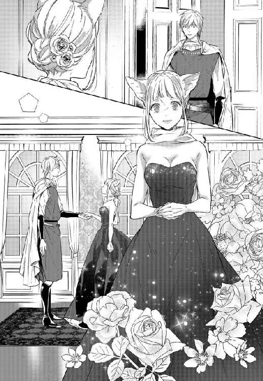
自分たちの──否。しゆんの隣に並ぶ妹の元を。
その手が妹の手を引くのを、自分はいつも婚約者の隣で眺めているだけ。気がつくといつもりんの姿を目で追っている婚約者と、気もそぞろな会話をひたすら繰り返すだけのあの時間が、本当はとても嫌いだった。
まるで当時に戻ってしまったかのような錯覚に襲われて、すくんだ足。
こちらへと手を差し出してきた彼は、相変わらずぴくりとも表情を緩めてはくれなかった。ほんの少しだけその目を細めただけで。
「よく似合っている。行こうか」
「ロジェ」
「うん？」
──もう、だめなんだろうか。二度と戻れないのだろうか。
そんな言葉が口から零れ落ちそうにそうになって、すんでのところでそれを呑み込む。
「いや......いい」
「そう？ じゃあ、遅れるとまずいから、そろそろ行こう」
王城には、先日の一件はまだ広まっていないらしい。だからきっと、こんな会話も皆の目にはいつも通りに映るのだろう。実際ロジェの口調はとても優しいし、しゆんの手を引く仕草もとても丁寧だ。
けれど、そこには確かに見えない膜のようなものがある。薄くて、とても大きな隔たり。拒絶されているのだと、長いつき合いですぐに悟れてしまう自分がいたたまれない。
「は......」
会話もないまま手を引かれて辿りついた会場は、冬も間近とは思えぬ熱気に溢れていた。華美な宝飾を好まない代わりに、色とりどりの織り布で飾られたホールの中はとても煌びやかで華やかだ。
より打ち解けやすいのように夜会を、と申し出てきたのはスティアの国王のほうらしい。大の酒好きとして有名な彼が、大きなゴブレットを片手にウォルズの国王としゆんの父親と３人で会話を交わしているのが、真っ先に目に入る。
「しゆん」
隣に並んで手を引いてくれる夫に導かれるまま、足を進めた会場。儀礼に則って各々へと挨拶に回る中、不意に名前を呼ばれて振り返ればそこにはとても懐かしい顔があった。
「兄さま」
自分と同じ黄金色の耳に、大きな尻尾。珍しくきちんと正装をしている兄の、変わらぬ姿に強張っていた肩から自然と力が抜ける。
「いやぁ、こういう夜会は連れがいないと寂しいもんだな。することがなくて、アッという間に酒が無くなる」
兄はいつもこの調子だ。お調子者で何事も雑で要領が悪くて、しかも父には頭が上がらない。
見た目以外には取柄がないなんて囁かれてしまうこの兄のことが、しゆんは昔からとても好きだった。決して頼りになる男ではないけれど、一緒にいると気が楽になる人ではある。
「元気にしていたか？ おまえが嫁いでからまだそんなに経ってないのに、城の連中は寂しそうにしている」
「えぇ、兄さまも。お元気なようで何よりです」
「いや、これでもあれからいろいろとあってな......あ。申しわけありません。ロジェ殿下も、ご無沙汰しておりました。御挨拶が遅れて」
ロジェを前にすると、何故か兄はとたんにしどろもどろになる。昔からそうだ。こういうところも何一つ変わりがない。
「いいえ。こちらこそご挨拶が遅れました。義兄上とはぜひお話をしたいなと思っていたところです」
オロオロと視線を彷徨わせた兄の姿が面白かったのか。不意に、ロジェがふっと口元を緩めた。
心の底から零れたような楽しげな笑み。
いつも、当たり前のように自分へと向けられていた、しゆんの大好きな顔。
「お話？」
「えぇ、少々お時間よろしいですか」
彼の微笑みが、にっこりとした胡散臭い笑みに変わるととたん、兄の顔色もサッと青ざめる。仲がいいのか悪いのかよくわからない。そんな二人のやり取りを黙って見守っていると、ロジェがこちらを振り向いた。
「ちょっと飲み物でも飲んで待っていてくれるかな、しゆん」
こちらを向いたと同時に、消えてしまった笑み。
「ツェザーリとちやのことについて少し話をしてくる」
抑えた声でつけ加えられた言葉に、ハッと息を呑む。
彼女は今回、休暇扱いでこの夜会についてきた。今頃はおそらく婚約者と久しぶりの対面を果たしているはずだが、いったいどうなっているのか。先ほどからずっと気がかりだった。
自分たちの種族にとって結婚は親が決めるもの。そこに娘の意思は必要ないのだと、しゆんだって嫌というほど知っている。それでも、捨てようとして捨てきれない気持ちがあることだってまた、うんざりするほどによくわかっていた。
「あの二人のこと、どうかよろしく頼む」
「あぁ。何かあればすぐに呼んで」
いつもなら頭を撫でてくれるその手はやはり、下に降ろされたまま。
そんな小さな所作の一つ一つに壁を感じて、いちいち落ち込む自分が本当に不毛だ。
──しっかりしなければ。
後ろ向きになっている場合ではない。父が、ロジェを手にかけろと命じてきたのは、今日この日だ。たとえ彼との関係が今こじれてしまっているとしても、父の思惑通りには絶対にさせない。
連れだって去っていく二人の背中を見送って、自らを鼓舞するために大きく吐きだした息。飲み物でももらいに行こうと気持ちを切り替えたところで、こちらへと向かってくる人の姿が目に飛び込んできて、自然と背筋が伸びた。
先日よりもいっそう華やかな着物の後ろで、雪のように白い尻尾が揺れる。
近づくだけで目が眩むほどの甘いにおい。
この王太子が特異なのは確かなのだろうが、発情期を前にして身体が本能的に相手を選びとっているというのもまた事実なのだろう。
もう二度と夫以外に首筋は許すまいと誓ったのは、つい数日前のこと。だというのに、この間以上に身体が火照ってしまうのは、きっと気のせいではない。
「数日ぶりですね、いちの姫君。殿下はどちらへ？ こんな麗しいお妃さまを一人残していかれるなんて、彼らしくないな」
白々しい。
明らかにタイミングを窺ってきたのであろうことは確かなのに、そんなことを口にして彼は首を傾げる。
「この間のあれが後を引いているのであれば、申しわけないことをした」
困ったような顔でそう続けられて一気にこみ上げた怒りを、しゆんは必死で押し殺した。
こういう男の挑発にのればロクなことがないと、それくらいのことはしゆんにも悟れる。
「ご心配には及びません。大切な話があって、少々この場を離れているだけです。すぐに戻ります」
「そうだろうか」
「え？」
「失礼ながら、殿下のほうが君から距離を置きたがっているように、私には見えたが」
痛いところを突かれ怯んだ隙に、彼が一歩近づく。
周囲から何かを疑われるような距離ではない。けれど、手を伸ばせば触れられそうなほどの距離。強くなったにおいに、また全身の毛がざわついてしまう。
スティアとの親交を深めるための場だ。獣人と人間の架け橋となるべくして嫁いできた身である以上、この場で露骨に彼から逃げるわけにもいかない。
本当に嫌な男だと思わず眉をひそめれば、そんなわずかな変化をも見逃さずに、彼は薄く笑った。
「私なら、何があっても貴女の傍を離れないな。......こんな時期に、そんな魅惑的な格好をしているのなら、なおさら」
こんな耳でもなければよく聞き取れないほどに、低く抑えられた声。視線が向けられた先を追って、一気にと頰が熱くなる。
嫌だ、と思う。確かにそう思っているはずなのに、顕になった首や胸元。本来、自分たちの間では伴侶にしか晒さないその部分へと絡みつく熱を孕んだ視線に、自然と鼓動が速くなってしまう。
「いったいどういうおつもりなのですか。ユアン王太子殿下。他所の夫婦をかき回すことに労力をさかずとも、貴方にはお妃さまがいらっしゃいますし、側室を望む女性もたくさんおりましょう」
こみ上げる怒りのままに睨みつけた顔。周囲へとさっと視線を巡らせた彼が、静かに再びこちらを見下ろす。その顔はもう、先ほどまでのようには笑ってはいなかった。
「ただ、貴女がほしいんだ」
しゆんにしか届かないような、小さな声。
「それ以外のことは全ておまけに過ぎない」
それでも、その声ははっきりと耳に届いた。
ゆっくりと目を瞬き、ひたすら反応に困って口を噤む。
あからさまに顔を歪めたしゆんを前に、彼は再びその口を開いた。
「今回のことで気がついたはずだ。人間と獣人が心の底から信頼し合える日なんてこない。貴女は彼の伴侶であるために、多くのものを我慢してきた。好きな食べ物も我慢して、決して好意的ではない人々の中で日々お互いの妥協点を探って......そうして頑張ってきた結果、どうだろう。愛する夫は一瞬にして心を離してしまった」
「っ......違う」
「違うのなら、どうして今ここに彼がいない？ 自分が貴女の傍を離れれば、私が寄ってくることくらい彼なら想像ができるだろう。貴女を試しているのか、それとももう貴女との関係ごと獣人たちとの和平を断ち切るほうへ奔走しているのか。いずれにせよ、貴女はもう彼の信用を失っているということではないのか」
「違う」
──やめて。
これ以上踏み込まないで。必死に隠している傷口を抉らないで。
唸るように漏らした短い制止にも、彼は言葉を重ねることをやめなかった。
「発情期に、相手から同じだけの熱を返してもらえない辛さを、貴女はまだ知らない。耐えがたい渇きに苛まれてなお、相手にはその感覚すらわからない。あれを乗り越えるだけのものが、今の貴女たちにあるのだろうか」
「っ......！」
じり、と彼が更に距離をつめる。とたん、一気に全身の毛が逆立った。
身体中に血が巡って、尻尾のつけ根がざわざわと疼く。
覚えのあるその感覚に、一拍遅れて飛び退くように引いた足。
「近寄るな」
反射的に発した唸り声がまるで変声期のように、不安定に揺らぐ。茹る頭でも、全身が目の前の男を求めていることだけははっきりと伝わってきて、しゆんは自らの腕を強く抱きしめた。
「本能がどうなんてことは関係がない。わらわの伴侶は、ロジェだけだ」
早口でそんなことをまくしたてながらも、彼の目が見られない。顔が見上げられない。
そんなしゆんの心のうちを見透かしたかのように、ユアンは最後にもう一つだけ言葉をつけ加えた。
「お父君と共に待っている」
どこか高圧的な低い声。それを紡ぎ出す唇へと自然に向いてしまう目をどうにか引き剝がして、しゆんは彼に背を向けた。
背中に絡みつく視線から逃れるように急ぎ足を動かす。
慣れぬ履物はやはり、誰かの支えなしでないと上手く運ぶことが難しい。
王太子の元を離れてもなお、靄がかかったかのように熱を帯びた頭。おぼつかない足元は、少しも進まないうちにすぐにもつれた。
「あっ!?」
「しゆんさま!?」
慌てたような誰かの声を皆まで聞くことなく、つんのめってしまった身体を、とっさに誰かの太い腕が止める。自然とその人へ抱きつく形になって、ふわりと覚えのある煙草のにおいが鼻をかすめる。
「体調が優れぬのなら、少し休ませてもらったどうだ」
聞き慣れたその声の主は、顔を上げるまでもなくすぐにわかった。
恐る恐る視線を上げれば、静かにこちらを見下ろす父の顔が目に入る。糸のように細い目を更に細めて、彼は再び口を開いた。
「殿下の姿がないようだから、代わりに私が連れていこう」
「大丈夫です。父さまの手を煩わせるほどでは......」
「ばかを言うな」
低く抑えた声を吐き出した拍子に、ちらりと覗いた牙。
「ひどいにおいだ。同胞の兵士などはとてもじゃないが、近づけられない」
さすがに気まずいのか。
そっと逸らされた目がかえって恥ずかしくて、身が縮む。
けれど、この父からそんな気遣うような言葉をかけられたことは、本当に初めてで。
もしかしたら、気持ちを変えてくれたのかもしれない。
こみ上げた淡い期待は、次の瞬間にはたやすく砕かれていた。
「おまえに、どこぞの馬の骨とも知れない男の子どもなど宿されては困るからな」
そんなことを呟いて、侍女たちに近くの空き部屋を確保するように指示し始めた父の目はもう、娘のことなんて見ていない。
娘はすべからく政のための道具なのだと最初から知っていたはずなのに、いったい何を期待してしまったのか。
抗う気力も起こらぬままぐっと唇を食んで、静かに父について行く。熱っぽい身体を引きずるようにしながら、どうにか辿りついたのは客室らしき一室だった。
簡素な部屋の中には、本当に必要最低限のものしか置かれていない。それでも一歩足を踏み入れれば、ひやりとした部屋の空気が火照った身体にとても心地が良かった。
完全にあの男のにおいに引きずられた。いつもよりも早い訪れだが、きっと間違いはない。
──発情期がきてしまった。
予感はあった。いくら空に願ってみたところでこういうものは、大概叶いはしないとも知っていた。けれど、今のロジェにこの状況をどう伝えればいいのか。考えただけでも、胃の腑が重くなる。
それも。
「決行は今夜だと、そう言ったな」
まさに彼自身の命が狙われている、こんな日に。
侍女が水をくみに行った隙を見計らって、ゆらりと大きく揺らされた尻尾。
確認というよりは命令に近いそれに、ぎゅっと拳を握りしめれば、掌のうちに尖った爪が食い込む。
そんな娘を見下ろして、淡々と父は言葉を続ける。
「殿下が、ラナウの町で最後の一週間頻繁に通いつめていた屋敷があるのを、知っているか」
「え......」
通い詰めていた屋敷？ ラナウの町で？ 城へ戻らなかった一週間の間に？
父の言葉を反芻して、ただゆっくりと目を瞬く。
「オルグレン家のアメリア嬢が父親からもらった別荘だそうだ。人間は年中恋が多くて困る。そうは思わないか」
そんなことはない。ロジェはそんなことをしない。
そう言いたいのに、言葉は喉の奥でつかえたまま。今朝の嗅ぎ慣れぬ甘いにおいだけが、やけに鮮明に蘇る。
「身体の繫がりが薄いだけ、たやすく別の女に気が移ろう。同時に何人もの相手を愛することだってできる。だが、おまえはどうだ？ ひたすらにアレが別の女のもとから戻るのを、発情期のひどい飢えの中、一人で耐えていくのか。いつ自分ごと我々全体を切り捨てるとも知れぬ男を、それでもまだ信じたいなどと言うのか？」
信じたいし、事実誰よりも信じている。......果たして本当にそうだろうか。
自分はまだ、彼のことが信じられているのだろうか。
熱に冒されたような頭ではとうてい上手く処理できないほど、ぐちゃぐちゃな感情が入り乱れている。拳を握りしめたまま固まっているだけのしゆんへと、父は更に言葉を重ねてきた。
「簡単なことだ。殿下はこのあと酔って、自室へと戻るだろう。どうしてもおまえが刃を引けぬというのなら、適当な理由をつけてちやを呼べ。見張りの兵も息のかかったものを今夜はおいているから、終わったあとは彼らについてくるんだ。いいな」
「......お待ちください。何故、ちやを」
便宜上同行する形になったとはいえ、今日彼女は休みを取っているはずで。今まさに婚約者と共にいるはずなのだ。ここで何故その名前が出てくるのか理解が追いつかない。
否。
理解することを、心が拒否していた。
「あれがずっとおまえに付いて、情報をこちらへ流す役目をしていたからだ」
父の言葉は、いつだって無情だ。
では、彼女が頭に挿してあの櫛は。去っていくツェザーリを見送りながら、何もなかったと口にした時に見せたあの表情は──いつも自分に向けてくれていたあの笑顔は、いったいなんだったのだろう。
「これは、念のためここへ置いていく。さきほどちやに持ってきてもらったものだ」
コトリと父がテーブルに置いたのは、短刀だった。
ドレスへ着替える前に、と。しゆんが彼女へ確かに預けたもの。
「いいな。決行は今夜だ。一族の安寧のためにも、おまえ自身の幸せのためにも──くれぐれも愚かな真似はするなよ」
大きな尻尾を揺らし、低い声で最後にもう一度だけ念を押した父が部屋を出て行く。静かな音を立てて閉められた扉をぼんやりと眺めてから、しゆんは寝台の上へと身を投げた。
回らない頭は、ひたすら嫌なほうへと思考を落としていくだけで。
──もう、何を信じたらいいのかもわからない。
何も考えられない。考えたくない。
汗で湿ってしまった首の巻物だけを取り去って、頭が痛くなるほどに強い洗剤のにおいを放つ枕へと顔を埋める。
ただ身も心もひどく疲れ果てていて、今だけは少し休んでしまいたくて。胸の中に抱いた枕。それを強く抱きしめながら、しゆんはきつく目を閉じた。
＊＊＊
「しゆん」
やんわりと呼ばれた名前。背中を撫でる温かな掌の感触に、唐突に引き戻された意識。
ゆっくりと瞬いた目に、金色の留め金が映る。
たっぷり数十秒眠りに落ちる前の記憶を辿って、しゆんは身体を跳ね起こした。
「っ」
とたん、くらりと揺れた視界。
発情期特有の気怠い熱を帯びた身体を、両の腕でどうにか支える。
正直なところ、気分は最悪だ。
体調も精神状態も散々なところに下手に短時間眠ってしまったものだから、気持ちの悪さだけがぐるぐると胸のうちで滞っている。
「しゆん」
深く目を瞑って不快な波をやり過ごしていると、もう一度柔らかい声に名前を呼ばれて、腰周りに温かな何かがまとわりついてきた。
「ロジェ......？」
決して性的なものを感じさせない動き。
だというのに、ぞくりと甘い刺激が背中を這い上って。重い瞼をこじ開ければ、子どものように自分の腰に巻きついている夫の姿が目に飛び込んできた。まるでいつかの夜のような光景。ゆっくりとこちらを見上げたその顔は少しだけ赤らんでいて、ひどく眠たげに見える。
『殿下はこのあと酔って』
眠りに落ちる前にきいた父の声が脳裏に蘇って、自然と身体が強張る。だが、そんな妻の様子を彼は違うふうに受け取ったらしい。
「具合悪そうだけど、大丈夫？ 城医を呼ぼうか？」
酔っぱらっているからなのか。心配そうにこちらを覗き込む彼は、まるでこの間の一件など忘れ去ってしまったかのように優しい。
「いいや、平気だ。おまえこそ、酒は苦手だったろう」
「大丈夫だよ、ごめん。もっと早くしゆんの様子を見に来たかったんだけど、ずっとスティアの国王に捕まっていてさ」
彼が今日の面々の中で注がれる酒を拒まないとしたら、きっとスティアの国王くらいだろうと、それくらいの予測はしゆんにもついていた。断る時はきっぱりと断る人だが、周りの空気を悪くしそうな場面では、空気を読んでしまう。
ロジェは昔からそういう男だ。
「いや。むしろ、おまえを待たずに離れてしまっていてすまなかった。もう、終わってしまったのか」
「うん。でも、会食には出たし一通りの挨拶も済ましていたし。気にしなくていい」
あの件以来、初めて訪れた穏やかな時間。
柔らかな表情で笑う彼の顔に、ぐっと胸が苦しくなる。
湧き上がる複雑な感情から逃れるようにしておそるおそる頰へと伸ばした手は、拒まれはしなかった。
しゆんの手を包み込むように重ねられた手。しゆんと同じくらい熱っぽい指先が、指と指の間に絡みついてきて、青の瞳がわずかに揺れる。
「ロジェ」
なんとなし不思議な沈黙が落ちて、先に声を出したのはしゆんのほうだった。
「ラナウの町で......アメリア・オルグレンの屋敷に通っていたっていうのは、本当なのか」
発情期の女性の声帯はとても不安定だ。
かなりの勇気を振り絞って問うたはずの言葉も、どこか妙に上ずっている。
「......通っていたのは、事実だよ」
ゆっくりと一度目を瞬いた彼は、その目を逸らしたりはしなかった。
ただまっすぐにこちらを見上げたまま、絡めた指先にわずかに力を込めただけで。
「この間一日いなかった時も、そこに泊まったのか」
「うん」
隠すまでもないことと思っているのか、やましいことはないと伝えたいのか。
その辺はまったく読み取れないけれど、彼の返答には一切の迷いもためらいも見られない。
「しゆんは、俺のこと信じているって言ったよね。今でもそう？ 今も俺のこと、信じられるの」
先ほどまでの眠たげな何かがサッと陰を潜めて、まっすぐに投げかけられた射貫くように鋭い視線が投げかけられる。
頰の上でぎゅっと握り返した指はやけに熱く、ほんのりと汗ばんでいた。
「信じたい」
深く考えるよりも先に零れてしまった言葉。
「おまえだけは、信じていたい」
喉から振り絞るように吐き出したそれは、紛れもない本音だった。
いつだって、自分たちを守ってくれていた手。種族も何も関係なく、笑いかけてくれていた優しげなその顔。こんな自分を心底愛してくれていたその人。
少し離れてみれば、自分がどれだけ大切にされていたのかを思い知らされる。
『多くのものを我慢して』とユアンは言った。
けれど、それはロジェだって同じだ。着慣れぬ着物、履き慣れぬ草履に慣れるまで、いったいどれくらいかかったのだろう。しゆんと共にあるために、しゆんが大切に想う一族の民を守るために、信用ならない相手の言動も全て呑み込んで堪えて。どれほどの煮え湯をこれまで黙って飲んできたのか。
「こんなこと口にする資格はないとわかっている。情けない言いわけだ。でも、わらわが異性として愛しているのは、本当にロジェだけだ。昔も今も......身体がそれを受け入れてはくれなくても」
喉元までこみ上げる熱いものをどうにか呑み込んで、一度息をつく。
まっすぐに見つめたその目を、改めてしゆんは綺麗だと思った。
自分たちとは違う丸い瞳孔。澄み渡る空のようなその瞳が見ている景色は、きっと自分とは少し違っている。
「あの時のことは弁明のしようがない。でも、それだけは噓じゃない。そこだけは信じてほしい」
不安定に揺れて、時折裏返ってしまう声。
『泣き虫』なんて揶揄されるのも、仕方がないのかもしれない。
つい溢れそうになる涙をこらえるためにぐっと唇を結べば、じっとこちらを見つめていた瞳が揺れて、ロジェがわずかに身を起こした。
やっぱりけっこう酔っているのかもしれない。
赤らんだ目元を見つめてそんなことを思った次の瞬間には、身を乗り出すようにして柔らかな唇が押しつけられていた。
「っん......は、っぁ」
そのまま食べられてしまいそうなほど深く口内を貪られて、ただでさえ燻っていた身体に、アッという間に火が灯る。本能の赴くままに伸ばした手。その身を抱き寄せるようにして、厚い舌を吸い上げ唾液をせがめば、ふっと嗅ぎ慣れた彼のにおいが鼻をかすめた。
ユアンのように、何もかもを支配してしまうようなにおいではない。
同じ発情期にある同胞の男たちよりは、遥かに薄いにおいなのかもしれない。
それなのに。
その瞬間、一気に跳ね上がった心臓の鼓動。
反応を示した身体に、どうしようもなく心が震えた。
「は......、しゆん？」
こちらの動揺が伝わったのか。甘い吐息と共に唇が離れて、互いの間に引いた銀糸のような唾液を指で拭った彼が、視線を合わせるかのように目を覗きこんでくる。
そしてようやく、普段とは違う妻の様子に気がついたかのように、大きくその目を見開いた。
「......俺でも、今の君をその気にさせられる？ 欲しいって思ってくれるの」
たぶん、彼なりに言葉を選んでくれたのだと思う。
思えば昔からそうだ。そんなところまで決してしゆんたちを獣扱いしない人だった。
だからこそ、自分は彼が好きで。諦めたくても諦められなくて、ずっと苦しくて──一緒になれた時は本当に嬉しかった。
「欲しい。ロジェがいい。おまえ以外には誰もいらない」
吐き出した声が、いっそ耳障りなほどに甲高く響く。
それでも彼は、笑ってくれた。子どものようにくしゃりと顔を歪めて、心の底から嬉しそうに。
「そっか。いいや、もうそれだけで」
ぐっと引き寄せられて、転がった寝台の上。
強く抱きしめられると同時に濃くなったにおいに、落ち着きなくひとりでに尻尾が揺れる。
「ん......しゆんも、甘いにおいがする。甘くておいしそうなにおい」
間延びした声が、耳をくすぐる。
自分のにおいだってきちんと彼に届く。それを甘いと思ってもらえる。
そのことがただ嬉しくて、ぎゅっと腕に力を込める。
いつもより隙のない首元へ顔を埋めて、挑発するような浅い口づけをくり返す。
「っは」
口を大きく開くと同時に荒い吐息が零れて、そのまま首へと歯を当てようとしたところで初めて、しゆんは彼の異変に気がついた。
いつの間にか、くたりと力の抜けた腕。
どこか苦しげな短い呼吸の音が耳を打って顔を上げれば、彼は深く目を閉じて眠りに落ちていた。
「ロジェ？」
呼んだ名前にも応答はない。
「ロジェ」
こんな状態で、中途半端に煽られて投げ出されても困る。それ以上に、もっと大事なことを幾つもまだ伝え忘れている。
けれど慌てて揺すってみても、押してみても彼が目を覚ます気配はない。断続的に聞こえてくる寝息に混ざるわずかなアルコールのにおい。未だ赤みを残した顔を見つめて、しゆんは大きく肩をすくめた。
ロジェがアルコールの合わない体質であることは、前から知っている。こうなってしまった以上きっと、もう朝までは目を覚まさないだろう。
『殿下はこのあと酔って、自室へと戻るだろう。どうしてもおまえが刃を引けぬというのなら、適当な理由をつけてちやを呼べ。見張りの兵も息のかかったものたちを今夜はおいているから、終わったあとは彼らについてくるんだ。いいな』
一族の安寧のために、自分の幸せのために。
そんな父の言葉を思い起こしながら、目の前で眠る夫の顔をしばし見つめる。細く長く息をついて、しゆんはどうにかロジェの腕の中から自らの身を引き剝がした。
心なら、とうに決まっている。
もうずっと前──ここへ嫁いでくる時から、決めていた。
ひどい疼きのせいで上手く回らない頭。それでも、重い身体をどうにか起こして、しゆんは寝台から足を降ろした。
寝台の横に備えつけられた机の引き出しを開けて、中にあるものを取り出す。簡素な外観のわりに存外と重いそれを束の間見つめて、扉のほうへと足を向けた。
「遅くにすまないが、ひとつ頼まれてくれないか」
そっと扉を開けて声を上げれば、すぐに外にいた兵士たちが返事を返してくる。数度のやり取りの後、再び閉じた扉。身を預けるようにして扉に背をつければ、ひどい虚脱感にふわりと脚から力が抜けた。
──心なら、とうに決めてきた。
誰より愛しいその人の姿をぼんやりと眺めて、ギュッと柄を握りしめる。
大きく仰いだ窓から見える真っ暗な空は、いつかと変わらずただ密やかに涙を零していた。
八、発情期
雨の夜は嫌いだ。
耳も鼻もばかになるし、慣れない衣裳ではどう裾をさばいて良いのかよくわからない。
ただ今だけは、大嫌いな雨が心底ありがたい。
ぱしゃぱしゃとわずかな水音をたてる足元。できる限り人目につかないように、神経を張り巡らせて向かう先は決まっていた。
王城内の中心部に設けられた中庭の一画。
背の高い生垣に囲まれたその場所に、狐の一族から贈られた紅白の野点傘が立てられている。王城の雰囲気にも、周りの景色にもまったく合ってはいないのに、何故か上手いこと馴染んでいる大きな傘。その下に置かれた床机の上で、見慣れた大きな尻尾がゆらりと揺れていた。
意外と人目につきづらいこの場所が好きなことだけが、父とロジェの共通点かもしれない。
紅い毛織布のかけられた床机の上。よく勉学をサボってうたた寝をしていたかつてのロジェの姿が、脳裏に蘇る。
『意外と堂々としているほうがバレないもんなんだよ』
そんなことを口にして、悪戯っぽく笑っていた顔。
父は、何も言わなかった。ドレスにはとうてい似合わない、深紅の蛇の目傘を自らさしてやってきた娘の姿を見ても。ただでさえ細いその眼を、瞼がくっつきそうなほどに細めただけで。
たいして濡れてもいないのに、身体をふるりと一振りしてしまったのは癖のようなものだ。膨らんだスカートの中で尻尾がカサリと揺れて、わずかに耳についていた水滴が飛ぶ。
身体中のひどい疼きがおさまったわけではない。
ただ、秋雨によって冷え込んだ空気のおかげで、さきほどまでのひどい気分は少しだけおさまっている。
幼い頃から何一つ変わりなく見える父の顔。感情の読み取れないその顔を見下ろして、しゆんは左手に握りしめていたそれをそっと父の眼前に差し出した。
「できませぬ」
しゃんと姿勢を正して顎を引いて。相変わらず不安定な声で、それでもはっきりと紡いだ言葉に、父の大きな尻尾がゆらりと不気味に揺れる。
昔から父のその仕草がとても苦手だった。
だがどんなに恐ろしくても、こればかりは譲れない。
「わらわに、ロジェを殺めることなど、できませぬ」
同胞たちのために。そう口にした父の命令に真っ向から背いたのは、これが初めてだった。
「ロジェは確かにこれまでにたくさんの獣人たちを殺めたのでしょう。彼が優しいだけの人間だとはわらわも思いません。けれど、それはこの国を護るため。引いては我ら一族のためでもあるはず」
何か、必要に迫られた時の彼の決断はとても早く、一切の迷いがない。
あれはそうしなければならないのであれば、味方をばっさりと見捨てるような決断さえ、一瞬でできる男なのだと思う。
けれどその裏で、彼が普段自分を支えてくれる人々への思いやりを決して忘れない人だということも知っている。ロジェは私利私欲や私怨に駆られた決断は、絶対にしない。
「人間は欲深い。いつ人間たちが我らの油断を誘い、支配下に置こうとするか、わからぬのだぞ。それでも、信じるべきだというのか。互いに相容れない部分を今まさに目の当たりにしているだろう、おまえが」
「わらわとて、人間すべてを信じているわけではありません。嫌な目にだって何度も遭ってきた。どこまで行っても分かり合えない部分があるのも、事実でしょう」
人間は欲深い。それに、自分たちの利に貪欲だ。我ら獣人たち同様に。
積年の不審の上に積み重ねたささやかな信頼関係など、本当に一瞬で壊れてしまうものだとも、もうわかっている。
「それでもわらわはロジェのことを信じているし、誰よりも愛しております」
『だから』
そう続けて、まっすぐに見下ろした父はいつもより少しだけ小さく見えた。
「父さまには、国盗りなんてくだらぬことは諦めていただきたい。スティアの王族とて狡猾。いつ裏切るやもしれません。ここは人と組んで国を護るほうが、よほど一族の利にも繫がるはず」
残念だが、しゆんにも父の言い分がまったく理解できないわけではない。
昔からこの国の中で、獣人と人間とは何度もこうして歩み寄ろうとしてきた。そのたびにどちらかが裏切って、新たな遺恨をこしらえて──そんなことのくり返しだった。根底にある不信感は、相当に根深い。
裏切られる前にこちらから、そう考えるのも当然。同じような姿形をした種族の方が、よほど情も信頼も寄せやすいのは真理だ。
でも、だからこそこのままでは永久に平行線だ。
スティアの王族と組んだとして、その先他の人間たちが治める周辺の国との関係は。この間の子どものように、人間と獣人との間に生まれた子たちはどうなるのか。きっと救いのない怨恨の連鎖が続くだけ。被害に遭うのはいつだって、穏やかに暮らしている人々のほうだ。
「おまえは長の命令に背く、ということだな」
ゆらりゆらりと揺れる尻尾は機嫌が悪い時の父の癖だ。
低く落とされた声から、じわじわと不穏なものが滲みだしていて、恐ろしい。
知っている。誰より残忍で貪欲で情に薄い父に、たぶんこんな気持ちは理解ができない。自分の身体に残ったわずかな残り香。それだけで、この場まで重い身体を引きずってこられた。顔をくしゃくしゃにして笑っていた彼のそんな姿を思い出すだけで、踏ん張れる気がする。そんな気持ちはきっと。
「わらわには、わらわの、守りたいものがあるのです。もう、父さまの不条理な命令は聞けません」
「そんなに、あの男がいいか」
心の底から漏れたかのような、長いため息。雨音に混じって辺りに響いたのは、父の声ではなかった。
雨のおかげで幾分薄らいでいたとはいえ、徐々に近づいてくる彼のにおいには、さすがに少し前から気がついていた。
わずかに傘を傾けて振り向けば、濃い紫色の傘の下湿気を孕んで膨らんだ純白の尻尾が目に留まる。
「自らの命の危機に、ただ酔いつぶれて眠っているだけの間抜けな男が？」
暗闇の中で、獰猛そうな緑色の瞳が光る。
低く落とされた声に含まれる不穏な気配に、ざわりと全身の毛が逆立った。
「命の危機、とは？ 彼のことなら、信頼できる人物に任せてありますが」
「信頼できる人物、ね」
嘲るようにわずかに上げられた口角。開いた口から、ちらりと牙が覗く。
「さて。貴女のいう〝信頼できる人物〟とやらは本当に、信頼できるのか」
「......どういう意味でしょう」
「貴女があの侍女に裏切られていたように、主君と臣下の関係に、絶対なんて存在しないと思わないか。たとえば、主と最愛の女性と。天秤にかけた時に、どれくらいの者が主をとるのだろう」
主と最愛の女性と。
口にされたそれを自らの中で反芻して、ふと浮かんだ侍女の顔に、サァっと全身から一気に血の気が引いた。
「っ......まさか、ちやに何かしたのか」
あれからまだ会えてはいないから、真偽のほどはわからない。
彼女がもし本当に自分を裏切っていたのだとしても、しゆんはその事実をたぶん自身で確かめない限りは信じられないし──たとえそれが事実だとしても、だからもう自分とは無関係だと。そんなことを思えるほど、短いつき合いではない。
じり、と踏み込んだ拍子に水たまりの水がドレスの裾を汚したが、それも今は気にしてはいられなかった。
「元より、貴女のお役目は殿下の眠る部屋に彼に招き入れることだった。それだけのことだ。だいぶきついアルコールを混ぜておいたから気持ち良く眠っている間に、全ては終わる。どうだ、存外に幸せな最期じゃないか」
「幸せな最期......？ 冗談じゃない、そんなこと」
吼えるように唸って踏み込んだ足。
しゆんの行く手を遮るように、ユアンが道を塞ぐ。
同胞の兵士たちはおそらく、しゆん自身のにおいに中てられてしまうから、と。ツェザーリに頼んでつけてもらったはずの人間の護衛たちが、ユアンを擁護するように自分の周りを取り囲むのを見て、しゆんは強く唇を嚙みしめた。
信じたい。この人は信じられる──そう思った全てが、いともたやすくこの手を滑り落ちていく。
『どうしても、自分で話をつけてきたい』
そう願ったのは自分だ。
自分自身で父と話をつけないことには、前に進めない気がしたから。どうしてもここで断ち切っておかなければ、自分の手でケリをつけておかねば、ロジェの隣にきちんと並べない気がしたから。
「これでもまだ人間を信じたいだなんて、貴女は言うのか。今頃彼は自らの腹心の手によって、永遠の眠りについている。忘れろとは言わないし、私を憎んでくれてもかまわない。けれど、共にあるうちに貴女にもきっと理解してもらえると──」
「っ......近づくな！」
じわじわと距離を詰めながら続けられる言葉を遮って、目一杯声を張り上げる。
抑えきれない衝動にかられるようにして、引き抜いた短刀。
しゆんがそれを自らの首筋に押し当てるのと、水たまりの中に落ちた傘がぱしゃりとした音を立てるのとはほぼ同時だった。
ぴりっとその場に緊張が走るのが、伝わってくる。
雨に濡れていてもなお、ひどい熱を孕んだ身体。それでも、頭はいつも以上に冷静だった。
「わらわの夫はロジェだけ。この身に触れていいのも彼だけだ。貴方のような男に渡すくらいなら、わらわはこの場で命を絶つ」
不思議と、恐怖はない。
こみ上げる怒りがいろいろなものを凌駕しているのか。あれだけ身を苛んでいた熱が、今は感じられない。
全身を濡らす雨の冷たさも、何もかもが消え失せて。ただひどい虚脱感で、全身が鉛のように重かった。
「共にあるうちに理解してもらえる？ 本気でそう思うのなら、何故貴方はご自分の奥方には理解してもらおうとしなかった？ どうして向き合うことから逃げた」
一瞬、虚をつかれたかのように丸められた緑色の瞳。
ぐしゃりと歪んだ端正な顔を見上げて、しゆんは更に言葉を重ねた。
「貴方は、逃げたんだ。本能がどうなんてことを言いわけに安易なほうへと流れて、不都合な現実から目を背けた。人間だとか獣人だとかそんなこと以前に、一人の男としてわらわは貴方を尊敬はできない。大切なものを全て任せられるとは、とうてい思えない」
「っ......随分と言ってくれる」
ざわりと逆立てられた純白の毛。
「黙って尻尾を振って、いい声で啼いていればそれでいいものを」
吐き捨てるように漏らされたその言葉は、雨の中でもきちんとしゆんの耳に届いた。
「もういい。傷ついてもかまわないから捕らえろ」
有無を言わさぬような命令に、兵士たちの中にも動揺が走る。
そんなことは気にも留めていないかのように、ゆらゆらと純白の尻尾を小刻みに揺すりながら、ユアンは笑った。
「最悪死んだとしても、妹のほうが見つかるまでの慰みものくらいにはなる」
──ようやく、本性を顕にした。
開いた口から覗く鋭い牙。
興奮からか怒りからか、ピンと伸びた大きな耳に、爛々と光る目。
強く押し当てた刃の感触は、正直よくわからなかった。ただ、やけに冷たいものだな、なんて呑気なことを思っただけで。
愛情なんてなくても、いくら人間が信じられなくても、これで少しは父の目が覚めてくれればいい。結局こんなものがこの男の本音で──とうてい郷の皆の命など預けられないと、気がついてさえくれれば、この命にもきっと意味はあった。
きっとロジェはこんなことをした自分を怒るだろうけど、最後には絶対に許してくれる。
『仕方ないな』なんて笑って、頭を撫でてくれながら。
「おい」
「っ」
唸るようにして、不意に上げられた声。
胃の腑がギュッと縮むような圧倒的な威圧感を持ったそれに、反射的に身がひるむ。
「いつまでそこで黙って見ている気だ」
同じトーンで続けられたその声は、紛れもなく父のものだ。
大きな野点傘の下。相変わらず床机に腰をかけたままの父へと目をやれば、彼はこちらを見てはいなかった。皆の目が自然と、父の視線の先を追う。
「あぁ、やっぱり気がついていたんだ？」
まるで日常の雑談でもするかのような気軽さで返された言葉。
綺麗に整えられた生け垣の陰から出てきた見覚えのある赤い蛇の目傘が覗く。マントを羽織った肩に傘の柄を乗せた格好で、のんびりとこちらへ向き直ったその人の姿に、数秒遅れて膝から力が抜けそうになった。
「......何を考えている」
「え、今？ 俺の奥さん本当にかっこいいな、かな」
糸のように目を細めて牙を剝いた父の姿を見ても、ロジェは相変わらずだ。
そういえば小さい頃からそうだったな、と今更ながらに思い出す。大概の人間が怖がるこの父を前にしても、彼だけはいつだって飄々としていた。
『それから』
ゆっくりとこちらへ足を向けながら、ふっと彼が笑みを消す。
「このまま貴方が止めないつもりなら、どうしてやろうか......かな」
剣呑な響きを過分に含んだ言葉。ぞっとするほどに寒々しい目が父へと向けられて、束の間沈黙が落ちる。
ぴんと張りつめた薄氷のような空気。視線を外すことでその空気を壊したのは、ロジェのほうだった。闇の中では黒っぽくも見えるその瞳が、ゆるりとこちらへ向けられて、また細められる。
ちょっとクセのある亜麻色の髪に、柔らかな印象の顔。
しゆんの傘よりも一回り大きな、揃いの傘。
「ロジェ......？」
呼んだ名前が、情けないほどに震える。
彼は一度だけ肩をすくめてから、まっすぐにこちらへと手を差し出してくれた。
「おいで、しゆん」
雨音に混じって届いた間違えようもないロジェの声に、手のうちから滑り落ちた短刀が足元で水しぶきをあげる。けれどその音が聞こえた時にはもう、しゆんはそちらのほうへと足を踏み出していた。
先ほどまでのあれは演技だったのだろうか。スティアの兵士たちの緊迫した空気の中。今の今まで周りを取り囲んでいた護衛たちが、今度は自分を守るようにして道を開けてくれる。
手を伸ばせば触れられるほどの距離。
先に手を伸ばしたのがどちらだったのかは、よくわからない。
「っ......ロジェ」
気がついた時には、しっかりと抱きしめられていた身体。
もしかしたら、この人を永遠に失っていたかもしれない。熱く感じるほどのぬくもりに、ふとそんなことを思って。怒りと気力でどうにか堪えていたものが突如溢れ出してしまったかのように、ひどく全身が震えた。
「ロジェ」
聞きたいことは山ほどあるのに、何を口にすればいいのかわからない。
ただその身体を目一杯抱きしめて、名前を呼ぶしかできないでいるしゆんの頭上で、ふっとロジェが笑う気配した。
「......うん」
とても短くて、これ以上ないほどに優しい声。
それに続くように、ふわりと絡みついてきた彼のにおい。包み込むように頭の上からすっぽりと全身を覆った布の感触に驚いて目を上げると、とたんわしわしと布越しに頭を撫でられた。
彼のマントで濡れた髪を拭かれているのだと──そう気がついた時には、もう一度ハッとするほどに優しい声が耳を打っていた。
「いろいろとごめん。もう、大丈夫」
それが、何に対しての言葉なのか。あまりに多くの意味が込められている気がして、よくわからない。けれど、なんだか今はもうそれで十分だった。
しゆんが頭を縦に振るのを見届けてから、ゆるりとロジェが視線を別の場所へ移す。
その視線の先にいるのが誰なのかは、見る前からもうわかっていた。
「どうして、貴方がここへ」
ぎらりと強い光を帯びた瞳。
口を開くと同時に剝き出しなった牙が、感情の強さを如実に伝えてくる。
普段なら必ず気がついているだろうユアンが、ロジェの存在に今の今まで気がついていなかった。それはたぶん、この雨のせいだけではないだろう。この時期の自分たちは、同種の獣人に対して必要以上に過敏になるぶん、他のものに対する反応がひどく鈍くなりがちだ。
「どうして？ 夜風に当たりに行った奥さんを心配して出てくるのは、そんなにおかしなことかな」
「とぼけるな。話は聞いていたのだろう。あの男は......」
吼えかけていたユアンが不意に、何かに気がついたかのようにはっと小さく息を呑む。
「まさか......あの男がこちら側に手を貸していたのも、侍女のほうが流していた情報も全て、貴方の指示か。こちらを油断させるために、全て仕組んでいたのか」
睨みつけるような強い視線。王太子のそれをまっすぐに受け止めた彼は、その問いには答えなかった。ただ、のんびりと口元を緩めただけで。
けれどその沈黙は何よりも雄弁だった。
怒気を孕んだ吐息を漏らしてこめかみを押さえた王太子を前に、ロジェが再び口を開く。
「どうしようか、ユアン王太子殿下。うちの家令に侍女に預っている貴方の部下に......証人はたくさんいるけれど。望んでいた兵力も手に入らず、冬を目前にしたこの時期に開戦となれば、貴方がたもだいぶ苦しいんじゃないかな」
青いその瞳は、射るように冷ややかにユアンを見据えたまま。にっこりと満面の笑みを浮かべて、畳みかけるように彼は言葉を重ねた。
「ヴァリアントの国王は、正義感が強くて情にも厚い。この件を書状にしたためれば、必ず手を貸してくれるだろうね。そうなれば、もっと状況は苦しいはずだ。」
「......脅しのつもりか。ヴァリアントは、獣人が治める国。長年の我らの友好国でもあるのだぞ」
「そうだね。でも、どうかな？ ヴァリアントが隣国から攻め入られた時も、その後の復興の際も貴方がたは決して手を貸しはしなかった。種族がどうとかではなく、私ならそういう時に手を差し伸べてくれた者のほうを信頼するし、助けたいと思う。それはかの国の陛下も同じじゃないかな」
淡々と言葉を紡いでいくロジェの口調はとても穏やかだけれど、揺るぎがない。
さっと周囲に視線を巡らせたユアンが、ぐっと眉根を寄せる。何か考えを巡らせるようにして、やがて彼はくしゃりと大きくその顔を歪めた。
「......最初から、全部手のうちだったってことか。私と彼女の件に動揺した素振りを見せたのも演技なら、酒が弱いなんて話すら噓で、部下たちにも皆それぞれの役割を演じさせていただけ」
──え？
最初から、全部知っていた？ 演技だった？
自嘲気味なユアンの声に驚いてロジェを見上げるも、彼は口を噤んだまま表情すら変えずに王太子を見つめている。
「いったい何が目的だ？ 銀治殿。貴方も最初から彼とグルだったのか。全て私の失脚のための罠か？ それともスティアの国自体を狙ってのことか。......もしかして、真の目的は父上のほうなのか」
一気にまくしたてたユアンが、父のほうを仰ぎ見る。
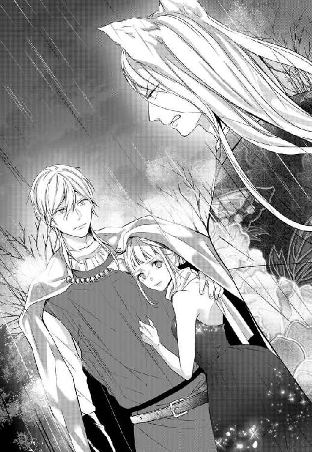
けれど、父は相も変わらずゆらりと尻尾を揺らしただけ。いったい何を考えているのか、さっぱり見当もつかない。ただ憎たらしいまでに普段通りの父のまま、口を開こうとする気配すらない。
怒りで顔を歪めたユアンを前に、ロジェが長いため息を漏らす。
「怒るだけ無駄じゃないかな。どうやら私と貴方は、彼に試されていたらしい」
「試されていた？ どういうことだ」
皆の困惑と猜疑に満ちた眼差しの中、ロジェのほうへと視線を向けた父が、その目を細める。
まるで、教え子の解答を待つ講師のようにじっと自分を見つめたままの族長の姿に、再び小さなため息を零したロジェがそっと肩をすくめた。
「どちらが娘にふさわしいのか、どちらに一族の未来を預けるのが正しいのか、貴方は私や彼だけではなく、娘自身にも揺さぶりをかけてずっと試していた。そうですよね？」
ロジェが静かに落とした声は、とてもよく響いた。辺り一帯にも、しゆん自身の中にも。
ゆっくりと瞬いた目に、幼い頃から見続けてきた父の顔が映る。
優しさや愛情など一度も感じたことがない。ひたすらに厳しくて、怖かった父の顔。
『戯言だ』と、きっと嗤い飛ばす。
『おまえの勝手な妄言だ』なんて言って鼻を鳴らす。
そんなしゆんの予想に反して、一度深く目を瞑った父は、琥珀色の瞳をまっすぐにユアンのほうへと向けた。
「結論は、既に娘自身が示している。申しわけないが、娘の件からはもう手を引いていただけるか」
「っ......冗談じゃない。私を試しただと？ 挙句、人間ごときに私が劣ると貴方は言うのか。この私がせっかく娘をもらってやると言っているのに、それを覆すと」
「なにか、誤解があるようだ」
ぽつりとそんな言葉を呟いて、ようやく父がその場から腰を上げる。
ゆっくりと手にされた黒一色の傘。
身体の大きな父は、立ち上がるとそれだけで威圧感がある。眼圧だけで兵士たちに道を開かせてしまった父が、全身の毛を逆立てて牙を剝いたユアンの前に立つ。わずかに身じろいだユアンを見下ろして、父はゆっくりと再びその口を開いた。
「自身の猜疑心に振り回されて、何者も信じることができない──力で他者を支配することしか能がない貴方ごときに我が娘はやれないと、私はそう言っている」
「っ」
腹の底から震えあがりそうなほど低く、よく通る声。
怯んだかのように一歩退いた王太子を見下ろして、父はゆらりと大きく尻尾を揺らした。
「私の妻は正常に発情期を迎えているが、それでも長子が産まれるまでには相当時間がかかった。短絡的で気ばかり強い愚娘ではあるが、どうしてもこれがいいという物好きもいる。貴方などにはもらっていただかなくて結構だ。父君に諸々の悪行を報告されたくなければ、速やかにお引き取り願おうか」
──知らなかった。
母のそんな話は、これまで一度も聞いたことがない。
結婚からだいぶ経って兄が産まれ、その３年後に自分たちが続いたのは知っている。けれど、それもただ単に政略結婚の相手であった母を、父が気に入らなかっただけなのだろうと、勝手に解釈していた。
「っ......失礼する！」
父親の名が出た瞬間にサッと顔色を変えたユアンが、勢いよく踵を返す。
純白の尻尾が揺れた拍子に、こちらまで届いた甘いかおり。そんなものに未だ律儀に反応を示してしまう身体が嫌で、ロジェの胸へと鼻を擦りつければ、子どもを宥めるかのように何度か背中を撫でられた。
厚い掌の感触はとても気持ちがよくて、しかも心地がいい。
胸いっぱいに吸い込んだにおい。強く抱きしめた身体を、彼が片方の腕で同じように抱き返してくれる。いろいろなものが一気に溢れて止まらなくなりそうになったところで、不意に父の低い声が耳を打った。
「酒が飲めないというのは全部、演技か」
わずかに身体を離してそちらを見やれば、しゆんが先ほど落とした短刀を拾い上げている父の姿が目に入った。
着物の裾を汚さないように丁寧にかがむその所作は、思わず見惚れるほどに美しい。
昔からそうだった。
新しくて豪華絢爛なものを好む父はそれでも、着物だけは一着一着をとても丁寧に大切に着続ける。
つとそんなことを思い出して、しゆんは目を瞬いた。
幼い頃からずっと、それは父が一族の文化に誇りを持っているからだと思っていた。
でも、その着物を縫っていたのは。父のために毎夜それを作っていたのは、誰だっただろうか。
「やたらと顔が赤くなるのは、生まれつきだよ」
「それを利用してわざわざ弱点を作り上げていた、となると父王も知っていたのだな」
「俺は息子である以前に、忠実な臣下だからね。守るべき主君の周りに餌を巻いておくのは、とても大事なことだ。先々何がかかるかわからない」
「......これだからおまえは信用ならん」
「その台詞はそのまま貴方に返すよ。守りたいもののためならなんだってするのは、貴方だって同じじゃないか」
全部演技だった？ 罠だった？
悪びれることなく自らの秘密を明かす彼に、不思議と怒りは湧かなかった。ロジェは素知らぬ顔で噓をつく。それが彼の悪いところであるのは確かだけれど、その噓にはいつも必ず彼なりにきちんとした理由があることくらいは、もうわかっている。
父の鋭い視線ものらくらと躱してしまう夫のその顔を半眼で眺めつつ、小さく息をついたところではたとあることを思い出して。
「おまえ、じゃあ」
今夜のあれは酔ったふりで、ちっとも眠ってなどいなかったのか。言いかけた言葉は、最後までは口にできなかった。
「しゆん」
続くはずだったしゆんのそれを遮るかのように、不意に呼ばれた名前。
すぐ近くから聞こえた父の声に驚いて後ろを振り返ると、今しがた拾ったばかりであろう短刀を、父がこちらへと差し出していた。
「持っていろ。何かあった時は迷わず、使え」
今のうちに一度拭いてくれたのか。父の手のうちにある短刀は、わずかに湿ってはいるものの、泥などはもうついてはいない。大きく見上げた先で、父は伏し目がちにこちらを見下ろしていた。
「今聞いた通りだ。その男のことをあまり信用しすぎるな。腹のうちは真っ黒を通り越して、ギトギトに汚れきっている。しかも、背も小さい」
「最後のそれは、関係ないだろ」
これまでで一番低く鋭いロジェの声に父は笑った。
薄く、でも確かにハッキリと。
「もしもおまえを裏切るようなことがあれば、その時は迷うな」
──それは、認めてくれたということだろうか。
ひどく婉曲でわかりづらいけれど、この先もしゆんが彼の隣にいることを父が完全に認めてくれたと、そう思ってもいいのだろうか。
「......しゆん」
呆れたようにしながらも、ロジェの声はとても優しい。ため息混じりの声に促されるようにして、短刀へと伸ばした手。
再び手のうちに握りしめたそれは水を含んだせいか、先ほど持った時よりもずしりと重たかった。
「細かい話は後日落ちついてから聞け。まずはその身体をどうにかしろ」
口にされた言葉の意味は、さすがにわかる。
こくりと素直に返した頷きに、一拍遅れて戸惑ったようなロジェの声が耳を打ったけれど、その時にはもう父は自分たちに背を向け歩きだしていた。
「父さま」
幼い頃から見続けてきた大きな背中。
「ありがとうございます！」
とっさに口にした言葉が、いったい何に対してのものだったのかはよくわからない。
ただ、こみ上げた感情に推されるようにして、叫んだ。娘のそんな言葉に、ちらりとこちらへ一暼をくれた父は、わずかに目を細めてもう一度だけ口を開いた。
「全て一族の未来を考えてのことだ。おまえに感謝されるいわれはない」
雨音に混じって届く、聞き慣れた声。
笑えるほどにいつも通りな、ぴしゃりとした返答。
「本当に素直じゃないな」
呆れたように頰を緩めたロジェにつられるようにして、しゆんもまた頰を緩める。
正直なところ、一気にいろいろなことが起こりすぎて、まだ頭が追いついていない。知りたいことも、確かめたいこともたくさんあるけれど、今はもう上手く考えられなかった。
ホッとしたのと同時に全身から力抜けて、ひどい熱が戻ってくる。元より気力と怒りだけでどうにか抑えていたようなもの。戻ってきた感覚は、一瞬にして全身を蝕んだ。
「しゆん？ おい、しゆん!?」
靄がかかったかのようにロジェの声が遠くに聞こえる。身体中の毛がざわついて、呼吸が苦しい。
どうにかまだ理性が残っているうちに、と。身体を支えてくれている彼の首元に寄せた顔。
柔らかな亜麻色の髪が鼻先をくすぐる。どこか清潔な感じのするいつもの彼のにおいに、少しだけ雨の香りが混ざっている。
「ロジェ──......」
大好きなそのにおいに顔を埋めながら、囁いた言葉。朦朧とした頭でどうにか紡いだその先の言葉は、よく覚えていない。
ただ零れ落ちんばかりに、大きく見開かれた目。束の間、時が止まったかのように動きを止めた彼が、次の瞬間首まで真っ赤に染め上げたのを見て。
──何か間違えたかもしれない。
そんなことを思ったのが、意識が途切れる前のしゆんの最後の記憶だった。
理性のようなものが戻ってきたのは、たぶん移動中のことだった。
ぼんやりとした頭で、それでも温かい腕に抱え上げられていることだけは、はっきりとわかった。身長は決して高くないし、ごつごつとした筋肉がついているわけでもない。それでもロジェの腕の中はとても安定感があって、居心地がいい。
誰かと話しながら歩いているのか。
重い瞼をこじ開ければ、彼の横顔が目に飛び込んできた。
人間らしい小さな丸い耳にかかる、亜麻色の髪。酒の名残だろうか。こうして横から見ると、いつもよりも色っぽく見えるその顔。横を向いているせいではっきりと浮かび上がった首の血管が、ひどく煽情的に見えて腰の辺りがざわりと震える。
誰か別の人へ向けられてしまっている瞳をこちらへと向けたくてその首へと手を伸ばす。本能の赴くままにそこへ唇を寄せれば、とたんびくりと彼が身体を震わせた。
「しゆん、ちょっ......」
周囲に誰がいるだとか、ここがどこであるかだとか。そんなことは今まるで念頭になかった。
大好きな青い瞳が、まっすぐに自分へと向けられる。
太い首に腕を絡めて何度も口づけを落とせば、それに応えるかのように甘いにおいが強くなる。それがただ嬉しくて、この人が自分のものだということを確かめたくてたまらなくて。
「ロジェ、好き、大好き」
何を考えるでもなく繰り返した言葉。舌を這わせ、何度もやわやわと嚙みついた首には、アッという間に赤い痕がいくつも散った。
短い会話が頭上で聞こえて、静かに扉が閉じられるような音が耳を打つ。
さきほどまで周囲にあった喧騒が全て消えうせて、つと顔を上げれば、ひどい劣情を灯した青い瞳と視線がぶつかった。
獰猛なまでの欲を孕んだ獣みたいな目。嚙みつくような激しい口づけを、しゆんは手を伸ばして受け入れた。
「っは、んッ......っ、んぅ」
奥深くまで差しこまれた舌が口内をいっぱいに埋め尽くして、思うままに蹂躙する。優しさも余裕も一切感じられない動き。けれど今はそれが心地よくて、絡みつく舌の感触がただ気持ちよくて。もっともっととねだるように、しゆんも夢中になって彼の舌を求めた。
「んっ、......んん、っん、はっ、ぁ」
呼吸を整える間さえなく続けられる深い口づけに、飲みきれなかった唾液が溢れて、口の端を伝う。
縺れ合うようにして、寝台の上に押しつけられた身体。
柔らかな布の感触を背に感じると同時に、常になく性急な動きでドレスの裾がたくし上げられた。水を含んで張りついたそれが肌から離れるととたんに空気がひやりと感じられて、今はそれがとても心地良い。
痺れるような余韻を残して離れた唇と唇の間に、混ざり合った唾液が垂れる。
「やっ、あッ......あッ」
間髪いれず首筋へと埋められた顔。もたらされる甘い刺激に、すすり泣きのような声が自然と口から零れた。
「っはぁ......だめだ。すごいにおい」
「ッ、ぁ──......っ！」
押し殺したようなうめき声が首筋をくすぐって、不意に剝き出しの秘裂に何かが触れた。疼いて疼いて仕方のなかった場所をずるりとなぞられて、瞼の裏が白く染まる。
「っ......すごいな。どんどん溢れてきて、飲み込まれそう」
これ以上ないほどぐずぐずに蕩けたその場所に触れた、硬い感触。熱を帯びて張り詰めたそれがいったい何であるかは、回らない頭でもすぐに悟れた。
「やっ、ぁ、ぁっ、あッ」
大きく尖った先端で蕾を押しつぶすかのように捏ねられて、太い幹の部分で襞の間をずるずると擦られて、腰が浮く。
「気持ちいい？ しゆん」
熱っぽく問う声。こちらを覗き込む瞳の鋭さに、甘い期待からぞくぞく背筋が震える。
気持ちがいい。
でも、足りない。こんなのじゃ足りない。
全部、埋めてほしい。一番奥まで満たして、もっと気持ちよくしてほしい。
手を伸ばして触れた、太い首。汗ばんだ肌をなぞる指先に、やわらかい髪の毛が触れる。いつだって目で追っていた。手を伸ばして触れてみたいと、そう思っていた尻尾のような襟足の毛。
「ロジェ、もう欲しい......っ、おまえが欲しい」
本能の求めるまま口にした言葉に、ふっと荒い吐息が落ちて。
「っぁ、──......ッ！」
大量の蜜を溢れさせる入り口を、ぐっと押し広げた熱い感触。
奪うように奥の奥までを一息に満たされて、叫んだ声はまともな言葉にはならなかった。
「ッは、ぁ......あッ、や、ぁ、待って......っ、ロジェ」
絶頂を迎えて収縮するその中を遠慮なく抉られて、悲鳴のような声が漏れる。そんなしゆんを見下ろしてわずかに目を細めた彼はけれど、妻のその懇願をあっさりと無視した。
片脚を抱えられ、より深く腰を叩きつけられて、あふれ出た蜜が内腿を濡らす。
「はっ......っ、しゆん、しゆん......ッ」
「あッ、あッ、あぁッ......ッ」
まるで獣みたいだ、と。
快楽に染まった頭の片隅で、そんなことを思う。
頭がおかしくなりそうなほど甘いにおいがたちこめ、互いの腰がぶつかり合うひどく淫らな音が響くその空間で。中途半端に衣服をはだけたまま、前戯もなしに下半身を繫げている。
言葉らしい言葉といえば、せいぜい互いの名前を呼ぶだけ。
それでも、抱え上げた足に時折落とされる唇。汗で張りついた髪をそっと払っていってくれる指。そんな些細な仕草がどうしようもなく嬉しくて、愛おしい。
「ロジェ......っ」
触れたい、と伸ばした手に彼の指が絡む。覆いかぶさるようにして、再び降ってきた口づけはとても深くて、とびきり甘かった。
ひたすらに舌を擦り合わせては、吐息の合間で情欲にまみれた視線を交わし合って。
ずるずると膣内を蹂躙する陰茎が敏感な部分を擦るたび、表面に浮かんだ血管の凸凹すら感じ取りたいといわんばかりに、中がぎゅうぎゅうと彼のそれに食いつく。混ざり合ってひとつになった部分はもうただ気持ちがよくて、何も考えられなかった。
「っ......ん。あぁ、もう、だめだ。俺も、一回出したい」
「やっ、ん、んッ、んっん」
苦しげな吐息とともに、ぐっと強く嚙みつかれた首。びくりと跳ねた腰を押さえつけるように激しく揺さぶられて、強すぎる快楽にぼろぼろと涙が零れる。
「しゆん......、中で、出すよ」
耳へと唇を寄せて、囁かれた言葉。ぐっと指先で涙を拭われて再び彼のほうを見上げれば、明確な意図を持った強い視線に絡めとられて、息が詰まった。
いつもなら、わざわざ宣言なんてしてこない。そんな彼が切羽詰った顔で、それでも確かめるように宣言をしてきた理由は、鈍りきった頭でもさすがに悟れる。
「俺の種で孕んで......？」
縋るような、乞い求めるような声。
畳み掛けるように、はっきりと口にされてヒクンッと収縮した膣の奥を、ぐりぐりと彼が張り出た先端で捏ねる。どちらの体液だかもわからない汁でまみれた結合部へと目を向ければ、ただでさえひどかった火照りがまたいっそうひどくなった。
──本当に、身ごもってしまうかもしれない。
それどころか、既にもう混ざり合った体液が実を結んでいるかもしれない。
そんなことを思えば、背徳感にも似た興奮でぶるりと身体が震えた。
腕を回して伸び上がるように、彼の首を深く嚙み返す。自分たちとは違う丸い耳。同種の雄たちより薄い、嗅ぎなれた彼の大好きなにおい。
「だ、して。全部、中に出して、ロジェ」
決して大きな声ではない。発情期特有の甲高い声で漏らしたそんな言葉に、一瞬彼が大きく息を詰める気配がして苦しいほどに強く身を抱きしめられた。
「──......ッ、あ、っは、ぁ、やッ、んん──......ッ」
雄を求めてうごめく膣壁をいっぱいに押し広げては、溢れる蜜をかき出すように引き抜かれる太い肉茎。小刻みに身体をゆすられて、普段以上に敏感になった首を食まれて、派手に視界が弾け飛ぶ。
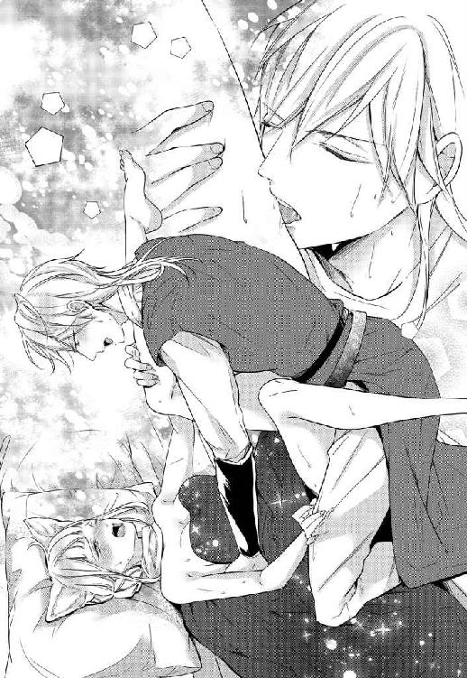
今までで一番深い絶頂の最中、獣のようなうめき声が耳を打つ。
最奥を叩いた熱い奔流に、全身がまたぶるると激しく震えた。
身も心も満たされた幸せで、身体中が痺れている。それでも、中を埋めていた楔がずるりと引き抜かれると、喪失感にも似た飢えがまたすぐに戻ってきた。
「やっ......ロジェ」
行かないで。この状態で、もう一人にしないで。
追いすがるように反射的に伸ばした手は、そのまま摑まれて引き寄せられた。
ぱちぱちと瞬いた目に、上着を脱ぎ去った彼の裸体が映る。汗ばんだ首筋を拭う大きな手。引き締まったその身体が、しなやかな野生の獣を思わせて、なんだかひどく艶かしい。
「ごめん、先に脱がしてあげるべきだったのに、余裕がなかった。また今度どこかで着てくれる？」
「えっ、あっ」
剝き出しの肩や鎖骨に、何度も落とされる唇。
不慣れな様子で、それでも丁寧にドレスの紐を解いてくれていた彼が、もう一度だけこちらを見つめてふっと頰を緩める。
「ずっと、こういう姿の時のしゆんには触れられなかったから。なんだかさ、本当に俺の奥さんになってくれたんだなと思うと、嬉しいんだ」
しゆんがあの時、当時のことを思い出していたように、彼もまた同じようなことを思っていた。それだけのことが、なんだか無性に嬉しい。
「それとさ、しゆん」
「え？ あッ......、っや、ん」
何かを言いかけたところで、痛くないようにドレスが引き抜かれた。湿気を帯びて張りついていたそれが無くなると、とたん身体が軽くなる。熱を帯びた身体が空気に触れて、それを心地よいと感じられたのは一瞬だった。
顕になった乳房。先ほどから高ぶり続けたまま触れられることのなかった乳首を指の腹で押しつぶされて、思わず身体が震える。そのまま腰を強く引き寄せられて、下腹に押しつけられた熱い塊にしゆんはゆっくりと目を瞬いた。
ガチガチに張りつめて、互いの下腹部をべたりと汚したそれは、確かに先ほどまで自分の中を目一杯満たしてものだ。けれど、まるで何事もなかったかのように存在を主張して熱を滾らせている、今の状況が理解できない。
「......待て、ロジェ、おまえ何か......ッ」
言われてみれば最初からそうだ。
何故ロジェが自分のにおいを甘いと感じるのだろう。自分は何故、いつも以上にひどく彼のにおいに煽られているのだろう。いくらしゆんが発情期だとしても、人間である彼がその影響を受けるなんてことはないはずなのに。
「あッ、や、ちょっ、ぁ、あっ──......」
聞きたいことはいろいろとあったのに、結局聞くことはできなかった。ぐっと腰を抱えられて、乗せられた大腿の上。今しがた自身で吐き出したばかりの白濁を再び押し込むようにして穿たれた楔に、失った刺激を求め疼いていた身体が大きく跳ねる。
強く抱き寄せられてされるがままに身を任せれば、ふっと熱い吐息が顕になった肌の上をくすぐった。
「あの王太子とのこと、俺怒ってないわけじゃないんだ。ちょっと、加減を間違えた気がするんだけど......つき合ってくれるよね」
加減を間違えた？ つき合う？
「待っ......一緒に弄っちゃ......っ、や、あぁ......っ」
立て続けに耳を打った剣呑な言葉たち。
結局しゆんがその意味を理解したのは、数日後。昼も夜もわからないままにむつみ合っては、意識を失うように眠りにつく。そんな日々をひたらすらに繰り返して発情期を終えた後のことだった。
九、とんだ狸のお嫁さま
「おはよう、しゆん。身体の調子は......、っ」
呑気なその声を最後まで聞くことなく、振り上げた枕。無駄にすばしっこいのは相変わらず。でも、こちらだってかれこれ長いつき合いだ。
「った！」
反射的に彼がよけるだろうなと思った方向へ、もう片方の手で投げた枕は見事バシッと豪快な音を立てて、頭に命中した。こういう時はだいたい何気なしに声が出てしまうだけで、たぶん言うほどには痛くない。
そこまで痛いようなことはできないのが情けないけれど、しゆんは今本気で怒っている。そろそろとこちらを覗きこむ青い瞳をまっすぐに睨みつければ、ロジェは困ったようにくしゃりと髪を搔き上げた。
「ごめんって。無理をさせすぎちゃったのは、本当に悪いと」
「そっちじゃない」
「しばらくの間、必要以上に距離を置いていたこと？ あれも申しわけなかったけど、あぁでもしないとしゆんは隠し事が下手だから」
「そっちでもない」
「うん？」
怒っているのは、そういうことにではない。当たらなかったほうの枕の端をギュッと摑めば、自然と唇がわななく。
「おまえが、熱を出していたと聞いた。過剰に効きすぎた媚薬のせいじゃないかって」
彼が口にしたのは、しゆんがりんの身代わりとして初めに嫁いできた時に、父から持たされたあの媚薬だ。
しゆんが馬車での一件のあと、ロジェに渡していたもの。
なんでそんなものを口にしたのか、なんてことは聞かなくたってわかる。
ユアンの言っていた通りだ。発情期にある自分たちの相手をまともにするには、きっと同じだけの熱を返せる相手でなければ難しい。
「......あぁ、誰かから聞いちゃったか。参ったな」
これ以上の誤魔化しはきかないと踏んだのか。ため息混じりに吐き出された言葉に、胸が苦しくなる。
「おいで、しゆん」
寝台に上がってきたロジェがこちらへと伸ばした腕。その言葉で差し出された手を払ったのは、たぶんこれが初めてだった。ぱしっと軽快な音がして、彼が驚いたように目を見開く。
「聞いちゃったか、じゃない。こればかりは誤魔化されてやれない。あれば獣人用に作られたものだと言ったはずだ。大事に至っていたらどうするつもりだった？ おまえの身体に負担をかけるくらいなら、わらわはもう来年からこの時期はおまえには会わない」
「しゆん」
「っ、触るな！ おまえはいつもそうだ。話し合おうなんて言っても結局は、全部一人で背負いこんで解決して、こうやって最後に甘やかせば誤魔化せると思っている」
「しーゆん」
ずるい。
振り払っても再び伸びてきた手が、いともたやすくしゆんの身体を捕らえて、強引に引き寄せる。いつも通り着物を纏った腕の中はとても温かくて優しいのに、ドンッと叩いた胸はビクともしない。
本気で、怒っているのに。
その温もりに触れるだけでたやすくほだされそうになってしまう自分を振り払って、もう一度強く叩いた胸。
「だから、触るな！ わらわは怒っているのだぞ！ おまえは躊躇いなく自分を囮にするし、犠牲にする。こんなこと続けていつか何かあるくらいなら」
「聞いて、しゆん」
澄んだ空のような瞳を、まっすぐに睨みつけて口にした言葉。その先を遮るかのように落とされた声は、先ほどまでとは打って変わってとても静かで、揺らぎがない。
本当にずるい、としゆんは顔を歪めた。
そんな短い言葉。声色をほんの少し変えるだけで、ロジェは自分を黙らせることができる。いつだって自分は気がついたら彼のペースに乗せられているだけだ。
答えを返すのもなんだか癪で、しかめっ面を見られるのも嫌で。目の前の厚い胸に額を押しつければ、ふわりと甘い残り香が鼻をかすめた。あれから数日経っても消えない自分のにおい。たぶん、彼にはもうわからないそのにおい。
「黙っていてごめん。心配をかけたくなかったんだけど、結果的によけいな心配をかけてしまったのも悪かった。申しわけない」
「ん......」
抱きしめられたまま、わしわしと指の腹で尻尾を撫でられて。くすぐったいような、心地よいようなその刺激に思わず顔を上げれば、今度は耳を撫でられた。ちょうどいい加減で毛を梳かれて、根本を撫でられて──自然と身体から力が抜けてしまう。
恥ずかしいと思うのに、そんな自分を見下ろす彼の目がこれ以上ないほどに優しいものだから、どうしたら良いのかわからなくなる。
「でもね、俺は諦めたくないんだ。人間だからわからないとか、応えられないとか──そんなふうにして諦めて我慢してもらうのは簡単なんだけどさ。そういうふうには逃げたくない」
「だが、おまえの身体に負担がかかるのは」
「身体への負担ならお互いさまだよ。中途半端にされて、一人で耐えるのはよけいに辛いらしいって聞いた。あちこち搔き毟っちゃったり、熱が出たり......無意識に違う相手を引き込んじゃったりすることもあるって」
確かに、そうだ。獣人同士でも発情期の訪れがないものは一定数存在するし、訪れがあってもどれほど強く反応が出るかには個人差がある。それが原因での離縁は、悲しいかな毎冬のように耳にするものだ。けれど、あまり皆語りたがらないその事実を何故ロジェが知っているのか。
ゆっくりと目を瞬けば、彼はしゆんの心のうちを悟ったかのように肩をすくめた。
「ジェイドの母親を、覚えている？」
ジェイド。唐突に口にされた名前には、確かに覚えがあった。
血まみれになって自分たちへと牙を剝いていた女性が腕に抱いていた、人間との子ども。
「あの......人間の父親との間に生まれた子の？ あの時の母親か」
「うん。こういうことはしゆんに聞いてもはぐらかされそうだからね、彼女たち夫婦に聞いた」
「彼女たち夫婦って......」
「アメリア・オルグレンの別荘を間借りして三人であそこに暮らしているんだ。他にも四組ほど住んでいて、半獣人の孤児たちもたくさん暮らしている」
「アメリア・オルグレンの別荘」
オウム返しに呟いてハッと息を呑む。ロジェが一週間通い続けていたらしい場所だ。
「ん......アメリア嬢自身もね、子どもがいるんだ。狐族の男性との間に。正式な結婚は認めてもらえなかったけれど、あの場所で家族四人暮らしている。彼らの現状や問題を報告に上げるよう言われていたのもあるし、俺自身知りたいことが山ほどあったから、いろいろと話を聞かせてもらっていた」
「じゃあ、おまえのあの甘いにおいは」
「におい？ あぁ、あれかな。あそこへ行くと子どもたちがまとわりついて離れてくれないから、それかな」
その光景なら、たやすく想像がつく。頭や肩にじゃれつかれて困った顔をしながらも、きっとロジェは子どもたちを振りほどきはしないし、慌てる親にも笑ってみせる。郷でもそうだった。子どもたちに好かれるのは昔からだ。
「しゆん？」
長いため息と共に、再び胸に埋めた顔。
「一瞬でもおまえを疑った自分が恥ずかしい」
小さく零した言葉は、きちんと彼にも届いたらしい。ぎゅっと強くしゆんの身体を引き寄せて肩に顔をのせてきた、彼の表情はここからでは見えない。
「弁明もできたのに、試すようなことを言ったのは俺だよ。狭量でごめん。俺もさ、あの時は本当に二人の仲を疑ったんだ。あの王太子の意図なんてわかりきっていたのに、頭が真っ白になって君の気持ちがよくわからなくなった」
あの時。言われたそれが、いつを指すのかはあまりに明白で。上手くまとまらない弁明の代わりに強くその身体を抱きしめ返せば、ふっと笑う気配がしてゆっくりと尻尾を撫でられた。
「翌日にあそこへ行ったのは、きちんと知りたかったからだ。頭に血が上っていて冷静になりたかったのも確かなんだけど、それ以上に〝こんな身体に生まれなきゃ良かった〟なんて言葉をしゆんに言わせてしまった自分が情けなくて、許せなくてさ」
そっとすくめられた肩。大切なものを慈しむかのように、尻尾を撫でていく手はどこまでも優しくて、気持ちがいい。
「知らない、わからない、一生分かり合えない。そうやって投げ出してしゆんが一人で苦しんでいるのから目を逸らすのも嫌だし、ただ同族だからなんて理由で他の男に取られるのはもっと嫌だった。今はもっとそうかな。俺以外の男に、君のあんな姿は絶対に見せられない」
「あんな、って」
言われたそれに断片的な記憶が蘇って、みるみる頰が熱くなる。
これまで、ひたすら部屋に籠もって一人耐えていた時のような、後味の悪い虚脱感やダラダラと続く熱のようなものはない。
たぶん、その時期を抜けたのだっていつもよりだいぶ早いはずだし、筋肉痛のようなものを除けば身体の調子はすこぶるいい。肌なんてむしろ、普段以上につやを増しているくらいだ。
けれど、その最中のことはいっそ夢であってほしいと願うくらい、ひどい在り様だった。あれを、素のままの彼に見られていたと思うと、本気で腹を切りたくなる。
「少しだけ、良かったと思う......おまえが、まともな状態じゃなくて」
思わずごにょごにょと漏らした言葉は、彼の耳にも届いたらしい。
顔を真っ赤に染めた妻の姿を見下ろして、ロジェは面白そうに笑った。
「俺も全部を覚えているわけじゃないけれど──可愛かったし、嬉しかったよ。全身で欲してもらえているんだなって伝わってきたし、あの時はしゆんのいう〝におい〟ってやつもわかったから。俺にも感じ取れるんだなと思ったら、本当に嬉しかった」
「......わらわだって」
嬉しくなかったわけじゃない。
身も心も求めている人に、同じだけの熱量でそれを返してもらえるはやっぱり嬉しいし、幸せだ。
「でも、心配なのもわかってほしい。おまえに何かあったらと思うと、胃が縮む」
「うん」
とても短くて、ハッとするほどに優しい声。
夫婦になった時よりも少しだけ伸びた髪をくるくると弄ぶ指。
「でも、しゆんにもわかってほしい。俺は最初から、しゆんが獣人だってことも、自分たちの一族を心底愛しているんだってことも知った上で、君を好きになったんだ。身体の変化だとかも含めて全部さ、ちゃんと向き合いたい。種族の差なんて言葉で、安易に逃げたくはない」
瞳に映るその顔は、幼い頃より遥かに大人びたけれど、根本的な部分は昔と変わりがない。
穏やかに、そしてまっすぐに自分を見つめる眼差しも。
こうして躊躇いなく自分たちへと伸ばしてくれた、手の温かさも。
「わかるよね。君が俺を心配してくれるように、俺だって可愛い奥さんが苦しんでいる時に、ちゃんと応えてやれないのはつらいんだ。男として情けない」
変わらないな、と思う。
あれから時を経ていろいろなことがあったし、周囲は目まぐるしく変化した。それでも、やっぱりロジェはロジェのままで──変わらず、自分はこの人が好きだと思う。
「なら、こうしようか。この先、医術師たちとの話し合いには必ずわらわも立ち会って、全面的に協力する。その代わり、今度は何か反動があっても隠したりしないと約束してほしい」
「わかった。約束する」
──これも、結局はロジェのペースに乗せられただけ、なんだろうな。
そんなことを思えば、自然と吐息が漏れる。
心底嬉しそうに、頭を撫でてくるその顔がまた、なんだか少し憎たらしい。
「だが、それと囮云々の件は別。おまえのしていたこと全部は、まだ許していないからな」
せめてもの反撃とばかりに告げた言葉に、ぴくりと頭を撫でていたその手が止まった。
「え？」
「おまえが本当に殺されているんじゃないかと思った時は、本当に怖かったし、いつまでもラナウの町から帰ってこない時は何かあったのではと心配でたまらなかった。あれはどうせ、手紙を書くのが面倒だっただけだろう」
「え、いや、えっと......」
かれこれ長いつき合いだ。腹のうちは読み切れなくても、わかることはけっこう多い。
こちらからの連絡が途切れるととたん心配し始めるくせに、ロジェ自身がまめな連絡を寄越すことはまずない。昔からそう。いくら忙しくたって一文くらい書いて寄越す暇はあっただろうに、それをしなかったのはほぼ間違いなく彼の惰性によるものだ。机に向かうという作業をすぐにサボりたがるのは彼の悪いくせだ。
「......ごめん。以後は気をつけるから、許してよ」
誤魔化しはきかないと踏んだのか。しゆんの顔を覗き込んで、彼がそっと肩をすくめる。
とたん叱られた子どものようになったその人を見つめ返して、しゆんは再び口を開いた。
「この先しばらく、出されたものを全部食べるなら、許す」
「え」
「人参も、きのこも、豆類も、全部きちんと食べてくれるのなら許してもいい」
いつも彼がやるように、下からその顔を覗きこんでわずかに傾げた首。ゆっくりと何度か目を瞬いた彼が、わかりやすく盛大に顔を引き攣らせるのを見て、しゆんはたまらず口元を緩めた。
こんなやりとりも何度目だったろうか。きっと自分たちはこの先もこうやって何度も問題にぶつかっては、そのたびに話し合ったり喧嘩をしたりして、互いの落としどころを見つけていく。
それでいいのだと思う。
そうして夫婦として成長していく中で、少しでも周りを変えていけたなら、もうそれだけで──温かな体温と未だ残る甘い香りの中、しゆんは束の間まだ見ぬ未来に思いを馳せた。
「ねぇ、しゆん。せめて、一つだけにしない？」
まとわりついて許しを乞うてくる最愛の人のその姿を見つめて、小さく笑みを漏らしながら。
＊＊＊
「わざわざ......いらしてくださったのですか」
王城と外を繫ぐ大きな橋の上。見慣れた黒一色の傘を前に、しゆんは思わず目を瞬いた。
今しがた後にしてきた王城の前には、いくつも咲いた色とりどり傘。隣には、自分の手にしたものと同柄の少しだけ大きな傘が並んでいる。
再びロジェの城へと戻る出立の日にもやはり、雨がついてきた。
郷の城から王城までは、徒歩であればおよそ半日の道のりだ。冷え込みの激しいこの時期。しかもこんな雨の中を、わざわざ歩いてきたのだろうか。
こんな日には火鉢の前から梃子でも動かないほど寒がりな、この父が。
「気持ちの悪い荷物が届いてな。おまえにやろうと思って持ってきてやった。餞別だ」
「はぁ......」
素っ気ない言葉で父が差し出してきた、その『気持ちの悪い荷物』とやらは、丁寧に布でくるまれていて一見ではなんなのかわからない。
母のものだろう艶やかな紅白の布で包まれたそれは、受け取ってみれば見た目以上に軽く、しかも柔らかい。
「それからそこの狸小僧から先日もらったものの礼を言おうと思ってな。確かに受け取った。これで二度目だったはずだ。ありがとう」
『ありがとう』なんて言葉を口にしながらも、ぎらりと光った琥珀色の瞳。
「いいえ。今後ともよろしくお願いいたします、義父上」
誰もが怯みそうなほど恐ろしい父の視線をまっすぐに受けて隣に立つ夫は、にっこりと笑った。
にっこりと──空々しいほどに晴れやかなその笑みで。
「......本当に、何をしにきたんだろうか」
結局、諸々の弁明をするでもなく、謝罪のようなものがあるでもなく、それだけを言い残してさっさと踵を返してしまった。そんな父の背中を遠くに見送りながらすくめた肩に、ロジェがふっと笑う気配がした。
「釘を刺しに来たんでしょ、俺に。娘を大事にしろって」
「......わらわには父さまの考えが、さっぱり理解できない」
「人間が嫌いなんだよ、純粋に。だから、俺を殺して国を盗りたかったのも本当だし、こちらが我慢できなくなって先に手を出すのを待ってもいた。まぁ、俺を怒らせて本心を探りたかったのもあるんだろうけど」
そこまで言って、ロジェは笑った。心底楽しそうな屈託のない笑みで。
「残念ながらお義父上が考えているほど深くないんだよね。俺はただ、しゆんが他の何よりも大切だっただけ」
そんな顔で、唐突にそんなことを言わないでほしい。
真っ赤に染まっているだろう妻の顔を見下ろして、傾けた傘の隙間から彼が頭を撫でてくる。耳の間を撫でていく、いつもの優しい手。反応に困って、慌てて続けた言葉は、先程から気になっていたものだった。
「おまえも、父上に何か渡したのか？」
「あぁ......義兄上との契約書のことかな」
「兄さまとの契約書？」
「うん。義兄上とね、契約を交わしたんだ。両族間に何らかの契約違反が生じた場合、俺と義兄上が相互に責任を取るって契約。これでもう、お互い迂闊なことはできないよね」
「相互にって......おまえ、そんなものいつの間に」
「うん？ ほら、この間の夜会の時に内々に。妹が身体張っているんだから、命張りましょうよって笑顔でお願いしたら、すぐ頷いてくれたよ。良かったね。チョロ......優しい兄上で」
「ロジェ、それはたぶん脅」
「あと、そうだ。向こうは一人しかいない継承者で、こちらは俺だけじゃなんだからさ、フランツ兄さんにも連名をお願いしておいたんだ。あまりに目に余るから、そろそろ全部父上に報告していいかなって聞いてみたら、すぐに頷いてくれた。いい兄を持って俺は幸せだ」
「だからそれは脅迫......まぁ、もう良い」
半眼で見つめた夫の顔は、実に晴れやかだ。
この顔で脅された二人の姿の姿を思い浮かべれば、いっそ哀れみすら湧いてくる。
「そういえばこの間ツェザーリから聞いたんだが、栄助とりんが逃げた夜、国境の兵士らが二人をたまたま見逃したらしくてな。あの砦はおまえの管轄じゃ......」
見慣れた夫の顔を見つめて、つと思い出したこと。
この際だから、と疑問に思っていたそれを口にしてみれば、彼は思った通りに笑った。
のんびりと、とっても胡散臭いその顔で。
「あぁ、あれね。いや、間抜けな部下を持つと苦労するよね」
「そもそもあの気弱な栄助が、駆け落ちなんて大胆なことをするなんておかしいと思っていたんだが......ロジェ、もしかしておまえが栄助を誑かしたり、なんて」
「やだなぁ、濡れ衣だよ。俺が彼にそんなことを言うはずがないじゃないか」
「彼に、と言ったな。では、もしかしてりんに」
「......」
「ロジェ？」
「......」
「ロジェ」
じろり、と睨み上げた先。
あからさまに視線を逸らしながら小さく吐き出された声は、きちんとしゆんの耳に届いた。
「......賭けをさ、してみたんだ。勝率の薄い賭け」
「賭け？ それは、どういう......」
「あー......いやぁ、今日もいい天気だね、しゆん。最高の出立日和だ」
「おい、はぐらかすな！ いい天気どころか、思いっきり雨降りだろうが」
再びこちらを見下ろしてにこにこと爽やかに笑った。ロジェのそんな姿に、思わず強張っていた肩から力が抜ける。
よくわからないが、きっとこの件に関してロジェは、これ以上何も答えてはくれないだろう。昔からそう。変なところで頑固なのも、まったく変わってはいない。
──ホントにもう、とんだ狸だな。
内心そんな言葉を吐き出せば、自然と蘇る記憶に眦が下がる。
『狸は愛妻家だし、子煩悩なんだよ』
周囲に『狸』だなんて揶揄されるたび、そんなことを言っていた少年。
尻尾みたいに伸びた襟足の毛が特徴的な、ちょっとずるくて、とびきり優しいしゆんの初恋の王子さま。
そんな彼はしゆんが思っていた以上に、とんだ狸だったらしい。
知ったところでもう逃れようもないし、逃れる気もないのだけれど。
自分はもうとっくに、そんな狸のお嫁さんなのだから。
なんとなく、並んで歩く夫との間に心地のよい沈黙が落ちる。
わずかに視線を上げれば、彼の傘を伝って落ちる雨の筋が目に留まった。
揃いの傘に、郷の夫婦たちのような着物。幼い頃から、ずっと夢見ていた光景。
「わらわは、本当に雨女だな」
見慣れた馬車へと並んで足を向けながら、ふとそんな言葉が口から零れた。
昔からそう言われてはきたが、それにしてもロジェとすごす時間にはいつだって雨がついてまわっていた気がする。こと、何か大事な場面では必ず。
ちらりと隣を窺えば、赤い蛇の目傘をわずかに傾けて、彼は空を見上げていた。
何かを思い出すかのように、懐かしむかのように。
「そうだね。......だから、俺は雨が好きだった」
一瞬、はたと止めてしまった足。
「しゆん？ どうかした？」
ふわりとこちらを振り返ったロジェが、当然のように手を差し出す。
「早く帰ろう、しゆん。城へ戻ったら皆に話したいこともあるし、ジェイドのところへ今度はしゆんも連れて行くって約束しているんだ」
「っ......ロジェ」
ふっと唐突に胸にこみ上げた強い感情に推されるようにして、しゆんは目の前の夫へと飛びついた。
「え、ちょっ？」
赤い蛇の目傘がぽんと空に舞って。
──雨ばかりも悪くない、なんて。
そんなことを、しゆんは初めて思った。
どんな時でも自分をきちんと受け止めてくれる彼の、呆れ切ったような声を耳にしながら。
父から渡された『気持ちの悪い荷物』という名の餞別。
温かそうな冬用の羽織と一緒に添えられていた、宛名も差出人もない手紙。そこに綴られていた妹の愚痴と幸せに満ちた生活を追って、泣き出してしまったしゆんの身を、ロジュはただ黙って抱きしめ続けてくれた。しゆんの腫れあがった瞼を見て、出迎えた城の使用人たちから、しばらくロジェが冷遇を受ける羽目になったことは、後々の笑い話である。
終章
曇り一つなく晴れ渡った空に響く明るい声。
「わぁ、美味しそう！」
「美味しそう美味しそう！」
綺麗に着飾った人々が列をなし、静かに時を待つ中。突如静寂を破って響いたそれに、子どもたちの父親は盛大に吹き出し、その横に並んだ母親は顔を真っ赤に染めて身を縮めた。
「おやめ、バート、イアン！ ロジェも、笑っている場合か」
皆の目がこちらを向くと同時に、くすくすとした笑い声が辺りに広がる。
それもそのはず。幼い子どもたちが美味しそうと指をさしたのは、はちみつ色の城壁を彩る純白の花飾りだ。どうやら子どもたちにはそれが、城でよく出される菓子と似て見えるらしい。
「はははっ、こんな子どもに大人しく待てっていうほうが無理だよ。仕方ない。朝を食べたきりじゃ、お腹だってすくよな」
「お腹すいた！」
「すいたー！」
のんびりとした彼の声に、子どもたちの正直すぎる言葉が続いて、周りの笑いがいっそう大きくなる。こんな光景も慣れたといえば慣れたが、今は困る。今日は大切な日なのだ。
「仕方ないって、おまえな。だいたいバートもイアンももう降りなさい！ 父さまに登っちゃいけませんと何度言えば......」
小さな耳と尻尾。二歳になる双子の子どもたちはまさにやんちゃ盛りで、しかも父親の肩に乗るのが大好きだ。ロジェ曰く『本気で重いし、くすぐったい』らしいが、それでも彼らはよく父親によじ登る。
「しゆん」
せっかく着せた一張羅を皺にされてはことだと、子どもたちへ伸ばした手は、やんわりと摑まれて止められた。
「だめだよ。何かあったらどうするの」
相変わらず優しいその声にはけれど、有無を言わせぬ強さがある。
よく似た空色の瞳が六つこちらを向いて、思わず笑いが漏れそうになったところで、シャンシャンと澄んだ鈴の音が辺りに鳴り響いた。
大きな赤い番傘の下。
ひどく緊張した面持ちで歩いてくる二人へと目を留めて、しゆんは束の間その眩さに目を細めた。
かつて、自分たちも着た衣裳。
あの時、自分の後ろで番傘を差してくれていた侍女が、今日は純白の着物を身に纏う花嫁だ。
長身で体格も大きなツェザーリの横に並ぶと、見慣れた侍女がやけに小さく見える。
──あぁ、もう正真正銘侍女ではないのか。
そんなことを思えば、なんだか複雑な感情が胸のうちにこみ上げた。
スティアの王太子の一件があった後、元々自分が幼少期から監視役としてしゆんに付けられていたことや、ロジェとの婚姻に際して父から命じられたことの諸々。その後ロジェに手を貸す形で立ち回っていた経緯などを全て明かして、職を辞することを申し入れてきた彼女を引きとめたのは、他でもないしゆんだった。
あれから二年と少し。よく見知った顔を伴って二度目の辞職を申し出てきた彼女のそれを、今度は夫と二人手放しで祝福した。
薄く化粧を施し大きな綿帽子の下で伏し目がちにしている彼女と、その横に粛々と並んだ彼がどれだけの紆余曲折を経て今に至るかはよく知っている。
それだけに感動もひとしおだが、やはり本音を言うと少し寂しくもある。
「寂しい？」
まるで心を見透かしたかのように絶妙なタイミングで横からかけられた声。そっと腰を引き寄せられて見上げた顔を前に、自然と頰が緩んだ。
自分たちもあれからいろいろなことがあったように思うけれど、こちらを見下ろすその瞳の優しさだけはやはり出会った頃から変わりがない。
「少しな。でも......」
「秋にはまた、賑やかになるからね」
しゆんが今まさに言いかけた言葉の先を口にして悪戯っぽく笑った──そんな夫の横。
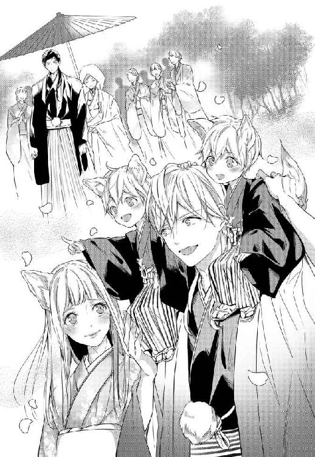
いつの間にか父親の肩から降りて、すまし顔で並ぶ双子の姿が目に入る。その後ろでそわそわと揺れている二つの尻尾へと目を移して、今度こそしゆんは抑えきれない笑みを零した。
『今年の秋には一度子どもたちを連れてうかがいます』
思い出したように時折この城へと届く宛名も差出人もない手紙。どうしてか毎度夫が『拾って』くるそこに書かれていた文字を思い出して、見上げた空。
腹の虫が大きな二重奏をそこに奏でて、再び吹き出した夫の横で、しゆんが先ほど以上に顔を真っ赤に染めることとなったのは、それから数分後のことだった。
あとがき
初めましての方も、そうでない方も、こんにちは。真宮奏と申します。
このたびは『狐姫の身代わり婚〜初恋王子はとんだケダモノ!?〜』をお手に取ってくださり、ありがとうございます。ありがたいことに、あとがきページをたくさん頂けましたので、たまには作品の話でもしようと思います。口下手なので、緊張します......！
さて、本作は元々小説投稿サイト「ムーンライトノベルズ」にて、『人×人外ラブ企画』という企画が行われた際に書いた３万字程度の短編でした。時期がちょうど冬で、野生の狐を帰りに見かけたのがきっかけだったのをよく覚えています。新雪の上を軽々走って行く姿がとても綺麗で可愛くて、狐もいいなぁと思ったのが始まりでした（ちなみに、その時企画用に書きかけていたお話が『人魚王子拾っちゃいました』という仮タイトルのゲテモノ臭漂うものだったので、今となってはあの時の狐に感謝しかありません......！）
そんなこんなで「どうせならベタな感じの狐のお姫さまを書きたいな」「身代わりものでも、ちょっと王道と違う展開にしてみよう」と思いつくままに書き進めて出来たのが、このお話でした。当然プロットも細かなキャラ設定も何もなかったので、出版のお声をかけていただいた時には、驚き半分・不安が半分という状態でした。それでも、自作の中でも思い入れ深いカップルでしたので、書かせていただけて本当に嬉しかったです。
実は本作のヒーローであるロジェは、私の祖父母家の倉庫に居着いた本物の狸がモデルでした。祖父がクロと名付けた狸だったのですが、これがもう本当にやる気のないやつで......。呆れるほど怠け者なくせに、祖父が餌を持って行く時に限ってちゃっかり一番乗りで待っているような狸でした。そんな怠け者のクロが、ある日奥さん狸を連れてきてからは激変！ 「俺の嫁子どもは俺が守る！」的なスパダリオーラ全開で、せっせと嫁子どもの世話を焼く姿が本当に可愛くて、幼ながらにとても印象深かったです。
凛とした狐のお姫さまを考えた時に、相手としてすぐにクロを思い出したので、だいぶ色をつけてヒーローにしてあげました。高いところが好きで（クロは登ったらなかなか降りられないバカなやつでしたが）、ちゃっかりしていて、時々腹立たしいくらいあざといのに、奥さんにはべったりで──いろいろ思い出しながら書きましたが、意外と男前になった気がします！（気のせいかもしれません）
展開を改めて考えるに当たって、どちらかが媚薬を飲まされちゃって一線を越えざるを得なくなるとか、お互いの気持ちを勘違いしたまますれ違っちゃうとか──そういう展開も考えてはみたのですが、いかんせん二人とも頑固で。何が起きてもブレることなく相手と向き合おうとしてしまうので、全然こじれてくれず......。四苦八苦した末に、結局この二人らしい形に落ちつきました。王道の身代わりものとはちょっと違う感じですが、お互いに欠点を持ちつつも、芯の通った似合いの夫婦になっていてくれたらなと思います。
また今回は「せっかくだからやりたかったことをやってみよう！」ということで、ずっと書いてみたいなと思っていた『脇役のカップル』というものも登場させてみました。メインの二人が幼なじみでしたので、もっと種族の壁に四苦八苦するカップルを書いてみたかったのもあるのですが、これがまたとても面白かったです。「メインカップルしかいらないよ！」という方にとっては邪魔かなぁとも思いつつ。根っからの脇役好きなので、ついつい何度も登場させてしまいました。楽しかった......！ 結婚に至るまでに何があったのか、脇役好きの方がいらっしゃいましたら、どうぞ妄想を広げてやってください。
最後になりますが、本作のイラストを担当してくださった花岡美莉先生。最初にラフを頂いた時から、ロジェが好みすぎてドキドキが止まりませんでした。しかも、しゆんがこれまた可愛くてもう......！ 獣人のヒロインと、和服の王子さまでどうなるのかなと思っていたのですが、二人とも私のイメージ以上に魅力的で、サブキャラたちも皆とびきり素敵！ 何度見返しても幸せすぎて口元が緩みます。私の曖昧なイメージのせいで何度もご迷惑をおかけしたのに、すぐに修正してくださり、本当にありがとうございました！ もふもふで溢れた素敵なイラストたちに、感謝でいっぱいです。
また、ご迷惑をかけ通しでしたのに、根気よく付き合ってくださった担当者さま。もう本当に一生頭が上がりません。いつも丁寧で迅速な対応をありがとうございました！
その他関係者各位、連載時に応援してくださった皆さま、この話を書くきっかけをくださった企画主さま、この本を手に取り貴重な時間を割いてくださった皆さまに、この場を借りて心より感謝申し上げます。改めて、ありがとうございました！
それでは、またどこかでお会いできますことを願いまして。
真宮 奏
Story
真宮 奏
Mamiya Sou
クセのあるヒーローと気の強いヒロインの組み合わせが好きで、そういうカップル
の溺愛ものをよく書いています。今回はベタな狐のお姫様と腹黒な王子様。花岡先
生の素敵なイラストと一緒に楽しんで頂けたら幸いです。
Illustration
花岡美莉
Miri Hanaoka
東京出身
しゆんさんとロジェさんの掛け合いが
可愛くて、とっても癒されました。
こんな素敵な作品に携わらせて頂けて
しあわせです。心から感謝を。
（ケモ耳大好き...！）
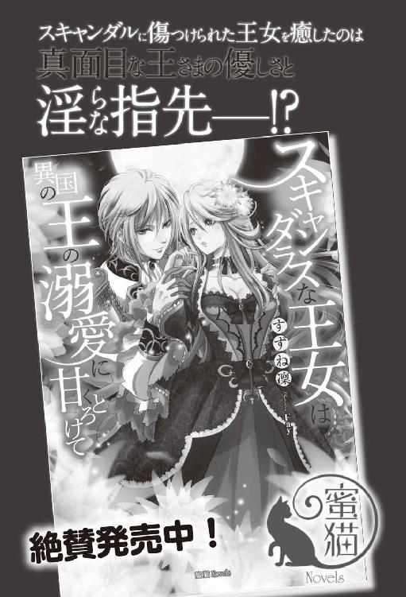
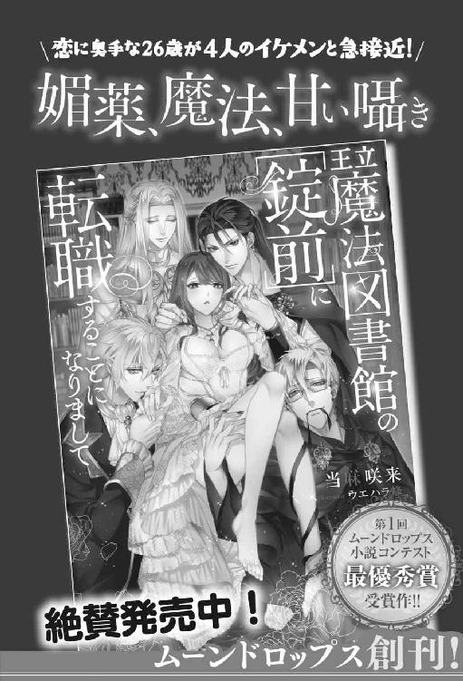
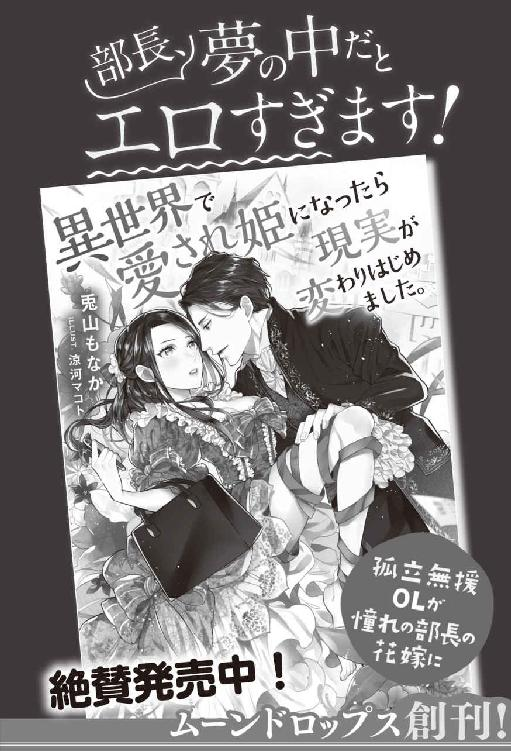
狐姫の身代わり婚［電子書籍版］
〜初恋王子はとんだケダモノ!?〜
発行日 ２０１７年10月１日 発行
著 者 真宮 奏
画 花岡美莉
編 集 株式会社パブリッシングリンク
装 丁 百足屋ユウコ＋モンマ蚕（ムシカゴグラフィクス）
発行者 後藤明信
発行所 株式会社竹書房
〒１０２－００７２
東京都千代田区飯田橋２－７－３
ＴＥＬ ０３－３２６４－１５７６
ＵＲＬ http://www.takeshobo.co.jp
データ加工 株式会社ＲＵＨＩＡ
 Mamiya Kanade 2017
Mamiya Kanade 2017
本書の一部あるいは全部を著作権者および株式会社竹書房に無断で複写・複製すること、および放送・上演・公衆送信（ホームページ上への掲載を含む）などは、法律で認められた場合を除き著作権の侵害となります。